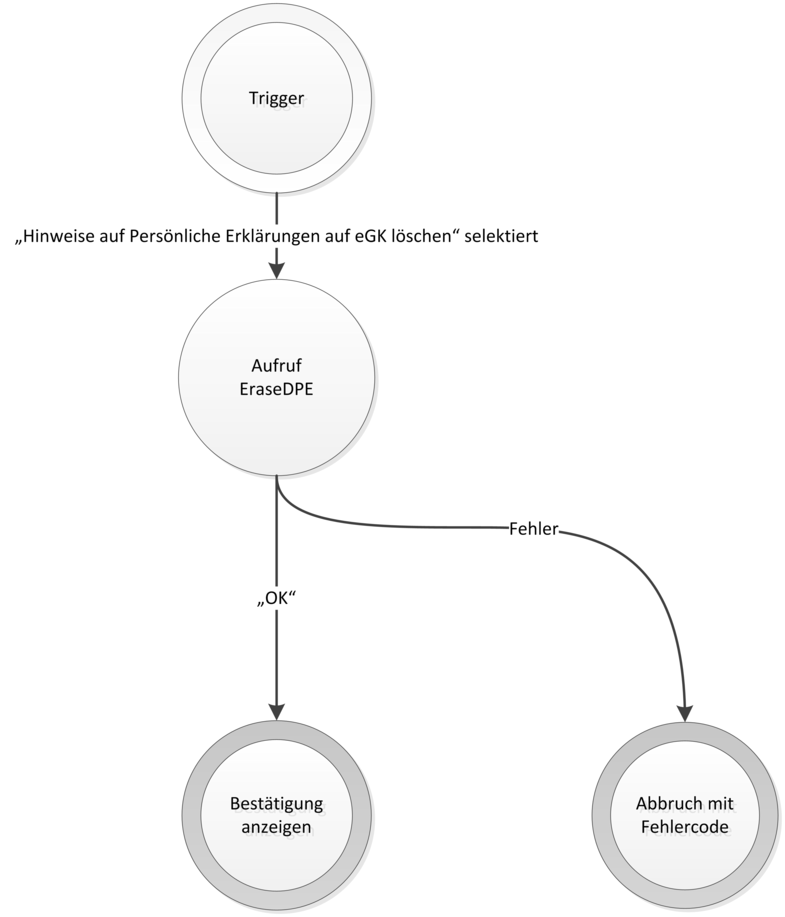

Elektronische Gesundheitskarte und Telematikinfrastruktur
Spezifikation
KTR-AdV
| Version | 1.7.0 |
| Revision | 571483 |
| Stand | 30.06.2020 |
| Status | freigegeben |
| Klassifizierung | öffentlich |
| Referenzierung | gemSpec_KTR-AdV |
Änderungen zur Vorversion
Anpassungen des vorliegenden Dokumentes im Vergleich zur Vorversion können Sie der nachfolgenden Tabelle entnehmen.
Dokumentenhistorie
| Version |
Stand |
Kap./ Seite |
Grund der Änderung, besondere Hinweise |
Bearbeitung |
|---|---|---|---|---|
| 1.0.0 |
02.08.17 |
Überarbeitung Online-Produktivbetrieb (Stufe 2.1) |
gematik |
|
| 1.1.0 |
20.02.18 |
Einarbeitung Änderungsliste P15.1 |
gematik |
|
| 1.2.0 |
14.05.18 |
Einarbeitung Änderungsliste P15.2 |
gematik |
|
| 1.3.0 |
26.10.18 |
Einarbeitung Änderungsliste P15.10 |
gematik |
|
| 28.11.18 |
Einarbeitung Änderungsliste P15.11 |
gematik |
||
| 1.4.0 |
18.12.18 |
Anh B - Leistungen der dezentralen TI-Plattform in eigenes Dokument [gemSpec_Systemprozesse_dezTI] ausgelagert |
gematik |
|
| 1.5.0 | 15.05.19 | redaktionelle Anpassung (Referenzen auf AnhB), Einarbeitung Änderungsliste P18.1 |
gematik |
|
| 1.6.0 | 28.06.19 | Einarbeitung P19.1 | ||
| 1.7.0 | 30.06.20 | Anpassungen gemäß Änderungsliste P22.1 und Scope-Themen aus Systemdesign R4.0.0 | gematik |
Die vorliegende Spezifikation definiert die Anforderungen zu Herstellung, Test und Betrieb des Produkttyps KTR-AdV.
Das Dokument richtet sich an Hersteller und Anbieter einer KTR-AdV sowie Hersteller und Anbieter von Produkttypen der TI, die hierzu eine Schnittstelle besitzen.
Dieses Dokument enthält normative Festlegungen zur Telematikinfrastruktur des deutschen Gesundheitswesens. Der Gültigkeitszeitraum der vorliegenden Version und deren Anwendung in Zulassungs- oder Abnahmeverfahren wird durch die gematik GmbH in gesonderten Dokumenten (z.B. Dokumentenlandkarte, Produkttypsteckbrief, Leistungsbeschreibung) festgelegt und bekannt gegeben.
Schutzrechts-/Patentrechtshinweis
Die nachfolgende Spezifikation ist von der gematik allein unter technischen Gesichtspunkten erstellt worden. Im Einzelfall kann nicht ausgeschlossen werden, dass die Implementierung der Spezifikation in technische Schutzrechte Dritter eingreift. Es ist allein Sache des Anbieters oder Herstellers, durch geeignete Maßnahmen dafür Sorge zu tragen, dass von ihm aufgrund der Spezifikation angebotene Produkte und/oder Leistungen nicht gegen Schutzrechte Dritter verstoßen und sich ggf. die erforderlichen Erlaubnisse/Lizenzen von den betroffenen Schutzrechtsinhabern einzuholen. Die gematik GmbH übernimmt insofern keinerlei Gewährleistungen.
Spezifiziert werden in dem Dokument die von dem Produkttyp bereitgestellten (angebotenen) Schnittstellen. Benutzte Schnittstellen werden hingegen in der Spezifikation desjenigen Produkttypen beschrieben, der diese Schnittstelle bereitstellt. Auf die entsprechenden Dokumente wird referenziert (siehe auch Anhang 9.5).
Die vollständige Anforderungslage für den Produkttyp ergibt sich aus weiteren Konzept- und Spezifikationsdokumenten, diese sind in dem Produkttypsteckbrief des Produkttyps KTR-AdV verzeichnet.
Anforderungen als Ausdruck normativer Festlegungen werden durch eine eindeutige ID sowie die dem RFC 2119 [RFC2119] entsprechenden, in Großbuchstaben geschriebenen deutschen Schlüsselworte MUSS, DARF NICHT, SOLL, SOLL NICHT, KANN gekennzeichnet.
Sie werden im Dokument wie folgt dargestellt:
<AFO-ID> - <Titel der Afo>
Text / Beschreibung
[<=]
Dabei umfasst die Anforderung sämtliche zwischen Afo-ID und Textmarke angeführten Inhalte.
Für die eigenständige Verwaltung der Anwendungen des Versicherten auf der elektronischen Gesundheitskarte steht dem Versicherten in einer Umgebung im Auftrag der Kostenträger und @home die KTR-AdV zur Verfügung.
Mit dieser wird der Versicherte in die Lage versetzt, eigenständig seine persönlichen Daten auf der eGK einzusehen, seine freiwilligen Anwendungen zu verwalten, sowie administrative Anwendungsfälle der PIN-Verwaltung auszuführen. Die Abbildung ABB_ADV_300 zeigt die Einordnung des Produkttyps in die Telematikinfrastruktur.
Abbildung 1: ABB_ADV_300 – Überblick AdV in einer Umgebung im Auftrag der Kostenträger
Die KTR-AdV gliedert sich in die beiden blau dargestellten Komponenten AdV-App und AdV-Server sowie eine Komponente zur sicheren Speicherung der Kostenträgeridentitäten und des dazugehörigen kryptografischen Schlüsselmaterials (z.B. in einem HSM). Auf einem Gerät für die Benutzung durch den Versicherten wird die AdV-App zur Anbindung der eGK bereitgestellt. Diese AdV-App baut über eine produkttyp-interne Schnittstelle eine Verbindung zum zugehörigen AdV-Server auf, der im Auftrag einer Krankenkasse in einem Rechenzentrum betrieben wird.
Zur Freischaltung der eGK des Versicherten für die Umgebung der Kostenträger wird ein CV-Zertifikat des Kostenträgers mit einem Profil „KTR-AdV“ mit entsprechendem Schlüsselmaterial verwendet, das über ein Card-to-Card-Verfahren den Zugriff für die Anwendungsfälle auf der eGK gewährt.
AdV-A_2532
Die KTR-AdV MUSS für die Freischaltung der eGK ein CV-Zertifikat C.SMC.AUTR_CVC.E256 verwenden. <=
Daraus folgt, dass kein anderes Zugriffsprofil für die Freischaltung der eGK verwendet werden darf.
Dem Produkttyp KTR-AdV stehen keine dedizierten, benachbarten Produkttypen zur Realisierung der Leistung der TI-Plattform (z.B. Konnektor) zur Verfügung. Die KTR-AdV muss die Verfahren und Systemprozesse der TI-Plattform, wie den Zugriff auf Smartcards und Zugriffe auf zentrale Dienste, implementieren.
Über die logische Komponente TIP-Consumer-Adapter stehen die Schnittstellen und Dienste der zentralen TI-Plattform zur Verfügung. Die Anbindung der eGK des Versicherten an die AdV-App und die kryptografische Verwendung der Identitäten der Kostenträger im AdV-Server erfolgen über eine logische Zugriffsschicht zur Kapselung plattformspezifischer Aspekte in Systemprozessen der TI-Plattform (vgl. Abbildung ABB_ADV_304).
Zur Anbindung der eGK an die AdV-App soll auf Geräten des Versicherten ein einfaches kontaktbehaftetes oder kontaktloses Kartenterminal angenommen werden, das seinerseits nicht notwendigerweise über Sicherheitsmerkmale verfügt. Wird die AdV-App in einem KTR-AdV-Terminal betrieben, dann erfolgt die Anbindung der eGK über ein Kartenterminal mit Sicherheitsmerkmalen (Display und PIN-Pad).
Zur Bildung eines Vertrauensraumes steht der KTR-AdV die PKI der TI zur Verfügung. Sie setzt die Mechanismen der PKI zum Aufspannen eines Vertrauensraums um. Die zertifikatsbasierte Authentisierung in Verbindung mit den kryptografischen Verfahren der TI dient der Sicherstellung des Datenschutzes, der Integrität und der Vertraulichkeit der Daten des Versicherten.
In einer Leistungserbringerumgebung stellt der Konnektor den Fachmodulen der Fachanwendungen Schnittstellen und Dienste der TI-Plattform bereit, welche diese zur Abbildung fachlicher Anwendungsfälle nutzen. Der Konnektor kapselt zusätzlich den Zugriff auf Smartcards und steuert die Kommunikation mit den entsprechenden Kartenterminals. Im Gegensatz dazu wird die Fachlogik der Fachanwendungen in der KTR-AdV mit der für die Umsetzung notwendigen Logik der dezentralen TI-Plattform in einem einzigen Produkttyp realisiert. Die Umsetzung der Fachlogik der Fachanwendungen kann sich auf AdV-App und AdV-Server verteilen.
Die von den Fachanwendungen benötigte Logik der dezentralen TI-Plattform wird in Form von Systemprozessen beschrieben. Diese stellen eine Leistungsbeschreibung dar, ohne Vorgaben an konkrete Realisierungsdetails zu machen. Sie setzen sich aus Logik-Bausteinen der verschiedenen Domänen der TI-Plattform (Karten, PKI, Kryptografie, etc.) zusammen und beschreiben fachliche Zusammenhänge. Die Fachmodule der Fachanwendungen setzen ihre fachanwendungsspezifischen Operationen in der KTR-AdV um, in dem sie auf die entsprechenden Systemprozesse verweisen. Die folgende Abbildung ABB_ADV_304 zeigt diesen Zusammenhang, ohne eine Vorgabe an die Modularisierung einer KTR-AdV-Software zu machen.
Abbildung 2: ABB_ADV_304 – Zusammenhang Systemprozesse und Fachanwendung
In Abhängigkeit von der Ablaufumgebung, z.B. dem verwendeten Kartenterminal, sind für das Funktionieren der Systemprozesse zusätzliche Umgebungsparameter oder umgebungsspezifische Operationen erforderlich. Diese werden als Eingabe- bzw. Ausgabeschnittstellen in den Systemprozessen aufgerufen und führen zu einem Tayloring (Zuschnitt) der Leistung der TI-Plattform auf eine an die Umgebung der Kostenträger angepasste „AdV-Plattform.“ Die KTR-AdV muss diese Schnittstellen als Umgebung zur Realisierung der Leistungen der TI-Plattform implementieren (Realisierungsumgebung).
Die Spezifikation der Systemprozesse findet sich in [gemSpec_Systemprozesse_dezTI]. Es werden Anforderungen an die zu erbringende Leistung gestellt, ohne Vorgaben zu den zu verwendenden Technologien zu machen. Die Ausgestaltung und Modularisierung zwischen logischer Plattformebene, Kapselung von Fachlogik der weiteren Fachanwendungen sowie der gesicherten Schnittstelle zwischen AdV-App und AdV-Server obliegt dem Hersteller einer Lösung der KTR-AdV.
Im Systemkontext der KTR-AdV interagieren verschiedene Akteure (aktive Komponenten) in unterschiedlichen Rollen mit der KTR-AdV. Die folgenden Akteure interagieren mit der KTR-AdV:
Die folgende Tabelle TAB_ADV_300 listet diejenigen Akteure auf, die in verschiedenen Rollen mit der KTR-AdV interagieren.
Tabelle 1: TAB_ADV_300 – Akteure und ihre Rollen
| Akteur |
Rolle |
Beschreibung |
|---|---|---|
| Nutzer |
Versicherter |
Primärer Anwender, Nutzung von fachlichen Anwendungsfällen für Zugriff auf Daten der eGK Hinweis: Der Vertreter des Versicherten für AMTS ist kein Akteur in AdV. Ihm werden keine Anwendungsfälle bereitgestellt. |
| Rollen für Administration und Betrieb |
Sekundärer Anwender, führt Administrations- und Betriebsaufgaben für die KTR-AdV durch, wie z. B.
|
|
| Ausführungsumgebung |
KTR-AdV-Terminal |
Interaktives Gerät für Zugang zu mittels eGK gespeicherten Daten des Versicherten durch den Versicherten zur Wahrnehmung der Rechte auf informationelle Selbstbestimmung |
| Gerät des Versicherten |
Gerät des Versicherten, dass u.a. für Zugang zu mittels der eGK gespeicherten Daten zur Wahrnehmung der Rechte auf informationelle Selbstbestimmung ermöglicht |
|
| Anbieter |
Organisatorische Rolle, kein Akteur in der Ausführung von Anwendungsfällen |
Hat die Betriebsverantwortung eines Produkts des Produkttyps KTR-AdV |
| Betreiber |
Organisatorische Rolle, kein Akteur in der Ausführung von Anwendungsfällen |
Der Betreiber eines konkreten Produkts, in dessen Betriebsumgebung die Teilkomponente AdV-Server (und ggfs. KTR-AdV-Terminals) betrieben werden |
Der Nutzer kann in verschiedenen Rollen aktiv werden. Als Versicherter nimmt der Nutzer seine Datenschutzrechte auf informationelle Selbstbestimmung wahr, indem er fachliche Anwendungsfälle zum Anzeigen und ggfs. Bearbeiten der mittels seiner eGK gespeicherten Daten startet. Die Nutzer mit den Rollen Administration und Betrieb stellen die technische Betriebsbereitschaft der KTR-AdV her, d. h. sie konfigurieren das System für die Inbetriebnahme und stellen während des Betriebs die Betriebsbereitschaft sicher.
AdV-A_2571
Der Anbieter einer KTR-AdV MUSS – als Teil des Sicherheitskonzepts – ein Rollen- und Berechtigungskonzept erstellen, welches die Administrations- und Betriebsaufgaben der KTR-AdV abdeckt. <=
AdV-A_2533
Die KTR-AdV MUSS für die Benutzerverifikation für den Zugriff auf eine Karte der TI ein entsprechendes PIN-Objekt der passenden Rolle der folgenden Benutzer verwenden:
Gemäß den Festlegungen in [gemSpec_eGK_ObjSys#5.3.10] darf die MRPIN.home nur außerhalb der TI verwendet werden. Im Produkttyp KTR-AdV als Teil der TI findet sie somit keine Verwendung.
Für die Benutzerverifikation der Rolle des Versicherten wird die PIN.CH verwendet.
Die Ausführungsumgebung kann zwei verschiedene Ausprägungen haben und bezieht sich auf die Ausführung der Teilkomponente AdV-App. Als KTR-AdV-Terminal wird sie von einem Betreiber verantwortet und muss eine bestimmte Sicherheitsleistung erbringen, um die mittels der eGK gespeicherten Daten des Versicherten zu schützen. Das KTR-AdV-Terminal wird als separater Produkttyp der TI spezifiziert. Im Gegensatz dazu ist ein Gerät des Versicherten ein beliebiges Gerät im Zugriff des Versicherten. Hier obliegt es dem Versicherten, die mittels seiner eGK gespeicherten Daten durch geeignete Maßnahmen zu schützen, da die hier spezifizierten Sicherheitsaspekte nur bis in die beim Versicherten ausgeführte Softwarekomponente AdV-App durchgesetzt werden können.
Die von der KTR-AdV erreichbaren Produkttypen der TI sind
Die SM-B-Identitäten werden in der KTR-AdV benötigt, um auf der eGK des Versicherten erweiterte Zugriffsrechte freizuschalten und Verbindungen zu Fachdiensten und zu Diensten der zentralen TI-Plattform aufzubauen. Die Dienste der zentralen TI-Plattform und Fachdienste sind beispielsweise an den Anwendungsfällen zur Gültigkeitsprüfung und Aktualisierung der eGK des Versicherten beteiligt. Die Einbeziehung der SM-B-Identitäten der KTR-AdV muss unter Verwendung eines sicheren Speichers des kryptografischen Schlüsselmaterials der verwendeten Identitäten erfolgen.
Die Außenschnittstellen des Produkttyps KTR-AdV sind in der Abbildung ABB_ADV_301 dargestellt und im Folgenden aufgelistet:
Abbildung 3: ABB_ADV_301 – Kontextdiagramm
Die Komponenten der KTR-AdV werden in verschiedenen Umgebungen betrieben, die in ABB_ADV_303 dargestellt sind.
Abbildung 4: ABB_ADV_303 – Verteilungsdiagramm
Die Komponente „AdV-Server“ wird in einem Rechenzentrum betrieben:
AdV-A_2403
Der Anbieter einer AdV in einer Umgebung im Auftrag der Kostenträger MUSS den AdV-Server in einem Rechenzentrum im Auftrag der Krankenkassen betreiben. <=
Der Komponente „AdV-App“ stehen zwei verschiedene Ablaufumgebungen zur Verfügung.
Im nicht-öffentlichen zugänglichen Bereich (@home) wird die AdV-App auf einem Gerät des Versicherten betrieben. An diese Umgebung können keine Sicherheitsanforderungen gestellt werden. Der Schutz des eingesetzten Gerätes liegt in der Verantwortung des Versicherten. Durch geeignete Hinweise und Empfehlungen soll der Versicherte aufgeklärt werden, wie die AdV-App sicher genutzt werden kann und dass auch der Versicherte selbst hierzu beitragen kann. Im Rahmen dieser Informationen sollen insbesondere die Vorteile eines Kartenterminals mit Sicherheitsmerkmalen (bspw. Display, PIN-Pad) beschrieben und entsprechende Empfehlungen ausgesprochen werden.
AdV-A_2404
Der Anbieter einer KTR-AdV MUSS den Versicherten informieren, welche Maßnahmen zum sicheren Betrieb der AdV-App auf dem Gerät eines Versicherten beitragen. <=
Im öffentlichen zugänglichen Bereich wird die AdV-App in einem KTR-AdV-Terminal betrieben.
AdV-A_2405
Der Betreiber einer KTR-AdV MUSS die AdV-App, falls sie innerhalb eines öffentlich zugänglichen Bereichs zur Verfügung gestellt wird, in einem KTR-AdV-Terminal betreiben. <=
Das KTR-AdV-Terminal ist ein Produkttyp der TI. Anforderungen an den Produkttyp sind in [gemSpec_KTR-AdV-Terminal] spezifiziert.
Der Produkttyp KTR-AdV besteht aus den Teilsystemen AdV-Server und AdV-App.
Im Folgenden wird die Zerlegung des Produkttyps KTR-AdV dargestellt, welche für die Übersicht der funktionalen Leistungsmerkmale in vorliegender Spezifikation nötig ist.
Abbildung 5: ABB_ADV_329 – Komponentendiagramm der KTR-AdV
In Tabelle TAB_ADV_329 werden die Komponenten, ihre Verantwortlichkeit und spezifische Funktionalitäten dargestellt.
Tabelle 2: TAB_ADV_329 – Komponenten, Verantwortung und Funktionalitäten
| Komponente |
Verantwortung und Funktionalität |
Spezifiziert in |
|---|---|---|
| AdV-App |
Diese Komponente stellt die clientseitige Funktionalität zur Verfügung.
|
Kap. 6 |
| Fachlogik (App) |
In dieser Komponente wird die gesamte Fachlogik in Form von fachanwendungsspezifischen Modulen gebündelt. Daten werden - soweit möglich - ausschließlich lokal verarbeitet. |
Kap. 6.1 |
| FLA-AdV |
Dieses Modul setzt die Anwendungsfälle der Fachanwendung AdV um. Das Modul stellt generische Funktionalitäten bereit, welche durch die Fachanwendungen für ihre Anwendungsfälle genutzt werden können. |
Kap. 6.1.4 |
| FLA-AMTS |
Dieses Modul setzt die Anwendungsfälle der Fachanwendung eMP/AMTS um. Aktuell können alle AMTS-Anwendungsfälle durch generische AdV-Operationen umgesetzt werden. Deshalb enthält dieser Modul derzeit keine fachanwendungsspezifischen Abläufe. |
Kap. 6.1.8 |
| FLA-NFDM |
Dieses Modul setzt die Anwendungsfälle der Fachanwendungen NFDM um. Wenn sich die Anwendungsfälle aufgrund fachanwendungsspezifischer Abläufe nicht durch generische AdV-Operationen umsetzen lassen, dann werden Leistungen von fachanwendungsspezifischen Operationen genutzt. Diese sind in [gemSpec_FLA_NFDM] spezifiziert. |
Kap. 6.1.6 Kap. 6.1.7 [gemSpec_FLA_NFDM] |
| FLA-VSDM |
Dieses Modul setzt den Anwendungsfall der Fachanwendung VSDM um. Für den Ablauf wird eine fachanwendungsspezifische Operation genutzt, welche in [gemSpec_FM_VSDM] spezifiziert ist. |
6.1.5 [gemSpec_FM_VSDM] |
| Plattformbausteine (App) |
In dieser Komponente sind sämtliche Plattformbausteine, die in der App benötigt werden, enthalten. Diese Komponente wird von der Fachlogik angesteuert und stellt Funktionalitäten der TI-Plattform zur Verfügung:
|
Kap. 6.1.10 |
| ServerProxy |
Diese Komponente stellt die Verbindung zum AdV-Server her.
|
Kap. 5.1.2 |
| AdV-Server |
Diese Komponente stellt die Funktionalitäten zur Verfügung, die eine AdV-App benötigt, um mit den Diensten der zentralen TI und Fachdiensten in der TI zu kommunizieren. |
Kap. 6 |
| Fachlogik (Server) |
In dieser Komponente wird die gesamte Fachlogik in Form von fachanwendungsspezifischen Modulen gebündelt, die im AdV-Server benötigt wird. |
Kap. 6.1 |
| FLS-VSDM |
Dieses Modul setzt die Fachlogik um, die zwischen dem Modul FLA-VSDM in der AdV-App und den Fachdiensten VSDM in der TI benötigt wird:
|
Kap. 6.1.5 [gemSpec_SST_VSDM] [gemSpec_SST_FD_VSDM] |
| Plattformbausteine (Server) |
In dieser Komponente sind sämtliche Plattformbausteine, die der AdV-Server benötigt, enthalten. Diese Komponente wird von der Fachlogik angesteuert und stellt Funktionalitäten der TI-Plattform zur Verfügung:
|
Kap. 6.1.10 |
| Consumer Adapter |
Diese Komponente wird durch die TI-Plattform spezifiziert. Der Consumer Adapter stellt Leistung der TI-Plattform innerhalb des Produkttyps KTR-AdV bereit. Die Anforderungen an diese Komponente finden sich in übergreifenden Spezifikationen und sind im Produkttypsteckbrief zur KTR-AdV aufgeführt. Folgende Funktionalitäten erfüllt diese Komponente:
|
Kap. 6.2.4 |
| AppProxy |
Diese Komponente stellt die Verbindung zur AdV-App her.
|
Kap. 5.1.2 |
In diesem Kapitel werden übergreifende Anforderungen beschrieben, die sich aus den Themenfeldern Datenschutz und Sicherheit ergeben.
Um den Datenschutz des Versicherten zu gewährleisten, werden folgende Anforderungen gestellt:
AdV-A_2407
Die KTR-AdV DARF personenbezogene Daten von Versicherten, mit Ausnahme der ICCSN der betroffenen eGK bei eGK-bezogenen Fehlern, NICHT persistent speichern. <=
AdV-A_2409
Die KTR-AdV MUSS alle Daten des Versicherten, mit Ausnahme der ICCSN der betroffenen eGK bei eGK-bezogenen Fehlern, aus seinem Speicher löschen, sobald die AdV-Sitzung des Versicherten beendet wird. <=
AdV-A_2410
Die AdV-App MUSS den Versicherten nach spätestens fünf Minuten Inaktivität von der AdV-App automatisch abmelden und die Sitzung beenden. Eine Aktivität binnen der maximalen Inaktivitätsdauer MUSS die Ablaufzeit für die Inaktivitätsdauer erneut starten. <=
AdV-A_2568
Die AdV-App KANN dem Versicherten vor der Abmeldung wegen Inaktivität einen Hinweis einblenden, der es dem Nutzer ermöglicht die Sitzung fortzuführen. <=
Es kann vor der Abmeldung des Versicherten ein Hinweis eingeblendet werden, der es dem Nutzer ermöglicht die Session fortzuführen.
AdV-A_2534
Die AdV-App DARF NICHT Daten des Versicherten an den AdV-Server übertragen, wenn sich der Anwendungsfall auch mit lokalen Mitteln ausführen lässt. Dies betrifft alle medizinischen Daten nach § 291a Abs.2 und Abs.3 SGB V, eGK-Protokolldaten, die Information über genutzte Fachanwendungen, den DPE, die VSD (ausgenommen die KVNR), die PIN und Zertifikate der eGK außer C.CH.AUTN und C.eGK.AUT_CVC.E256 <=
Hiermit soll erreicht werden, dass die AdV-App nur dann mit dem AdV-Server kommuniziert, wenn dies für den Anwendungsfall unbedingt notwendig ist. Beispiele hierfür sind die Gültigkeitsprüfung beim Sitzungsstart oder die Kommunikation zu den Fachdiensten VSDM für die Onlineprüfung und -aktualisierung der Versichertenstammdaten. Die Änderung einer PIN oder das Anzeigen von Protokolldaten der eGK hingegen lässt sich mit lokalen Mitteln durchführen und darf nicht über den AdV-Server umgesetzt werden.
Die AdV-App kann unter Wahrung der gesetzlichen Rahmenbedingungen die KVNR an den AdV-Server übertragen.
AdV-A_2411
Die KTR-AdV DARF NICHT medizinische Daten protokollieren. <=
AdV-A_2412
Die KTR-AdV DARF NICHT personenbezogene Daten von Versicherten, mit Ausnahme der ICCSN der betroffenen eGK bei kartenbezogenen Fehlern, protokollieren. <=
Um die verarbeiteten Daten zu schützen, werden folgende Anforderungen zur Absicherung der AdV-Komponenten erhoben:
AdV-A_2413
Der AdV-Server MUSS unberechtigte Zugriffe auf die dort gespeicherten und verarbeiteten Daten und das zentrale Netz der TI verhindern. <=
Hierzu zählen bspw. der Zugriff über externe Schnittstellen zum Internet oder der TI, das Ausnutzen von Schwachstellen der installierten Software bzw. des Betriebssystems / der Firmware oder das Einbringen von Schadsoftware. Je nach Ausgestaltung und Funktionsumfang können geeignete Maßnahmen bspw. sein:
AdV-A_2546
Der Anbieter der KTR-AdV MUSS die AdV-App so an die Nutzer verteilen und diese darüber informieren, dass sie in der Lage sind, die Quelle und damit auch die Integrität und Authentizität der AdV-App zu prüfen. <=
Mit dieser Anforderung soll erreicht werden, dass die AdV-App über den offiziellen Weg des Herstellers bzw. die technologischen Standardmechanismen einer Plattform verteilt wird. Bspw. sollte der Play-Store für die Verteilung einer Android-Variante der AdV-App verwendet werden und für PC-Installationen sollte die Anwendung von der offiziellen Website des Anbieters herunterladbar sein. Nutzer müssen ausreichend informiert werden. Zum Beispiel könnte auf der Website des Anbieters der Name und der Hersteller der AdV-App genannt werden, damit diese im jeweiligen App-Store leicht zu identifizieren ist. Ziel ist es, dem Nutzer der AdV-App Sicherheit zu geben, dass er die richtige AdV-App nutzt.
AdV-A_2414
Der Anbieter der AdV-App MUSS zeitnah Softwareaktualisierungen zur Beseitigung von Schwachstellen der AdV-App bereitstellen.
<=Die Reaktionszeiten auf Schwachstellen sind vom Hersteller für die einzelnen Softwarekomponenten anzugeben und werden im Rahmen der Sicherheitsprüfung bewertet.
AdV-A_2415
Die AdV-App MUSS die vertrauliche PIN-Eingabe des Versicherten erlauben. <=
Für die Umsetzung sind bspw. folgende Maßnahmen sinnvoll:
Die Verbindung zwischen AdV-Server und AdV-App wird mittels TLS gemäß den Vorgaben aus [gemSpec_Krypt] abgesichert.
AdV-A_2416
Die AdV-App MUSS mit dem AdV-Server ausschließlich über TLS kommunizieren. <=
A_16395
Die KTR-AdV DARF im Rahmen der TLS-Verbindung zwischen AdV-App und AdV-Server die Renegotiation und Session-Resumption NICHT unterstützen. <=
Die AdV-App muss dabei in der Lage sein, auch ohne Verwaltung einer aktuellen TSL einen AdV-Server zu authentisieren. Daher benötigt sie einen Truststore, in dem sich bereits vor dem Verbindungsaufbau die TLS-Zertifikate der AdV-Server befinden, mit denen sie sich verbinden kann. Die TLS-Zertifikate müssen den Vorgaben von [gemSpec_Krypt] entsprechen.
AdV-A_2417
Die AdV-App MUSS Zugriff auf einen lokalen integer geschützten Truststore besitzen, der die TLS-Zertifikate der AdV-Server enthält, mit denen die AdV-App sich verbinden kann. <=
AdV-A_2572
Die AdV-App SOLL den lokalen Truststore enthalten. <=
Ein möglicher Grund, die Anforderung AdV-A_2572 nicht umzusetzen, ist die Verwendung einer Plattform für die Ausführung der AdV-App, die einen eigenen Truststore anbietet und dessen Verwendung verlangt.
AdV-A_2573
Der Anbieter der KTR-AdV MUSS für die AdV-App ein Verfahren zur initialen Auslieferung sowie Aktualisierung des Vertrauensankers für die AdV-Server-TLS-Zertifikate implementieren, das die Integrität und Authentizität des Vertrauensankers wahrt. <=
Damit die AdV-App stets aktuelle Zertifikate der AdV-Server erhält, ist ein Verfahren notwendig, den lokalen Truststore der AdV-App initial zu befüllen und zu aktualisieren. Dies kann zum Beispiel durch neue Versionen der AdV-App – welche einen aktualisierten Truststore enthalten – realisiert werden. Es sind aber auch andere Verfahren denkbar.
AdV-A_2421
Der AdV-Server MUSS Verbindungen an der Schnittstelle zum Internet ablehnen, wenn keine TLS-Verbindung aufgebaut werden kann oder die nachgelagerte Authentifizierung gemäß ABB_ADV_333 fehlschlägt. <=
A_19968
Der Hersteller der AdV-App MUSS im dazugehörigen Handbuch alle Voraussetzungen leicht ersichtlich darstellen, die von der Ausführungsumgebung (insbesondere KTR-AdV-Terminal) erfüllt werden müssen, damit ein sicherer Betrieb der AdV-App gewährleistet werden kann. <=
Hinweis: Der Hersteller der AdV-App muss bei der Dokumentation der Voraussetzungen die Einsatzumgebung der AdV-App unterscheiden. Es sind zum einen die Voraussetzungen für den Betrieb einer AdV-App auf einem Endgerät des Versicherten, zum anderen die Voraussetzungen für den Betrieb einer AdV-App auf einem KTR-AdV-Terminal zu beschreiben.
In diesem Kapitel ist der Verbindungsaufbau von der AdV-App zum AdV-Server und die anschließende Freischaltung der eGK durch ein Card-to-Card (C2C) beschrieben, welche im Rahmen des Anwendungsfalls „Starten einer Sitzung“ durchgeführt werden.
Abbildung 6 : ABB_ADV_333 Verbindungsaufbau und Freischaltung eGK
A_15110
Die AdV-App MUSS während des Sitzungsstarts eine TLS-Verbindung zum AdV-Server aufbauen. <=
AdV-A_2418
Die AdV-App MUSS bei jedem Verbindungsaufbau den AdV-Server anhand seines TLS-Zertifikats mittels des lokalen Truststores authentifizieren und MUSS die Verbindungen ablehnen, falls die Authentifizierung fehlschlägt. <=
A_15111
Die AdV-App MUSS für die Freischaltung der eGK die IK-Nummer aus dem C.CH.AUT Zertifikat der eGK an den AdV-Server senden. <=
Das Institutskennzeichen entspricht der 9-stelligen Nummer aus dem Organizational Unit Name im Subject Distinguished Name des C.CH.AUT-Zertifikates des Versicherten.
A_15112
Der AdV-Server und AdV-App MÜSSEN ein beidseitiges Card-to-Card durchführen, wobei der AdV-Server ein CV-Zertifikat C.KTRADV.AUTR_CVC.E256 erwendet, und einen Trusted Channel etablieren. Der Trusted Channel wird vom AdV-Server zur eGK unter Verwendung der CV Schlüssel (elcSessionkey4TC) ausgehandelt. <=
Ein CV-Zertifikat C.KTRADV.AUTR_CVC.E256 hat das Zugriffsprofil CHA.0 und besitzt keine Rechte zum Freischalten der eGK.
AdV-A_2570
Der AdV-Server MUSS für das Card-to-Card eine SM-B des Herausgebers der eGK verwenden und die Verbindung abbrechen, wenn diese SM-B nicht verfügbar ist. <=
Die Zuordnung zwischen der eGK und der SM-B des Herausgebers kann anhand der von der AdV-App übermittelten IK-Nummer erfolgen.
A_15113
Die AdV-App MUSS während des beidseitigen Card-to-Card prüfen, dass das zu importierende CV-EE-Zertifikat das Zugriffsprofil CHA.0 besitzt. <=
A_15114
Der AdV-Server MUSS in dem Trusted Channel den Status der PIN.CH der eGK abfragen und die Verbindung abbrechen, wenn der Sicherheitszustand des Passwortobjektes nicht gesetzt ist. <=
Die erwartete Antwort der eGK auf das Kartenkommando Get PIN Status ist NoError (‚90 00‘).
A_15115
Der AdV-Server und die AdV-App MÜSSEN nach erfolgreicher Prüfung des Status der PIN.CH der eGK ein einseitiges Card-to-Card durchführen, wobei der AdV-Server ein CV-Zertifikat C.SMC.AUTR_CVC.E256 erwendet. <=
Ein CV-Zertifikat C.SMC.AUTR_CVC.E256 hat das Zugriffsprofil CHA.1. Das einseitige Card-to-Card schaltet die eGK frei. Der für die Statusabfrage aufgebaute Trusted Channel kann abgebaut werden.
A_15116
Die AdV-App MUSS bei Fehlern in den Operationen zum Verbindungsaufbau und der Freischaltung der eGK während des Sitzungsstarts die Sitzung beenden. <=
Für Erläuterungen zum Card-2-Card und der Prüfung des Status einer PIN siehe auch [gemSpec_CardProxy].
Während der Freischaltung der eGK durch ein Card-to-Card und der Onlineaktualisierung der VSD findet eine direkte Kommunikation zwischen der eGK und dem AdV-Server bzw. den Fachdiensten VSDM über den AdV-Server statt. Damit eine freigeschaltete eGK nicht durch einen manipulierten AdV-Server ausgelesen werden kann, muss die AdV-App alle Kartenkommandos, welche über den AdV-Server an die eGK gesendet werden, prüfen.
A_15117
Die AdV-App MUSS alle vom AdV-Server gesendeten Kartenkommandos ablehnen, welche nicht gemäß [TR-03158#Anhang C] zulässig sind, und die AdV-Sitzung beenden. <=
Der AdV-Server und die AdV-App auf dem KTR-AdV-Terminal sollen Protokolldateien schreiben, die eine Analyse technischer Vorgänge erlauben. Diese Protokolldateien sind dafür vorgesehen, aufgetretene Fehler zu identifizieren, die Performance zu analysieren und interne Abläufe zu beobachten. Bei der Erstellung von Einträgen in ein Protokoll bzw. Log sind die Anforderungen aus Kapitel 5.1.1 Verarbeitung personenbezogener Daten umzusetzen.
Ein Logging der AdV-App auf Geräten des Versicherten ist nicht vorgesehen.
AdV-A_2437
Die AdV-App MUSS als Standardkonfiguration das Logging deaktiviert haben und auf dem KTR-AdV-Terminal die Aktivierung dieser Option durch einen berechtigten Nutzer ermöglichen. <=
Es gelten die übergreifenden Anforderungen zum Logging aus [gemSpec_OM].
AdV-A_2422
Der AdV-Server MUSS bei lokal erkannten Fehlern und Remote-Fehlern ein Fehlerprotokoll schreiben, welches dem berechtigten Nutzer für Administrations- und Betriebsaufgaben Rückschlüsse auf die aufgetretenen Fehler ermöglicht. <=
AdV-A_2423
Die AdV-App MUSS, wenn sie auf einem KTR-AdV-Terminal betrieben wird, bei lokal erkannten Fehlern und Remote-Fehlern ein Fehlerprotokoll schreiben, welches dem berechtigten Nutzer für Administrations- und Betriebsaufgaben Rückschlüsse auf die aufgetretenen Fehler ermöglicht. <=
AdV-A_2424
Die KTR-AdV MUSS die ICCSN der eGK im Protokoll speichern, wenn ein eGK-bezogener Fehler aufgetreten ist. <=
AdV-A_2426
Die KTR-AdV MUSS jede ICCSN nach maximal 180 Tagen aus dem Fehlerprotokoll löschen. <=
AdV-A_2428
Der AdV-Server MUSS ein Ablaufprotokoll schreiben, das geeignet ist, die ausgeführten Abläufe nachzuvollziehen. Das Ablaufprotokoll erfasst für jeden ausgeführten Vorgang: Vorgangsbezeichner, Datum mit Uhrzeit von Beginn und Ende, vollständiger Name des Vorgangs, Beschreibung des Vorgangs inkl. des Ergebnisses: Erfolg oder Fehlermeldung (Returnwert/Fehlercode). <=
AdV-A_2429
Die AdV-App MUSS, wenn sie auf einem KTR-AdV-Terminal betrieben wird, ein Ablaufprotokoll schreiben, das geeignet ist, die ausgeführten Abläufe nachzuvollziehen. Das Ablaufprotokoll erfasst für jeden ausgeführten Vorgang: Vorgangsbezeichner, Datum mit Uhrzeit von Beginn und Ende, vollständiger Name des Vorgangs, Beschreibung des Vorgangs inkl. des Ergebnisses: Erfolg oder Fehlermeldung (Returnwert/Fehlercode). <=
AdV-A_2430
Der AdV-Server SOLL ein Performanceprotokoll schreiben, welches geeignet ist, die Ausführungszeit von Operationen auf dem AdV-Server zu überprüfen. <=
AdV-A_2431
Die AdV-App SOLL, wenn sie auf einem KTR-AdV-Terminal betrieben wird, ein Performanceprotokoll schreiben, welches geeignet ist, die Ausführungszeit der Operationen der AdV-App zu überprüfen. <=
AdV-A_2432
Der AdV-Server KANN im Testbetrieb unter Verwendung des Severity Codes "Debug" ein DebugLog schreiben, welches eine erweiterte Protokollierung für Testzwecke ermöglicht. <=
AdV-A_2433
Die AdV-App KANN, wenn sie auf einem KTR-AdV-Terminal betrieben wird, im Testbetrieb unter Verwendung des Severity Codes "Debug" ein DebugLog schreiben, welches eine erweiterte Protokollierung für Testzwecke ermöglicht. <=
AdV-A_2434
Der AdV-Server KANN ein SecurityLog zur Protokollierung sicherheitsrelevanter Ereignisse implementieren. <=
AdV-A_2435
Die AdV-App KANN, wenn sie auf einem KTR-AdV-Terminal betrieben wird, ein SecurityLog zur Protokollierung sicherheitsrelevanter Ereignisse implementieren. <=
AdV-A_2436
Der Betreiber der KTR-AdV MUSS im Rahmen von Testmaßnahmen dem Testbetriebsverantwortlichen auf Anforderung die Log-Dateien übermitteln. <=
Die Rolle des Testbetriebsverantwortlichen ist im Testkonzept [gemKPT_Test] beschrieben.
AdV-A_2438
Der AdV-Server SOLL die Fehleranalyse durch eine mit Logleveln konfigurierbare Speicherung der aufgetretenen Fehlerfälle unterstützen. <=
AdV-A_2439
Die AdV-App SOLL, wenn sie auf einem KTR-AdV-Terminal betrieben wird, die Fehleranalyse durch eine mit Logleveln konfigurierbare Speicherung der aufgetretenen Fehlerfälle unterstützen. <=
AdV-A_2440
Der AdV-Server MUSS Protokolleinträge so anlegen, dass eine Analyse der Einträge unterstützt wird:
AdV-A_2441
Die AdV-App MUSS, wenn sie auf einem KTR-AdV-Terminal betrieben wird, Protokolleinträge so anlegen, dass eine Analyse der Einträge unterstützt wird:
AdV-A_2442
Der AdV-Server MUSS den Zugriff auf Protokolldateien auf berechtigte Nutzer für Administrations- und Betriebsaufgaben beschränken. <=
AdV-A_2443
Die AdV-App MUSS, wenn sie auf einem KTR-AdV-Terminal betrieben wird, den Zugriff auf Protokolldateien auf berechtigte Nutzer für Administrations- und Betriebsaufgaben beschränken. <=
Die KTR-AdV ist ein dezentraler Produkttyp der TI, welcher nicht direkt in den Versorgungsprozess beim Leistungserbringer eingebunden ist. Die Beauftragung zur Umsetzung erfolgt durch die Kostenträger. Diese haben durch eine Integration der AdV-Lösung in ihre Onlinestrategie eine Möglichkeit, Mehrwert für ihre Versicherten zu schaffen. Aus diesem Grund werden Anforderungen zur Verfügbarkeit und Performance der KTR-AdV nicht durch die gematik, sondern durch den beauftragenden Kostenträger gestellt.
Die folgenden Anwendungsfälle beschreiben das Außenverhalten des Systems anhand der Implementierung von AdV-Anwendungsfällen. Diese sind für den Versicherten zur Verwaltung seiner elektronischen Gesundheitskarte ausgelegt. Jeder Anwendungsfall wird durch den Versicherten eigenständig initiiert.
Dieses Kapitel beschreibt die übergreifenden Funktionalitäten der AdV Anwendungsfälle. Zur Realisierung dieser Funktionalitäten werden
eingesetzt.
Falls während der Ausführung eines Plattformbausteins ein Fehler auftritt, liefert dieser einen Fehlercode zurück. Falls diese Fehler im lokalen Kontext des Anwendungsfalls lösbar sind, wird diese Behandlung des Fehlers dort beschrieben. Alle weiteren Fehler werden wie folgt behandelt:
AdV-A_2444
Die AdV-App MUSS
Tabelle 3: TAB_ADV_318 – Behandlung von Fehlercodes der Plattformbausteine
| Fehlercode | Fehlertext | Spezifische Aktionen durch AdV-App |
|---|---|---|
| CardTerminated | Ihre Gesundheitskarte ist gesperrt, bitte wenden Sie sich an Ihre Krankenkasse. | |
| CorruptDataWarning |
Fehler beim Lesen von der eGK. Daten möglicherweise verfälscht. | |
| DataTooBig | Technischer Fehler. Fehler beim Schreiben auf die eGK. Die Daten sind zu groß. | |
| ErrorAuthentication | Technischer Fehler. Kartenfreischaltung fehlgeschlagen. | |
| ErrorImportCVC | Technischer Fehler. Kartenfreischaltung fehlgeschlagen. | |
| ErrorUserVerification | Technischer Fehler. Kartenfreischaltung fehlgeschlagen. | |
| FileNotFound | Technischer Fehler. Die Daten wurden auf der eGK nicht gefunden. | |
| MemoryFailure | Ihre Gesundheitskarte ist beschädigt, bitte wenden Sie sich an Ihre Krankenkasse. | |
| NotEnoughtMemorySpace | Technischer Fehler. Fehler beim Schreiben auf die eGK. Die Daten sind zu groß. | |
| ObjectNotFound | Technischer Fehler. Die Daten wurden auf der eGK nicht gefunden. | |
| ObjectTerminated | Technischer Fehler. Das Objekt auf der eGK ist nicht mehr verwendbar. | |
| OffsetTooBig | Technischer Fehler. Die Daten auf der eGK werden nicht korrekt adressiert. | |
| PasswordBlocked | Das Passwort wurde – nach zu häufiger falscher PIN/PUK Eingabe – blockiert. | Eine Fehlermeldung anzeigen und dem Versicherten empfehlen, entweder die PIN mit Hilfe der PUK zu entsperren bzw. bei einer gesperrten PUK sich an seine Krankenkasse zu wenden. |
| PasswordDisabled | Das Passwort ist abgeschaltet. | |
| SecurityStatusNotSatisfied | Technischer Fehler. Es fehlen Zugriffsrechte für die Ausführung des Anwendungsfalls. | |
| UpdateRetryWarning | Die Operation war erfolgreich, musste jedoch mehrmals für die eGK wiederholt werden. Wegen dieses Speicherfehlers ist es angebracht, die Smart Card baldmöglichst zu ersetzen. | Eine Warnung anzeigen. |
| WrongSecretWarning | Falsche PIN, verbleibende Eingabeversuche <x> | Eine Fehlermeldung mit der verbleibenden Anzahl der Eingabeversuche bis zur Sperrung der PIN anzeigen. |
| WrongEndEntityCVC | Technischer Fehler. Kartenfreischaltung fehlgeschlagen. |
Nach der erfolgreichen Initialisierung der AdV-Sitzung kann der Versicherte Anwendungsfälle zur Verwaltung seiner Gesundheitskarte ausführen, bspw. PINs auf seiner Karte verwalten und Anwendungsfälle weiterer Fachanwendungen ausführen.
Mit diesem Anwendungsfall wird die AdV-Sitzung des Versicherten gestartet, der Start des Anwendungsfalls erfolgt implizit durch Stecken der eGK und Starten der AdV-App durch den Versicherten.
Hinweis: Unter "Stecken der eGK" kann auch der Aufbau einer Verbindung zur eGK über die kontaktlose Schnittstelle der eGK verstanden werden.
AdV-A_2445
Die AdV-App MUSS den Anwendungsfall „Starten einer Sitzung“ gemäß TAB_ADV_303 umsetzen.
Tabelle 4: TAB_ADV_303 – Starten einer AdV-Sitzung
| Name |
Starten einer AdV-Sitzung |
| Auslöser |
Der Versicherte startet die AdV-App und steckt seine eGK in ein Kartenterminal. |
| Akteure |
Versicherter |
| Vorbedingung |
Die AdV-App kann auf die eGK des Versicherten zugreifen und den AdV-Server erreichen. Eine SM-B des Herausgebers der eGK ist vorhanden. |
| Nachbedingung |
|
| Aktivitäten |
Die Umsetzung ist in Tabelle TAB_ADV_304 beschrieben. Falls eine Aktivität für die eGK bereits durchgeführt wurde (z.B. eine PIN-Prüfung), muss sie nicht wiederholt werden.
|
Tabelle 5: TAB_ADV_304 – Ablaufaktivitäten - Starten einer AdV-Sitzung
| Einlesen der Karte |
|
| Plattformbaustein |
PL_TUC_CARD_INFORMATION |
| Eingangsdaten |
|
| eGK |
Nach Stecken der eGK werden durch den Plattformbaustein PL_TUC_CARD_INFORMATION Statusinformationen bereitgestellt. |
| Beschreibung |
Die AdV-App MUSS nach Stecken der eGK und vor dem Ausführen eines anderen Anwendungsfalls die Karteninformationen in PL_TUC_CARD_INFORMATION auswerten hinsichtlich
Falls entsprechend PL_TUC_CARD_INFORMATION der Status der PIN.CH "PIN gesperrt" ist, wird mit Aktivität "Versicherten-PIN entsperren" fortgefahren. |
| Einverständnis des Versicherten einholen (Benutzerverifikation) |
|
| Plattformbaustein |
PL_TUC_CARD_VERIFY_PIN |
| Eingangsdaten |
|
| Identifikator |
PIN.CH |
| Benutzerhinweis am Kartenterminaldisplay (Sicherheitsklasse 3) bzw. im AdV-App-Benutzerinterface bei Aufruf der Umgebungsoperation ENV_TUC_SECRET_INPUT |
„Eingabe Versicherten-PIN: “ |
| Rückgabedaten |
|
| Rückgabe - Beschreibung |
Aktion durch AdV-App |
| OK - PIN erfolgreich verifiziert |
Verarbeitung mit Aktivität "Verbindungsaufbau zum AdV-Server und Freischaltung eGK" fortsetzen. |
| WrongSecretWarning.X - PIN falsch, noch X Versuche |
Wird durch den Versicherten ein falsches PIN-Geheimnis eingegeben, wird die verbleibende Anzahl der Eingabeversuche bis zur Sperrung des PINs zurückgemeldet. Der Versicherte hat die Wahl die PIN erneut einzugeben oder die Sitzung zu beenden. |
| PasswordBlocked - PIN ist durch Fehleingaben blockiert |
Verarbeitung mit Aktivität "Versicherten-PIN entsperren" fortsetzen. |
| Weitere Fehlerfälle |
Siehe Beschreibung PL_TUC_CARD_VERIFY_PIN und "TAB_ADV_318 – Behandlung von Fehlercodes der Plattformbausteine" für die Behandlung in der AdV-App. In all diesen Fehlerfällen muss nach Information des Versicherten die Sitzung beendet werden. |
| Beschreibung |
Der Versicherte muss den Zugriff auf seine eGK mittels PIN-Verifikation autorisieren. Falls der Versicherte die PIN.CH der eGK bereits eingegeben hat, kann diese Aktivität entfallen. Es ist möglich, dass die PIN blockiert ist, der Versicherte seine Versicherten-PIN falsch eingibt oder ein technischer Fehler auftritt. Der Start der AdV-Sitzung ist in diesen Fällen nicht erfolgreich. Im Folgenden sind keine weiteren Anwendungsfälle außer dem Beenden der Sitzung (6.1.1.2 AdV-Sitzung beenden) bzw. dem Entsperren der Versicherten-PIN zulässig. |
| Versicherten-PIN entsperren (optional) |
|
| Anwendungsfall |
Versicherten-PIN entsperren (Kap 6.1.5.4) |
| Beschreibung |
Der Versicherte kann seine Versicherten-PIN (PIN.CH) in diesem Anwendungsfall entsperren. Nach erfolgreichem Entsperren der Versicherten-PIN ist die Aktivität "Einverständnis des Versicherten einholen" zu wiederholen. Es ist möglich, dass die PIN nicht entsperrt wurde oder ein technischer Fehler auftritt. Der Start der AdV-Sitzung ist in diesen Fällen nicht erfolgreich. Die Sitzung wird beendet (6.1.1.2 AdV-Sitzung beenden). |
| Verbindungsaufbau zum AdV-Server und Freischaltung eGK |
|
| Beschreibung |
Siehe Kap. 5.1.3 Verarbeitung mit Aktivität "Protokollieren des eGK-Zugriffs" fortsetzen. |
| Protokollieren des eGK-Zugriffs (für eGK G2) |
|
| Plattformbaustein |
PL_TUC_EGK_APPEND_PROTOCOL |
| Eingangsdaten |
|
| DATATYPE |
„v“ (Anwendungen des Versicherten in der KTR-AdV Umgebung) |
| ACCESSTYPE |
„Z“ (allgemeiner Zugriff; Lesen und bearbeiten). |
| Rückgabedaten |
|
| Rückgabe - Beschreibung |
Aktion durch AdV-App |
| OK - Protokolleintrag erfolgreich hinzugefügt |
Verarbeitung mit Aktivität "Online-Gültigkeitsprüfung der eGK" fortsetzen. |
| Fehlerfälle |
Siehe Beschreibung PL_TUC_EGK_APPEND_PROTOCOL und "TAB_ADV_318 – Behandlung von Fehlercodes der Plattformbausteine" für die Behandlung in der AdV-App. In all diesen Fehlerfällen muss nach Information des Versicherten die Sitzung beendet werden (Kap. 6.1.1.2 AdV-Sitzung beenden). |
| Beschreibung |
Nach erfolgreicher Freischaltung der eGK erfolgt die Protokollierung des Datenzugriffs für eine eGK der Version G2. Für eine eGK G2 wird genau ein Eintrag am Beginn einer AdV-Sitzung in das Zugriffsprotokoll EF.Logging der Karte geschrieben. Für alle höheren Versionen der eGK wird dieser Logeintrag nicht benötigt, da das Logging innerhalb der ausgeführten Anwendungsfälle erfolgt. Der Aufbau der Eingangsdaten wird in PL_TUC_EGK_APPEND_PROTOCOL beschrieben. |
| Online-Gültigkeitsprüfung der eGK |
|
| Plattformbaustein |
PL_TUC_EGK_STATUS |
| Rückgabedaten |
|
| Rückgabe |
Aktion durch AdV-App |
| Status der Gesundheitsanwendung auf der eGK: Gesundheitsanwendung aktiv |
Fortfahren und Aufbereitung der Menüstruktur |
| Status der Gesundheitsanwendung auf der eGK: Gesundheitsanwendung nicht-aktiv |
Beschränkung der Anwendungsfälle entsprechend Tabelle TAB_ADV_384. Hinweis: In dem Fall wird der Anwendungsfall dem Versicherten mit der Bezeichnung „Entsperren der Gesundheitsanwendung prüfen“ angezeigt. |
| Status der Gesundheitsanwendung auf der eGK: Gesundheitsanwendung Prüffehler |
Eine verständliche Fehlermeldung anzeigen und die eGK Sitzung beenden (Kap. 6.1.1.2 AdV-Sitzung beenden). |
| Mathematische Prüfung des Karteninhaberzertifikats: Zertifikat mathematisch gültig |
Fortfahren und Aufbereitung der Menüstruktur |
| Mathematische Prüfung des Karteninhaberzertifikats: Zertifikat mathematisch ungültig oder Prüffehler |
Fortfahren und Aufbereitung der Menüstruktur und den Versicherten informieren. |
| Prüfung auf zeitliche Gültigkeit des Karteninhaberzertifikats: Zertifikat zeitlich gültig |
Fortfahren und Aufbereitung der Menüstruktur |
| Prüfung auf zeitliche Gültigkeit des Karteninhaberzertifikats: Zertifikat zeitlich ungültig oder Prüffehler |
Fortfahren und Aufbereitung der Menüstruktur und den Versicherten informieren. |
| Beschreibung |
Plattformbaustein PL_TUC_EGK_STATUS führt die Gültigkeitsprüfung der eGK durch. Zum einen werden Prüfschritte direkt auf der Karte durchführt und andererseits die Legitimität der Karte mittels Onlineabfrage beim Trust Service Provider geprüft. |
| Verfügbare Anwendungen anzeigen |
|
| Beschreibung |
Die AdV-App MUSS am Ende des Anwendungsfalls die Menüstruktur der verfügbaren Anwendungsfälle entsprechend dem Status der Fachanwendung und PIN ergänzen.
|
| Hinweis zur Umsetzung |
Je nach Generation der vom Versicherten gesteckten eGK sind verschiedene Fachanwendungscontainer auf der eGK vorhanden. Zusätzlich kann sich der Status der Fachanwendungscontainer vom Zustand „aktiv“ unterscheiden, wodurch die im Folgenden beschriebenen Anwendungsfälle erst zulässig werden oder nicht mehr zulässig sind. |
AdV-A_2446
Die AdV-App MUSS den Nutzer warnen, wenn er seine eGK nicht aus dem Kartenterminal entfernen darf (z.B. während Schreibzugriffen/VSD Update) zur Vermeidung von inkonsistenten Zuständen auf der eGK. <=
Mit der Umsetzung dieses Anwendungsfalls wird die Sitzung des Versicherten beendet. Der Versicherte kann keine fachlichen Anwendungsfälle bis zum Start einer neuen Sitzung aufrufen. In der AdV-App und dem AdV-Server liegen keine persistent oder temporär gespeicherten, personenbezogenen oder medizinischen Daten des Versicherten vor. Auf dem Display wird eine neutrale Anzeige dargestellt.
AdV-A_2447
Die AdV-App MUSS dem Nutzer eine Menüoption anbieten, mit der er seine aktuelle Sitzung beenden kann. <=
AdV-A_2448
Die AdV-App MUSS bei dem Ziehen der eGK des Versicherten die Sitzung des Versicherten sofort beenden. <=
AdV-A_2449
Die AdV-App MUSS das Beenden der Sitzung des angemeldeten Versicherten derart umsetzen, dass ein ggfs. in der Ausführung befindlicher Anwendungsfall – welcher inkonsistente Daten auf der eGK hinterlassen könnte – vor dem Ende der Sitzung abgeschlossen wird. Die AdV-App MUSS zum Beenden der Sitzung
AdV-A_2450
Die AdV-App MUSS nach dem Beenden einer Sitzung auf dem Bildschirm eine neutrale Anzeige, insbesondere ohne Daten des Versicherten, darstellen. <=
Die ab Kapitel 6.1.5 beschriebenen fachlichen Anwendungsfälle werden durch den Versicherten eigenständig ausgeführt, die AdV-App ruft die dort benannten Operationen nur bei explizitem Wunsch des Versicherten auf. Folgende Vorbedingungen müssen beim Start jedes Anwendungsfalls erfüllt sein.
AdV-A_2451
Die AdV-App MUSS die Zulässigkeit aller Anwendungsfälle in Abhängigkeit von folgenden Kriterien sicherstellen:
Tabelle 6: TAB_ADV_320 – Übergreifende Vorbedingungen
| Erfolgsbedingung |
|---|
|
AdV-A_2452
Die AdV-App MUSS die Zulässigkeit des Anwendungsfalls in Abhängigkeit von folgenden Kriterien sicherstellen:
VerificationResult
Tabelle 7: TAB_ADV_384 – Zulässige Anwendungsfälle nach Status von Karte, Anwendung und PIN
| K1 |
K2 |
K3 |
K4 |
K5 |
K6 |
|
|---|---|---|---|---|---|---|
| Beenden einer eGK Sitzung |
immer |
immer |
immer |
immer |
immer |
immer |
| VSD von eGK anzeigen |
ja |
aktiv nicht aktiv |
TRUE FALSE |
OK REVOKED UNKOWN |
n/a |
OK VERIFYABLE |
| Zugriffsprotokoll von eGK lesen |
ja |
aktiv |
TRUE FALSE |
OK REVOKED UNKOWN |
n/a |
OK VERIFYABLE |
| PIN ändern |
ja |
aktiv (für PIN.CH immer) |
TRUE |
OK UNKOWN |
AVAILABLE HIDDEN |
OK DISABLED VERIFYABLE |
| PIN auf eGK entsperren |
ja |
aktiv (für PIN.CH immer) |
TRUE FALSE |
OK REVOKED UNKOWN |
AVAILABLE HIDDEN |
BLOCKED |
| Datenübertragung bei Kartentausch |
ja |
aktiv |
TRUE FALSE |
OK REVOKED UNKOWN |
AVAILABLE HIDDEN |
OK DISABLED VERIFYABLE |
| PIN für Fachanwendung einschalten |
ja |
aktiv |
TRUE |
OK UNKOWN |
AVAILABLE HIDDEN |
DISABLED |
| PIN für Fachanwendung ausschalten |
ja |
aktiv |
TRUE |
OK UNKOWN |
AVAILABE HIDDEN |
OK VERIFYABLE |
| Daten von Fachanwendung anzeigen |
ja |
aktiv |
TRUE FALSE |
OK REVOKED UNKOWN |
AVAILABLE |
OK DISABLED VERIFYABLE |
| Daten von Fachanwendung ändern |
ja |
aktiv |
TRUE |
OK UNKOWN |
AVAILABLE |
OK DISABLED VERIFYABLE |
| Daten von Fachanwendung löschen |
ja |
aktiv |
TRUE |
OK UNKOWN |
AVAILABLE |
OK DISABLED VERIFYABLE |
| Fachanwendung verbergen |
ja |
aktiv |
TRUE |
OK UNKOWN |
AVAILABLE |
OK DISABLED VERIFYABLE |
| Fachanwendung sichtbar machen |
ja |
aktiv |
TRUE FALSE |
OK REVOKED UNKOWN |
HIDDEN |
OK DISABLED VERIFYABLE |
| Zertifikat von eGK lesen |
ja |
aktiv |
TRUE FALSE |
OK REVOKED UNKOWN |
n/a |
OK VERIFYABLE |
| Authentisierungsrequest mit eGK signieren |
ja |
aktiv |
TRUE |
OK UNKOWN |
n/a |
OK VERIFYABLE |
| Mit eGK verschlüsseln |
ja |
aktiv |
TRUE |
OK UNKOWN |
n/a |
OK VERIFYABLE |
| Mit eGK entschlüsseln |
ja |
aktiv |
TRUE FALSE |
OK REVOKED UNKOWN |
n/a |
OK VERIFYABLE |
Definiert eine Fachanwendung in ihrer Fachmodulspezifikation abweichende Kriterien oder von den in TAB_ADV_384 definierten Bedingungen abweichende Vorbedingung zur Zulässigkeit ihrer Anwendungsfälle, so sind jene der Fachanwendung bindend.
Nach dem Start der AdV-App und Stecken der eGK wird dem Versicherten eine Startoberfläche angezeigt, auf der klar erkennbar ist, welche Art von Daten verwaltet werden können. Hier sollen alle Anwendungen, die aktuell bereitstehen, in übersichtlicher Form angezeigt werden, auch wenn der Versicherte nicht alle Anwendungen nutzt bzw. in bestimmte Anwendungen nicht oder noch nicht eingewilligt hat.
AdV-A_2547
Die AdV-App SOLL im Kontext jeder Fachanwendung einen Hinweistext gemäß TAB_ADV_461 anzeigen, der den Zweck der Fachanwendung beschreibt.
Tabelle 8: TAB_ADV_461 – Benennung der Anwendungen und Hinweise am Terminal
| Anwendung |
Anzeigetext |
Hinweistext |
|---|---|---|
| Allgemein: Verwaltung der eGK durch den Versicherten |
Ihre Gesundheitskarte |
Sie können das Zugriffsprotokoll auf Ihrer Gesundheitskarte einsehen, Ihre PIN verwalten und Ihre Versichertendaten einsehen und online aktualisieren lassen. |
| AMTS |
Medikationsplan |
Sie können die auf Ihrer Gesundheitskarte gespeicherten Daten des Medikationsplans und arzneimitteltherapiesicherheitsrelevante Daten samt Einwilligung auf der Gesundheitskarte verbergen und Ihre verborgenen Daten wieder sichtbar machen. |
| DPE |
Hinweise auf Persönliche Erklärungen |
Hinweise auf persönliche Erklärungen sind Angaben zu den Aufbewahrungsorten von Patientenverfügung, Vorsorgevollmacht, Erklärung zur Organ- und Gewebespende (Organspendeausweis) und weiteren persönlichen Dokumenten. Sie können die auf Ihrer Gesundheitskarte gespeicherten Hinweise auf persönliche Erklärungen einsehen, bearbeiten und wenn gewünscht löschen. Zusätzlich können Sie Ihre Hinweise auf der Gesundheitskarte verbergen und die verborgenen Hinweise wieder sichtbar machen. |
| NFD |
Notfalldaten |
Sie können Ihre Notfalldaten auf der Gesundheitskarte verbergen und einen verborgenen Datensatz wieder sichtbar machen. |
Dieses Kapitel beschreibt die generischen Anwendungsfälle, welche durch Anwendungsfälle verschiedener Fachanwendungen genutzt werden. Unter anderem wird die Möglichkeit geboten PIN-Objekte, die im Kontext einer Fachanwendung stehen, ein- oder auszuschalten.
Der Versicherte kann die Daten einer freiwilligen Anwendung verbergen. Durch das Verbergen ist nur noch für den Versicherten selbst erkennbar, dass die freiwillige Anwendung eingerichtet ist. Die Daten der Fachanwendung sind weiterhin auf der eGK vorhanden, können aber weder angezeigt noch verändert werden.
Die folgende Abbildung ABB_ADV_305 zeigt informativ, welche Schritte für Anwendungsfall AdV-UC_14 „Anwendung auf eGK deaktivieren“ ausgeführt werden müssen.
Abbildung 7: ABB_ADV_305 – Ablauf „Anwendung auf eGK deaktivieren“
AdV-A_2453
Die AdV-App MUSS den Anwendungsfall AdV-UC_14 „Anwendung auf eGK deaktivieren“ gemäß TAB_ADV_305 umsetzen.
Tabelle 9: TAB_ADV_305 – AdV-UC_14 „Anwendung auf eGK deaktivieren“
| Name des Anwendungsfalls |
„Anwendung auf eGK deaktivieren“ |
| Hinweistext für den Versicherten |
Siehe aufrufenden Anwendungsfall der Fachanwendung. |
| Auslöser |
Der Versicherte möchte in einer Fachanwendung eine Anwendung auf seiner eGK verbergen. Dazu nutzt die Fachanwendung vorliegenden generischen Anwendungsfall. |
| Akteure |
Dieser Anwendungsfall wird nicht direkt vom Versicherten aufgerufen sondern in Rahmen eines übergeordneten Anwendungsfalls einer Fachanwendung, welche die benötigten Eingangsdaten bereitstellt. |
| Vorbedingung |
Die Fachanwendung übergibt den Identifikator der zu deaktivierenden Applikation. Siehe auch übergreifende Vorbedingungen. |
| Nachbedingung |
Anwendung ist auf der eGK verborgen. Für eGK >= G2.1 wurde das Verbergen auf der eGK protokolliert. |
| Standardablauf |
Die Umsetzung ist in „TAB_ADV_306 – Ablaufaktivitäten – AdV-UC_14“ beschrieben.
|
| Diagramm |
Abbildung ABB_ADV_305 – Ablauf „Anwendung auf eGK deaktivieren“ |
Tabelle 10: TAB_ADV_306 – Ablaufaktivitäten – AdV-UC_14
| 1. PL_TUC_CARD_DEACTIVATE_APPLICATION aufrufen |
|
| Plattformbaustein |
PL_TUC_CARD_DEACTIVATE_APPLICATION |
| Eingangsdaten |
|
| Identifikator |
Der Identifikator der zu deaktivierenden Applikation gemäß PL_TUC_CARD_INFORMATION.<Anwendung> (z.B. DF.NFD, DF.DPE, DF.AMTS). |
| Beschreibung |
|
| Für die Deaktivierung der Applikation wird der Plattformbaustein genutzt. |
|
| 2. PL_TUC_CARD_DEACTIVATE_APPLICATION Ergebnis verarbeiten |
|
| Rückgabedaten |
|
| OK |
Anwendung erfolgreich deaktiviert |
| Fehlerfälle |
Siehe Beschreibung PL_TUC_CARD_DEACTIVATE_APPLICATION und „TAB_ADV_318 – Behandlung von Fehlercodes der Plattformbausteine“ für die Behandlung in der AdV-App. |
| Beschreibung |
|
| Das Deaktivieren der Anwendung basiert auf dem parametrierten Plattformbaustein PL_TUC_CARD_DEACTIVATE_APPLICATION. Dieser liefert eine Statusmeldung zurück. Im Fehlerfall wird eine Fehlermeldung mit entsprechenden Details zurückgegeben. |
|
| 3. Protokollieren des eGK-Zugriffs |
|
| Plattformbaustein |
PL_TUC_EGK_APPEND_PROTOCOL |
| Eingangsdaten |
|
| DATATYPE |
Wenn der Identifikator der zu deaktivierenden Applikation
|
| ACCESSTYPE |
„V“ (Verbergen der Anwendung). |
| Rückgabedaten |
|
| OK |
Protokolleintrag erfolgreich hinzugefügt |
| Fehlerfälle |
Siehe Beschreibung PL_TUC_EGK_APPEND_PROTOCOL und Tabelle „TAB_ADV_318 – Behandlung von Fehlercodes der Plattformbausteine“ für die Behandlung in der AdV-App. Im Fehlerfall wird der Versicherte in „4. Ergebnis anzeigen“ über das Ergebnis der Deaktivierung und den aufgetretenen Fehler bei der Protokollierung informiert. |
| Beschreibung |
|
| Die Protokollierung des Datenzugriffs erfolgt für eine eGK der Version größer oder gleich G2.1. Der Aufbau der Eingangsdaten wird in PL_TUC_EGK_APPEND_PROTOCOL beschrieben. |
|
| 4. Ergebnis anzeigen |
|
| Hinweis an den Versicherten |
Die Rückgabedaten des Plattformbausteins enthalten Informationen über den Erfolg der Operation auf der eGK des Versicherten. Im Fehlerfall wird der Versicherte in verständlicher Form über den Fehler informiert. Im Erfolgsfall ist dem Versicherten eine Bestätigung zur Anzeige zu bringen. |
Der Versicherte kann nach vorherigem Verbergen die Daten einer freiwilligen Anwendung wieder sichtbar machen.
Die folgende Abbildung ABB_ADV_383 zeigt informativ, welche Schritte für Anwendungsfall AdV-UC_15 „Anwendung auf eGK reaktivieren“ ausgeführt werden müssen.

Abbildung 8: ABB_ADV_383 – Ablauf „Anwendung auf eGK reaktivieren“
AdV-A_2454
Die AdV-App MUSS den Anwendungsfall AdV-UC_15 „Anwendung auf eGK reaktivieren“ gemäß TAB_ADV_383 umsetzen.
Tabelle 11: TAB_ADV_383 – AdV-UC_15 „Anwendung auf eGK reaktivieren“
| Name des Anwendungsfalls |
„Anwendung auf eGK reaktivieren“ |
| Hinweistext für den Versicherten |
Siehe aufrufenden Anwendungsfall der Fachanwendung. |
| Auslöser |
Der Versicherte möchte in einer Fachanwendung eine verborgene Anwendung auf seiner eGK wieder sichtbar machen. Dazu nutzt die Fachanwendung vorliegenden generischen Anwendungsfall. |
| Akteure |
Dieser Anwendungsfall wird nicht direkt vom Versicherten aufgerufen sondern in Rahmen eines übergeordneten Anwendungsfalls einer Fachanwendung, welche die benötigten Eingangsdaten bereitstellt. |
| Vorbedingung |
Die Fachanwendung übergibt den Identifikator der wieder sichtbar zu machenden Applikation. Siehe auch übergreifende Vorbedingungen. |
| Nachbedingung |
Anwendung ist auf der eGK wieder sichtbar. Für eGK >= G2.1 wurde das Reaktivieren auf der eGK protokolliert. |
| Standardablauf |
Die Umsetzung ist in „TAB_ADV_307 – Ablaufaktivitäten – AdV-UC_15“ beschrieben.
|
| Diagramm |
Abbildung ABB_ADV_383 – Ablauf „Anwendung auf eGK reaktivieren“ |
Tabelle 12: TAB_ADV_307 – Ablaufaktivitäten – AdV-UC_15
| 1. PL_TUC_CARD_ACTIVATE_APPLICATION aufrufen |
|
| Plattformbaustein |
PL_TUC_CARD_ACTIVATE_APPLICATION |
| Eingangsdaten |
|
| Identifikator |
Der Identifikator der wieder sichtbar zu machenden Applikation gemäß PL_TUC_CARD_INFORMATION.<Anwendung> (z.B. DF.NFD, DF.DPE, DF.AMTS). |
| Beschreibung |
Für die Aktivierung der Applikation wird der Plattformbaustein genutzt. |
| 2. PL_TUC_CARD_ACTIVATE_APPLICATION Ergebnis verarbeiten |
|
| Rückgabedaten |
|
| OK |
Anwendung erfolgreich aktiviert |
| Fehlerfälle |
Siehe Beschreibung PL_TUC_CARD_ACTIVATE_APPLICATION und „TAB_ADV_318 – Behandlung von Fehlercodes der Plattformbausteine“ für die Behandlung in der AdV-App. |
| Beschreibung |
Das Aktivieren der Anwendung basiert auf dem parametrierten Plattformbaustein PL_TUC_CARD_ACTIVATE_APPLICATION. Dieser liefert eine Statusmeldung zurück. Im Fehlerfall wird eine Fehlermeldung mit entsprechenden Details zurückgegeben. |
| 3. Protokollieren des eGK-Zugriffs |
|
| Plattformbaustein |
PL_TUC_EGK_APPEND_PROTOCOL |
| Eingangsdaten |
|
| DATATYPE |
Wenn der Identifikator der zu deaktivierenden Applikation
|
| ACCESSTYPE |
„S“ (Sichtbar machen der verborgenen Anwendung). |
| Rückgabedaten |
|
| OK |
Protokolleintrag erfolgreich hinzugefügt |
| Fehlerfälle |
Siehe Beschreibung PL_TUC_EGK_APPEND_PROTOCOL und „TAB_ADV_318 – Behandlung von Fehlercodes der Plattformbausteine“ für die Behandlung in der AdV-App. Im Fehlerfall wird der Versicherte in „4. Ergebnis anzeigen“ über das Ergebnis der Aktivierung und den aufgetretenen Fehler bei der Protokollierung informiert. |
| Beschreibung |
Die Protokollierung des Datenzugriffs erfolgt für eine eGK der Version größer oder gleich G2.1. Der Aufbau der Eingangsdaten wird in PL_TUC_EGK_APPEND_PROTOCOL beschrieben. |
| 4. Ergebnis anzeigen |
|
| Hinweis an den Versicherten |
Die Rückgabedaten des Plattformbausteins enthalten Informationen über den Erfolg der Operation auf der eGK des Versicherten. Im Fehlerfall wird der Versicherte in verständlicher Form über den Fehler informiert. Im Erfolgsfall ist dem Versicherten eine Bestätigung zur Anzeige zu bringen. |
Auf der eGK des Versicherten sind mehrere PIN-Objekte gespeichert. Wird im Aufruf der PIN-Operationen Ändern und Entsperren der Identifier einer Multireferenz-PIN (MRPIN) übergeben, so wirkt diese Operation auf die referenzierte PIN und betrifft auch alle übrigen Multireferenz-PINs, die auf diese PIN verweisen. Aktuell sind folgende PIN-Referenzen vorgesehen:
Die oben genannten Multireferenz-PINs können genutzt werden, um die Versicherten-PIN PIN.CH im Kontext der aktuellen Anwendung zu ändern, ohne auf der eGK zunächst in ein anderes Verzeichnis zu navigieren. Das heißt der Anwendungsfall zum Ändern oder Entsperren der Versicherten-PIN darf vom Versicherten im Kontext der jeweils aktiven Fachanwendung erfolgen, wenn der MRPIN der Fachanwendung als PIN-Referenz angegeben wird. Das Einschalten/Ausschalten einer MRPIN wirkt sich jeweils nur auf den MRPIN der referenzierten Fachanwendung aus. Die Benutzeroberfläche muss es dem Versicherten ermöglichen, den Status eines PIN-Objektes zu erfahren. Dies kann über eine Übersicht über alle PIN-Objekte oder in den Anwendungen erfolgen.
AdV-A_2535
Die AdV-App MUSS dem Versicherten über die Benutzeroberfläche den aktuellen Status eines ausschaltbaren PIN-Objekts darstellen. <=
Die AMTS-Vertreter-PIN darf in den PIN-Operationen nur im Kontext der Fachanwendung AMTS referenziert werden.
Mit der Umsetzung dieses Anwendungsfalls ändert der Versicherte eine im Parameter der Operation benannte PIN auf der eGK.
Die folgende Abbildung ABB_ADV_312 zeigt informativ, welche Schritte für Anwendungsfall AdV-UC_01: „PIN ändern“ ausgeführt werden müssen.
Abbildung 9 : ABB_ADV_312 – Ablauf des AdV-UC_01: „PIN der eGK ändern“
AdV-A_2458
Die AdV-App MUSS den Anwendungsfall AdV-UC_01: „PIN ändern“ gemäß TAB_ADV_312 umsetzen.
Tabelle 13: TAB_ADV_312 – PIN der eGK ändern
| Benennung des Anwendungsfalls |
„PIN ändern“ |
| Hinweistext für den Versicherten |
Siehe aufrufenden Anwendungsfall der Fachanwendung. |
| Auslöser |
Dieser Anwendungsfall wird nicht direkt vom Versicherten aufgerufen, sondern im Rahmen eines übergeordneten Anwendungsfalls, welche die benötigten Eingangsdaten (den Identifikator des Passwortobjektes) bereitstellt. |
| Akteure |
Versicherter |
| Vorbedingung |
Siehe übergreifende Vorbedingungen. |
| Nachbedingung |
PIN wurde geändert. |
| Standardablauf |
Die Umsetzung ist in „TAB_ADV_313 – Ablaufaktivitäten – PIN ändern“ beschrieben.
|
| Diagramm |
Abbildung ABB_ADV_312 – Ablauf des AdV-UC_01: „PIN ändern“ |
Tabelle 14: TAB_ADV_313 – Ablaufaktivitäten – PIN der eGK ändern
| 1. PL_TUC_CARD_CHANGE_PIN nutzen |
|
| Plattformoperation |
PL_TUC_CARD_CHANGE_PIN |
| Eingangsdaten |
|
| Identifikator |
Zulässige PIN-Referenzen gemäß PL_TUC_CARD_INFORMATION.<Pin_der_eGK> (z.B. PIN.CH, PIN. AMTS_REP und ggf. weitere, je nach Release der eGK) |
| Benutzerhinweis am Kartenterminaldisplay (Sicherheitsklasse 3) bzw. im AdV-App-Benutzerinterface bei Aufruf der Umgebungsoperation ENV_TUC_SECRET_INPUT |
Für Identifikator in (PIN.CH, MRPIN.NFD, MRPIN.DPE, MRPIN.AMTS) Alte PIN: „Eingabe alte Versicherten-PIN: “ bzw. Neue PIN: „Eingabe neue Versicherten-PIN: “ Für Identifikator = PIN.AMTS_REP Alte PIN: „Eingabe Versicherten-PIN: “ bzw. Neue PIN: „Eingabe neue Vertreter-PIN: “ |
| Beschreibung |
Der Plattformbaustein wird zur Änderung den PIN genutzt. |
| 2. Rückgabewert von PL_TUC_CARD_CHANGE_PIN verarbeiten |
|
| Rückgabedaten |
|
| OK |
PIN erfolgreich geändert |
| Fehlerfälle |
Siehe Beschreibung PL_TUC_CARD_CHANGE_PIN und „TAB_ADV_318 – Behandlung von Fehlercodes der Plattformbausteine“ für die Behandlung in der AdV-App. |
| Beschreibung |
Das Ändern einer PIN auf der eGK basiert auf der parametrierten Plattformbaustein PL_TUC_CARD_CHANGE_PIN. Diese liefert ein Ergebnis zurück. Zur Änderung muss zwingend die Eingabe der alten PIN (bzw. bei Änderung der PIN.AMTS_REP Eingabe der Versicherten-PIN) erfolgen. Wird durch den Versicherten ein falsches altes PIN-Geheimnis eingegeben, wird die verbleibende Anzahl der Eingabeversuche bis zur Sperrung des PINs zurückgemeldet. Im Fehlerfall wird eine Fehlermeldung entsprechenden Details zurückgegeben. |
| 3. Ergebnis anzeigen |
|
| Hinweis an den Versicherten |
Die Rückgabedaten des Plattformbausteins enthalten Informationen über den Erfolg der Operation auf der eGK des Versicherten. Im Fehlerfall wird der Versicherte in verständlicher Form über den Fehler informiert. Im Erfolgsfall ist dem Versicherten eine Bestätigung zur Anzeige zu bringen. Falls eine Warnung aufgetreten ist, wird diese dem Versicherten in verständlicher Form angezeigt. Bei einer Fehleingabe der Pin des Versicherten wird dem Versicherten die verbleibende Anzahl der Eingabeversuche bis zur Sperrung der PIN zurückgemeldet. |
Mit der Umsetzung dieses Anwendungsfalls entsperrt der Versicherte eine im Parameter der Operation benannte PIN auf der eGK.
Die folgende Abbildung ABB_ADV_316 zeigt informativ, welche Schritte für Anwendungsfall AdV-UC_02: „PIN auf eGK entsperren“ ausgeführt werden müssen.
Abbildung 10 : ABB_ADV_316 – Ablauf des AdV-UC_02: „PIN auf eGK entsperren“
AdV-A_2459
Die AdV-App MUSS den Anwendungsfall AdV-UC_02: „PIN der eGK entsperren“ gemäß TAB_ADV_316 umsetzen.
Tabelle 15: TAB_ADV_316 – PIN der eGK entsperren
| Benennung des Anwendungsfalls |
„PIN der eGK entsperren“ |
| Hinweistext für den Versicherten |
Siehe aufrufenden Anwendungsfall der Fachanwendung. |
| Auslöser |
Der Versicherte möchte eine PIN auf seiner eGK entsperren. Dazu wählt er eine Aktion in der AdV-App aus, die das Entsperren startet. |
| Akteure |
Versicherter |
| Vorbedingung |
Siehe übergreifende Vorbedingungen. |
| Nach-bedingung |
PIN des Versicherten wurde entsperrt. |
| Standardablauf |
Die Umsetzung ist in „TAB_ADV_317 – Ablaufaktivitäten – PIN der eGK entsperren“ beschrieben.
|
| Diagramm |
Abbildung ABB_ADV_316 – Ablauf des AdV-UC_02: „PIN auf eGK entsperren“ |
Tabelle 16: TAB_ADV_317 – Ablaufaktivitäten – PIN der eGK entsperren
| 1. PL_TUC_CARD_UNBLOCK_PIN aufrufen |
|
| Plattformbaustein |
PL_TUC_CARD_UNBLOCK_PIN |
| Eingangsdaten |
|
| Identifikator |
Zulässige PIN-Referenzen gemäß PL_TUC_CARD_INFORMATION.<Pin_der_eGK> (z.B. PIN.CH, PIN.AMTS_REP und ggf. weitere, je nach Release der eGK) |
| Benutzerhinweis am Kartenterminaldisplay (Sicherheitsklasse 3) bzw. im AdV-App-Benutzerinterface bei Aufruf der Umgebungsoperation ENV_TUC_SECRET_INPUT |
Für Identifikator in (PIN.CH, MRPIN.NFD, MRPIN.DPE, MRPIN.AMTS) PUK: „Eingabe PUK: “ bzw. Neue PIN: „Eingabe neue Versicherten-PIN: “ Für Identifikator = PIN.AMTS_REP PIN.CH: „Eingabe Versicherten-PIN: “ bzw. Neue PIN: „Eingabe neue Vertreter-PIN: “ |
| Beschreibung |
Für das Entsperren der PIN wird ein Plattformbaustein genutzt. |
| 2. PL_TUC_CARD_UNBLOCK_PIN Ergebnis verarbeiten |
|
| Rückgabedaten |
|
| OK |
PIN wurde entsperrt. |
| PasswordBlocked |
Die PUK wurde wegen zu häufiger Nutzung gesperrt. Der Versicherte muss darüber in verständlicher Form informiert und auf die Notwendigkeit einer neuen eGK hingewiesen werden. |
| Weitere Fehlerfälle |
Siehe Beschreibung PL_TUC_CARD_UNBLOCK_PIN und „TAB_ADV_318 – Behandlung von Fehlercodes der Plattformbausteine“ für die Behandlung in der AdV-App. |
| Beschreibung |
Das Entsperren einer PIN auf der eGK basiert auf dem parametrierten Plattformbaustein PL_TUC_CARD_UNBLOCK_PIN. Zum Entsperren muss zwingend die Eingabe einer PUK bzw. im Fall des Entsperren der PIN.AMTS_REP die Eingabe der Versicherten-PIN erfolgen. Wird durch den Versicherten ein falsches PIN- bzw. PUK-Geheimnis eingegeben, wird die verbleibende Anzahl der Eingabeversuche bis zur Sperrung des PUKs bzw. PINs zurückgemeldet. Im Fehlerfall wird eine Fehlermeldung mit entsprechenden Details zurückgegeben. |
| 3. Ergebnis anzeigen |
|
| Hinweis an den Versicherten |
Die Rückgabedaten des Plattformbausteins enthalten Informationen über den Erfolg der Operation auf der eGK des Versicherten. Im Fehlerfall wird der Versicherte in verständlicher Form über den Fehler informiert. Im Erfolgsfall ist dem Versicherten eine Bestätigung zur Anzeige zu bringen. Falls eine Warnung aufgetreten ist, wird diese dem Versicherten in verständlicher Form angezeigt. |
Wenn die Multireferenz-PIN einer Fachanwendung deaktiviert ist, dann kann der Versicherte diese PIN mit diesem Anwendungsfall aktivieren.
Die folgende Abbildung ABB_ADV_308 zeigt informativ, welche Schritte für Anwendungsfall AdV-UC_03 „PIN für Fachanwendung einschalten“ ausgeführt werden müssen.
Abbildung 11: ABB_ADV_308 – Ablauf AdV-UC_03 „PIN für Fachanwendung einschalten“
AdV-A_2455
Die AdV-App MUSS den Anwendungsfall AdV-UC_03 „PIN für Fachanwendung einschalten“ gemäß TAB_ADV_308 umsetzen.
Tabelle 17: TAB_ADV_308 – AdV-UC_03 „PIN für Fachanwendung einschalten“
| Benennung des Anwendungsfalls |
„PIN für Fachanwendung einschalten“ |
| Hinweistext für den Versicherten |
Ein konkreter Hinweistext für den Versicherten wird für jede Fachanwendung im aufrufenden Anwendungsfall festgelegt. |
| Auslöser |
Der Anwendungsfall wird ausgelöst, wenn der Versicherte auf seiner eGK die Benutzerverifikation einer Fachanwendung einschalten will. Dazu nutzt die Fachanwendung vorliegenden generischen Anwendungsfall. |
| Akteure |
Dieser Anwendungsfall wird nicht direkt vom Versicherten aufgerufen sondern im Rahmen eines übergeordneten Anwendungsfalls einer Fachanwendung, welche die benötigten Eingangsdaten (bspw. den Identifikator des PIN-Objektes) bereitstellt. |
| Vorbedingung |
Die Fachanwendung übergibt den Identifikator des Passwortobjektes. Siehe auch übergreifende Vorbedingungen. |
| Nachbedingung |
Benutzerverifikation ist aktiviert. |
| Standardablauf |
Die Umsetzung ist in „TAB_ADV_309 – Ablaufaktivitäten – AdV-UC_03“ beschrieben.
|
| Diagramm |
Abbildung ABB_ADV_308 – Ablauf AdV-UC_03 „PIN für Fachanwendung einschalten“ |
Tabelle 18: TAB_ADV_309 – Ablaufaktivitäten – AdV-UC_03
| 1. PL_TUC_CARD_ENABLE_PIN aufrufen |
|
| Plattformbaustein |
PL_TUC_CARD_ENABLE_PIN |
| Eingangsdaten |
|
| Identifikator |
Zulässige PIN-Referenzen gemäß PL_TUC_CARD_INFORMATION.<Pin_der_eGK> (z.B. MRPIN.NFD, MRPIN.DPE, MRPIN.GDD, MRPIN.AMTS und ggf. weitere, je nach Release der eGK) |
| Benutzerhinweis am Kartenterminaldisplay (Sicherheitsklasse 3) bzw. im AdV-App-Benutzerinterface bei Aufruf der Umgebungsoperation ENV_TUC_SECRET_INPUT |
Für Identifikator in (MRPIN.NFD, MRPIN.DPE, MRPIN.AMTS) MRPIN.NFD: „PIN-Schutz für Notfalldaten einschalten - Versicherten-PIN: “ MRPIN.DPE: „PIN-Schutz für Pers. Erklärungen einschalten - Versicherten-PIN: “ MRPIN.AMTS: „PIN-Schutz für Medikationsplan einschalten - Versicherten-PIN: “ |
| Beschreibung |
Für die Aktivierung der Benutzerverifikation wird der Plattformbaustein genutzt. |
| 2. PL_TUC_CARD_ENABLE_PIN Ergebnis verarbeiten |
|
| Rückgabedaten |
|
| OK |
PIN erfolgreich eingeschaltet |
| Fehlerfälle |
Siehe Beschreibung PL_TUC_CARD_ENABLE_PIN und „TAB_ADV_318 – Behandlung von Fehlercodes der Plattformbausteine“ für die Behandlung in der AdV-App. |
| Beschreibung |
Das Aktivieren der Benutzerverifikation basiert auf dem parametrierten Plattformbaustein PL_TUC_CARD_ENABLE_PIN. Dieser liefert eine Statusmeldung zurück. Im Fehlerfall wird eine Fehlermeldung mit entsprechenden Details zurückgegeben. Wird durch den Versicherten ein falsches PIN-Geheimnis eingegeben, wird die verbleibende Anzahl der Eingabeversuche bis zur Sperrung des PINs zurückgemeldet. Im Fehlerfall wird eine Fehlermeldung mit entsprechenden Details zurückgegeben. |
| 3. Ergebnis anzeigen |
|
| Hinweis an den Versicherten |
Die Rückgabedaten des Plattformbausteins enthalten Informationen über den Erfolg der Operation auf der eGK des Versicherten. Im Fehlerfall wird der Versicherte in verständlicher Form über den Fehler informiert. Im Erfolgsfall ist dem Versicherten eine Bestätigung zur Anzeige zu bringen. Falls eine Warnung aufgetreten ist, wird diese dem Versicherten in verständlicher Form angezeigt. Bei einer Fehleingabe der Pin des Versicherten wird dem Versicherten die verbleibende Anzahl der Eingabeversuche bis zur Sperrung der PIN zurückgemeldet. |
Um die Anzahl der beim Leistungserbringer notwendigen PIN-Eingaben pro Kartensteckzyklus zu minimieren, kann der Versicherte für bestimmte Fachanwendungen die Multireferenz-PIN für diese Fachanwendung deaktivieren.
Die folgende Abbildung ABB_ADV_310 zeigt informativ, welche Schritte für Anwendungsfall AdV-UC_04 „PIN für Fachanwendung ausschalten“ ausgeführt werden müssen.
Abbildung 12: ABB_ADV_310 – Ablauf AdV-UC_04 „PIN für Fachanwendung ausschalten“
AdV-A_2456
Die AdV-App MUSS, wenn der Versicherte den PIN einer Anwendung ausschalten möchte, dem Versicherten einen Hinweis anzeigen, dass bei ausgeschalteter PIN ein Arzt oder Apotheker auf die Daten dieser Anwendung ohne die Eingabe einer PIN zugreifen kann. <=
AdV-A_2457
Die AdV-App MUSS den Anwendungsfall AdV-UC_04 „PIN für Fachanwendung ausschalten“ gemäß TAB_ADV_310 umsetzen.
Tabelle 19: TAB_ADV_310 – AdV-UC_04 „PIN für Fachanwendung ausschalten“
| Benennung des Anwendungsfalls |
„PIN für Fachanwendung ausschalten“ |
| Hinweistext für den Versicherten |
Ein konkreter Hinweistext für den Versicherten wird für jede Fachanwendung im aufrufenden Anwendungsfall festgelegt. |
| Auslöser |
Der Anwendungsfall wird ausgelöst, wenn der Versicherte auf seiner eGK die Benutzerverifikation einer Fachanwendung ausschalten will. Dazu nutzt die Fachanwendung vorliegenden generischen Anwendungsfall. |
| Akteure |
Dieser Anwendungsfall wird nicht direkt vom Versicherten aufgerufen sondern im Rahmen eines übergeordneten Anwendungsfalls einer Fachanwendung, welche die benötigten Eingangsdaten (den Identifikator des PIN-Objektes) bereitstellt. |
| Vorbedingung |
MRPIN der Fachanwendung auf der eGK ist ausschaltbar. Die Fachanwendung übergibt den Identifikator des Passwortobjektes. Siehe auch übergreifende Vorbedingungen. |
| Nachbedingung |
Benutzerverifikation ist deaktiviert. |
| Standardablauf |
Die Umsetzung ist in „TAB_ADV_311 – Ablaufaktivitäten – AdV-UC_04“ beschrieben.
|
| Diagramm |
Abbildung ABB_ADV_310 – Ablauf AdV-UC_04 „PIN für Fachanwendung ausschalten“ |
Tabelle 20: TAB_ADV_311 – Ablaufaktivitäten – AdV-UC_04
| 1. PL_TUC_CARD_DISABLE_PIN aufrufen |
|
| Plattformbaustein |
PL_TUC_CARD_DISABLE_PIN |
| Eingangsdaten |
|
| Identifikator |
Zulässige PIN-Referenzen sind MRPIN.NFD, MRPIN.DPE, MRPIN.GDD, MRPIN.AMTS und ggf. weitere, je nach Ausprägung der eGK. |
| Benutzerhinweis am Kartenterminaldisplay (Sicherheitsklasse 3) bzw. im AdV-App-Benutzerinterface bei Aufruf der Umgebungsoperation ENV_TUC_SECRET_INPUT |
Für Identifikator in (MRPIN.NFD, MRPIN.DPE, MRPIN.AMTS) MRPIN.NFD: „PIN-Schutz für Notfalldaten ausschalten - Versicherten-PIN: “ MRPIN.DPE: „PIN-Schutz für Pers. Erklärungen ausschalten - Versicherten-PIN: “ MRPIN.AMTS: „PIN-Schutz für Medikationsplan ausschalten - Versicherten-PIN: “ |
| Beschreibung |
Für die Deaktivierung der Benutzerverifikation wird der Plattformbaustein genutzt. |
| 2. PL_TUC_CARD_DISABLE_PIN Ergebnis verarbeiten |
|
| Rückgabedaten |
|
| OK |
PIN erfolgreich abgeschaltet |
| Fehlerfälle |
Siehe Beschreibung PL_TUC_CARD_DISABLE_PIN und „TAB_ADV_318 – Behandlung von Fehlercodes der Plattformbausteine“ für die Behandlung in der AdV-App. |
| Beschreibung |
Das Deaktivieren der Benutzerverifikation basiert auf dem parametrierten Plattformbaustein PL_TUC_CARD_DISABLE_PIN. Dieser liefert eine Statusmeldung zurück. Im Fehlerfall wird eine Fehlermeldung mit entsprechenden Details zurückgegeben. Wird durch den Versicherten ein falsches PIN-Geheimnis eingegeben, wird die verbleibende Anzahl der Eingabeversuche bis zur Sperrung des PINs zurückgemeldet. Im Fehlerfall wird eine Fehlermeldung mit entsprechenden Details zurückgegeben. |
| 3. Ergebnis anzeigen |
|
| Hinweis an den Versicherten |
Die Rückgabedaten des Plattformbausteins enthalten Informationen über den Erfolg der Operation auf der eGK des Versicherten. Im Fehlerfall wird der Versicherte in verständlicher Form über den Fehler informiert. Im Erfolgsfall ist dem Versicherten eine Bestätigung zur Anzeige zu bringen. Falls eine Warnung aufgetreten ist, wird diese dem Versicherten in verständlicher Form angezeigt. Bei einer Fehleingabe der Pin des Versicherten wird dem Versicherten die verbleibende Anzahl der Eingabeversuche bis zur Sperrung der PIN zurückgemeldet. |
Mit der Umsetzung dieses Anwendungsfalls werden dem Versicherten die auf seiner eGK gespeicherten Versichertenstammdaten zur Anzeige gebracht.
Die folgende Abbildung zeigt informativ, welche Schritte für Anwendungsfall AdV-UC_101: „VSD von eGK lesen“ ausgeführt werden müssen.
Abbildung 13: ABB_ADV_317 - Ablauf des „VSD von eGK lesen”
AdV-A_2460
Die AdV-App MUSS den Anwendungsfall „VSD von eGK anzeigen“ gemäß TAB_ADV_314 umsetzen.
Tabelle 21: TAB_ADV_314 – VSD von eGK anzeigen
| Benennung des Anwendungsfalls |
„Versichertendaten anzeigen“ |
| Alternative Benennung, wenn PL_TUC_CARD_INFORMATION für DF.HCA den Status HIDDEN liefert: „Entsperren der Gesundheitsanwendung prüfen“ |
|
| Hinweistext für den Versicherten |
TAB_ADV_473#ADV001 |
| Auslöser |
Der Versicherte möchte die VSD von seiner eGK anzeigen lassen oder eine Onlineprüfung und -aktualisierung der VSD durchführen. Dazu wählt er eine Aktion in der AdV-App aus, die das Auslesen startet. |
| Akteure |
Versicherter |
| Vorbedingung |
Siehe übergreifende Vorbedingungen. |
| Nachbedingung |
Die Versichertenstammdaten werden in der AdV-App angezeigt. |
| Standardablauf |
Die Umsetzung ist in „TAB_ADV_315 – Ablaufaktivitäten – VSD von eGK anzeigen“ beschrieben.
|
| Diagramm |
Abbildung ABB_ADV_317 - Ablauf des „VSD von eGK lesen” |
Tabelle 22: TAB_ADV_315 – Ablaufaktivitäten – VSD von eGK anzeigen
| 1. AdV-LeseRequest erzeugen |
|
| Operation |
ReadVSDAdV |
| Eingangsdaten |
|
| getGVD |
True (GVD sollen gelesen werden) |
| 2. VSD-LeseResponse verarbeiten |
|
| Rückgabedaten |
|
| StatusOperation |
Status über die erfolgreiche Ausführung der Operation |
| StatusOnlineaktualisierung |
Status über die erfolgreiche Ausführung einer Onlineaktualisierung |
| StatusVSD |
Status der VSD auf der eGK |
| Versichertenstammdaten |
Persönliche Versichertendaten (PD), Allgemeine Versicherungsdaten (VD), Geschützte Versichertendaten (GVD) |
| Beschreibung |
Das Lesen der Versichertenstammdaten basiert auf der Operation ReadVSDAdV. Im Ergebnis stehen die Elemente PersoenlicheVersichertendaten, AllgemeineVersicherungsdaten und GeschuetzteVersichertendaten zur Verfügung, die gemäß Schema_VSD.xsd strukturiert sind. Das Element VSD_Status ist gemäß VSDService.xsd strukturiert. Für weitere Informationen siehe auch [gemSysL_VSDM#Anhang C]. Im Erfolgsfall werden die angefragten Daten zurückgeliefert. Tritt während der Verarbeitung ein Fehler auf, wird eine entsprechende Fehlermeldung zurückgegeben. Die Fehlercodes 106, 107 und 114 weisen auf einen technischen Fehler hin. Sie sind jedoch keine fachlichen Fehler, d.h. der Anwendungsfall wurde trotz Fehlermeldung erfolgreich abgearbeitet. Dem Versicherten sind die folgenden Hinweise anzuzeigen :
|
| 3. VSD anzeigen |
|
| VSD aufbereiten |
PersoenlicheVersichertendaten - XML-Element UC_PersoenlicheVersichertendatenXML AllgemeineVersicherungsdaten - XML-Element UC_AllgemeineVersicherungsdatenXML GeschuetzteVersichertendaten - XML-Element UC_GeschuetzteVersichertendatenXML) Die Inhalte der oben angegebenen Elemente für PD, VD und GVD enthalten die Versichertenstammdaten. Die AdV-App muss die Inhalte der ReadVSDAdV Rückgabewerte aufbereiten (siehe Beschreibung der Rückgabewerte im Fachmodul VSDM [gemSpec_FM_VSDM] in der KTR Umgebung). Im Ergebnis stehen drei XML-Fragmente zur Verfügung, die gemäß Schema_VSD.xsd strukturiert sind. Für weitere Informationen siehe auch[gemSysL_VSDM#Anhang C]. |
| Aufbereitete VSD zur Anzeige bringen |
Die aus der Dekodierung ermittelten Versichertenstammdaten der eGK des Versicherten müssen dem Versicherten in verständlicher Form zur Anzeige gebracht werden. Dazu sind sämtliche Inhalte der XML-Strukturen aus UC_PersoenlicheVersichertendatenXML, UC_AllgemeineVersicherungsdatenXML und UC_GeschuetzteVersichertendatenXML anzuzeigen. Aus VSD_Status ist der Zeitpunkt der letzten Aktualisierung der VSD anzuzeigen. Der Inhalt von StatusOnlineaktualisierung ist wie folgt zu behandeln: Die AdV-App MUSS dem Versicherten, falls eine Onlineaktualisierung durchgeführt wurde, den Hinweis „Die Versichertendaten auf Ihrer Gesundheitskarte wurden aktualisiert.“ anderenfalls „Die Versichertendaten auf Ihrer Gesundheitskarte sind aktuell.“ anzeigen. |
Mit der Umsetzung dieses Anwendungsfalls sollen dem Versicherten das auf seiner eGK gespeicherte Zugriffsprotokoll zur Anzeige gebracht werden.
Die folgende Abbildung zeigt informativ, welche Schritte für Anwendungsfall AdV-UC_21: „Zugriffprotokoll von eGK lesen“ ausgeführt werden müssen.
Abbildung 14: ABB_ADV_314 – Ablauf des AdV-UC_21: „Zugriffsprotokoll anzeigen“
AdV-A_2461
Die AdV-App MUSS zur besseren Lesbarkeit die Schlüsselwerte in den Zugriffsprotokolleinträgen gemäß [gemSpec_Karten_Fach_TIP#Tab_Karten_Fach_TIP_010_StrukturEF.Logging] decodieren und in für den Versicherten verständlichen Text übersetzen. <=
AdV-A_2462
Die AdV-App MUSS zur besseren Lesbarkeit die Schlüsselwerte in den Zugriffsprotokolleinträgen gemäß der jeweiligen Festlegung der Fachmodule der Fachanwendungen (Fachmodulspezifikation) decodieren und in einen für den Versicherten verständlichen Text übersetzen. <=
AdV-A_2463
Die AdV-App MUSS den Anwendungsfall „Zugriffsprotokoll anzeigen“ gemäß TAB_ADV_350 umsetzen.
Tabelle 23: TAB_ADV_350 – Zugriffsprotokoll anzeigen
| Benennung des Anwendungsfalls |
„Zugriffsprotokoll anzeigen“ |
| Hinweistext für den Versicherten |
TAB_ADV_473#ADV002 |
| Auslöser |
Der Versicherte möchte das Zugriffsprotokoll seiner eGK anzeigen lassen. Dazu wählt er eine Aktion in der AdV-App aus, die das Auslesen des Protokolls startet. |
| Akteure |
Versicherter |
| Vorbedingung |
Siehe übergreifende Vorbedingungen. |
| Nachbedingung |
Das Zugriffsprotokoll wird dem Versicherten angezeigt. |
| Standardablauf |
Die Umsetzung ist in „TAB_ADV_351 – Ablaufaktivitäten – Zugriffsprotokoll anzeigen“ beschrieben.
|
| Diagramm |
Abbildung ABB_ADV_314 – Ablauf des AdV-UC_21: „Zugriffsprotokoll anzeigen“ |
Tabelle 24: TAB_ADV_351 – Ablaufaktivitäten – Zugriffsprotokoll anzeigen
| 1. LeseRequest erzeugen |
|
| Plattformbaustein |
PL_TUC_EGK_READ_PROTOCOL |
| Eingangsdaten |
|
| - |
- |
| Beschreibung |
Es wird das gesamte Zugriffsprotokoll auf der elektronischen Gesundheitskarte ausgelesen. |
| 2. LeseResponse verarbeiten |
|
| Rückgabedaten |
|
| OK + Liste |
„Daten wurden erfolgreich gelesen“ Beinhaltet das Zugriffsprotokoll. Den Aufbau zeigt die folgende Abbildung und wird in [gemSpec_Karten_Fach_TIP] definiert. |
| CorruptDataWarning +Liste |
„Daten gelesen, Speicher möglicherweise defekt ” Beinhaltet das Zugriffsprotokoll. Den Aufbau zeigt die Abbildung oben. |
| Beschreibung |
Das Auslesen des Zugriffsprotokolls auf der eGK basiert auf dem Plattformbaustein PL_TUC_EGK_READ_PROTOCOL. Dieser liefert den Status der Leseoperation und im Erfolgsfall die Recordliste zurück. Im Fehlerfall wird eine Fehlermeldung mit einem Fehlercode zurückgegeben. |
| 3. Protokoll anzeigen |
|
| Zugriffsprotokoll zur Anzeige bringen |
Die aus der eGK des Versicherten gelesenen Protokolleinträge sollen dem Versicherten vollständig zur Anzeige gebracht werden. Dazu sind sämtliche Elemente vom Typ LogEntry in einer geeigneten Form anzuzeigen. Das Protokoll umfasst bis zu 50 Einträge. Die im Protokoll enthaltenen Felder haben dabei die folgende Bedeutung: Timestamp: Zeitpunkt, zu dem der Protokolleintrag erzeugt wurde Data Type: Identifikator der Anwendung auf der eGK, auf die zugegriffen wurde Type of Access: Art des Zugriffs auf die Anwendung auf der eGK Actor-ID: Identifikator des Akteurs, des Zugriffs auf die Anwendung auf der eGK Actor Name: Klarname des Akteurs, des Zugriffs auf die Anwendung auf der eGK |
AdV-A_2464
Die AdV-App MUSS es dem Versicherten ermöglichen, die angezeigten Einträge des Zugriffsprotokolls nach Anwendung, Art des Zugriffs, Zeitraum und zugreifendem Akteur zu filtern. <=
Mit diesem Anwendungsfall kann der Versicherte das Geheimnis der Versicherten-PIN ändern.
Für die Umsetzung wird der in Kap. 6.1.4.3.1 PIN ändern beschriebene generische Anwendungsfall genutzt.
AdV-A_2465
Die AdV-App MUSS den Anwendungsfall „Versicherten-PIN ändern“ gemäß TAB_ADV_352 umsetzen.
Tabelle 25: TAB_ADV_352 – Versicherten-PIN der eGK ändern
| Benennung des Anwendungsfalls |
„Versicherten-PIN ändern“ |
| Hinweistext für den Versicherten |
TAB_ADV_473#ADV003 |
| Auslöser |
Der Versicherte möchte die Versicherten-PIN auf seiner eGK ändern. Dazu wählt er eine Aktion in der AdV-App aus, die das Ändern startet. |
| Akteure |
Versicherter |
| Vorbedingung |
Siehe übergreifende Vorbedingungen. |
| Nachbedingung |
PIN wurde geändert. |
| Umsetzung |
Gemäß Beschreibung des Anwendungsfalls AdV-UC_01: „PIN ändern“ mit dem Parameter Identifikator = PIN.CH |
Mit der Umsetzung dieses Anwendungsfalls kann die gesperrte Versicherten-PIN entsperrt werden.
Für die Umsetzung wird der in Kap. 6.1.4.3.2 PIN auf eGK entsperren beschriebene generische Anwendungsfall genutzt.
AdV-A_2466
Die AdV-App MUSS den Anwendungsfall „Versicherten-PIN entsperren“ gemäß TAB_ADV_353 umsetzen.
Tabelle 26 TAB_ADV_353 – Versicherten-PIN entsperren
| Benennung des Anwendungsfalls |
„Versicherten-PIN entsperren“ |
| Hinweistext für den Versicherten |
TAB_ADV_473#ADV004 |
| Auslöser |
Der Versicherte möchte seine gesperrte Versicherten-PIN entsperren. Dazu wählt er eine Aktion in der AdV-App aus, die das Entsperren startet. |
| Akteure |
Versicherter |
| Vorbedingung |
Siehe übergreifende Vorbedingungen. |
| Nachbedingung |
Die Versicherten-PIN auf der eGK ist entsperrt. |
| Standardablauf |
Die Umsetzung ist in der Tabelle TAB_ADV_354 – Ablaufaktivitäten – Versicherten-PIN entsperren beschrieben.
|
Tabelle 27: TAB_ADV_354 – Ablaufaktivitäten – Versicherten-PIN entsperren
| 1. Abfrage Kenntnis PUK |
|
| Beschreibung |
Die AdV-App MUSS den Versicherten vor einem Versuch der Entsperrung fragen, ob der PUK bekannt ist |
| 2. Ergebnis Abfrage Kenntnis PUK verarbeiten |
|
| Rückgabedaten |
|
| JA (Dem Versicherten ist der PUK bekannt.) |
Aufruf des folgenden Schritts im Standardablauf. |
| NEIN (Dem Versicherten ist der PUK nicht bekannt.) |
Den Versicherten darüber informieren, dass die eGK nur mit dem PUK entsperrt werden kann. Zusätzlich soll ein Hinweis gegeben werden, wie der der Versicherte den PUK erhalten hat und wie er ihn ggf. erneut erhalten kann. Falls eine AdV-Sitzung aktiv ist, muss anschließend der Anwendungsfall "AdV-Sitzung beenden" aufgerufen werden. |
| 3. Umsetzung entsprechend AdV-UC_02: „PIN der eGK entsperren“ |
|
| Beschreibung |
Die weitere Umsetzung erfolgt gemäß der Beschreibung des Anwendungsfalls AdV-UC_02: „PIN der eGK entsperren“ mit dem Parameter Identifikator = PIN.CH |
AdV-A_2467
Die AdV-App MUSS, falls die PIN.CH nicht erfolgreich entsperrt wurde und eine AdV-Sitzung aktiv ist, den Anwendungsfall "AdV-Sitzung beenden" aufrufen. <=
Dieser Anwendungsfall erlaubt dem Versicherten, Daten von seiner eGK auf eine weitere, d.h. ihm neu ausgestellte eGK zu kopieren. Mit der Umsetzung dieses Anwendungsfalls kann der Versicherte seine Daten – welche in der KTR Umgebung zugreifbar sind – auf eine neue eGK übertragen, wenn der Versicherte von seiner Krankenversicherung eine neue Karte ausgestellt bekommt.
Der Versicherte kann die Datenbereiche auswählen, deren Daten er auf die Zielkarte übertragen will. Dafür muss der Datenbereich dieser Anwendung(en) auf der Zielkarte leer sein. In einer Datenübertragung können ein oder mehrere Datenbereiche übertragen werden. Der Versicherte kann die Datenübertragung erneut durchführen, solange noch nicht alle Datenbereiche übertragen wurden.
Zum Zeitpunkt der Erstellung dieser Spezifikation kann in der KTR-AdV nur der Datenbereich DPE ausgewählt werden.
Die unten beschriebene Lösung sieht vor, dass am KTR-AdV-Terminal für die eGK nur ein Slot zur Verfügung steht, so dass die beiden eGKs nacheinander gesteckt werden müssen. In diesem Ausnahmefall dürfen die medizinischen Daten des Versicherten über den Steckzyklus der Quellkarte hinaus in der AdV-App gespeichert werden. Nach dem Ende des Vorgangs müssen die Daten gelöscht werden.
Die AdV-App steuert den Ablauf der Datenübertragung vom Lesen der Daten von der Quellkarte über den Wechsel der Karten bis zum Schreiben auf die neue Karte und Löschen der zwischengespeicherten Daten. Für die anwendungsspezifischen Lese- und Schreiboperationen ruft es interne Methoden der entsprechenden Fachmodule auf.
Die Datenübertragung soll auch dann möglich sein, wenn das AUT-Zertifikat der Quellkarte zeitlich abgelaufen oder online ungültig ist. Daher muss die AdV-App eine eGK auch in diesem Fall akzeptieren.
Bei den folgenden Beschreibungen wird angenommen, dass zu Beginn die Quellkarte steckt. Dies kann die AdV-App jedoch erst prüfen, wenn die Zielkarte gesteckt wurde und ihr AUT-Zertifikat ein neueres Gültigkeitsbeginn-Datum aufweist als das der anderen eGK.
Falls das Gültigkeitsbeginn-Datum der Zielkarte kleiner als das Gültigkeitsbeginn-Datum der Quellkarte ist, wird die Kopieroperation abgebrochen. Weiterhin führt zum Abbruch, wenn die Zielkarte mathematisch oder zeitlich ungültig ist oder gesperrt wurde.
AdV-A_2548
Die AdV-App MUSS beim Start des Anwendungsfalls Datenübertragung bei Kartentausch und vor den Kopier-Operationen die Liste der zu kopierenden Anwendungen beim Versicherten abfragen. Dem Versicherten ist dafür die Liste der in der KTR Umgebung zugreifbaren und kopierbaren Anwendungen zur Auswahl anzubieten. <=
AdV-A_2549
Die AdV-App MUSS, falls der Anwendungsfall "Datenübertragung bei Kartentausch durchführen“ umgesetzt wird, während der gesamten Datenübertragung sicherstellen, dass die KVNR (Unveränderbarer Teil) der Quell- und Ziel-Karte mit der zum Beginn der Sitzung temporär gespeicherten KVNR (Unveränderbarer Teil) der Quell-Karte übereinstimmt und bei Ungleichheit die Sitzung nach Hinweis abbrechen. <=
AdV-A_2550
Die AdV-App MUSS, falls der Anwendungsfall "Datenübertragung bei Kartentausch durchführen“ umgesetzt wird und während des Anwendungsfalls die eGK des Versicherten aus dem Kartenterminal gezogen wird ohne dass der Versicherte die Operation explizit abbricht, die Sitzung des Versicherten für zwei Minuten aufrecht erhalten. <=
AdV-A_2551
Die AdV-App MUSS, falls der Anwendungsfall "Datenübertragung bei Kartentausch durchführen“ umgesetzt wird und während des Anwendungsfalls eine neue eGK mit derselben KVNR (Unveränderbarer Teil) des angemeldeten Versicherten in das Kartenterminal gesteckt wird, die aktuelle Sitzung des Versicherten für diese Karte übernehmen. <=
AdV-A_2552
Die AdV-App MUSS, falls der Anwendungsfall "Datenübertragung bei Kartentausch durchführen“ umgesetzt wird, dem Versicherten eine Aufforderung zum Kartenwechsel anzeigen, wenn während der Ausführung des Anwendungsfalls Datenübertragung ein Kartentausch von der Quell- zur Ziel-Karte nötig ist. <=
Abbildung 15: ABB_ADV_315 Standardablauf – Datenübertragung bei Kartentausch durchführen
AdV-A_2553
Die AdV-App KANN den Anwendungsfall "Datenübertragung bei Kartentausch durchführen" umsetzen. Falls eine Umsetzung erfolgt, so muss die AdV-App diese gemäß TAB_ADV_324 vornehmen.
Tabelle 28: TAB_ADV_324 – Datenübertragung bei Kartentausch durchführen
| Benennung des Anwendungsfalls |
„Datenübertragung bei Kartentausch“ |
| Hinweistext für den Versicherten |
TAB_ADV_473#ADV005 |
| Auslöser |
Der Versicherte möchte Daten von seiner alten eGK auf seine neue eGK übertragen. Dazu wählt er eine Aktion in der AdV-App aus, die das Kopieren startet. |
| Akteure |
Versicherter |
| Vorbedingung |
Siehe übergreifende Vorbedingungen und
|
| Nachbedingung |
|
| Standardablauf |
Die Umsetzung ist in der Tabelle TAB_ADV_325 – Ablaufaktivitäten – Datenübertragung bei Kartentausch durchführen beschrieben.
|
| Diagramm |
ABB_ADV_315 Standardablauf – Datenübertragung bei Kartentausch durchführen |
Tabelle 29: TAB_ADV_325 – Ablaufaktivitäten – Datenübertragung bei Kartentausch durchführen
| 1. Liste der zu kopierenden Anwendungen abfragen |
|
| Anzeige einer Auswahlliste |
Dem Versicherten ist eine Liste der auf der eGK vorhandenen und in der KTR-AdV zugreifbaren - medizinischen Anwendungen anzuzeigen. Durch Markieren der zu kopierenden Anwendungen wählt der Versicherte diejenigen aus, deren Daten von einer alten auf eine neue eGK kopiert werden sollen. |
| 2. Prüfdaten speichern |
|
| Daten der Quell-eGK in der AdV-App speichern |
|
| Beschreibung |
Die Daten der Quell-eGK werden für die spätere Prüfung der Ziel-eGK zwischengespeichert. |
| 3. Daten der Quell-eGK lesen |
|
| Eingangsdaten |
|
| n*[Application] |
Liste der Bezeichner der zu kopierenden Fachanwendungen Zulässige Bezeichner sind:DF.DPE |
| Beschreibung |
Schleife über alle in den Eingangsparametern angegebenen Anwendungen: { 1. Anwendungsstatus speichern und danach ggf. die Anwendung sichtbar machen durch Aufruf von Anwendungsfall „Anwendung auf eGK reaktivieren“ mit dem Identifikator = Bezeichner der Anwendung 2. getData( objsysVersion, application ); 3. Daten der Anwendung im Arbeitsspeicher der AdV-App ablegen 4. Falls die Anwendungsdaten fehlerfrei gelesen und abgelegt wurden: Anwendung deaktivieren Aufruf von Plattformbaustein PL_TUC_CARD_DEACTIVATE_APPLICATION mit dem Parameter Identifikator = Bezeichner der Anwendung 5. Falls ein Aufruf mit einem Fehler beendet wird (z.B. weil keine Daten auf der Quell-eGK vorhanden sind), so wird der Fehler, den AdV vom aufgerufenen Fachmodul erhalten hat, in verständlicher Form in die im letzten Schritt anzuzeigende AdV-Statusmeldung eingefügt. Für dieses Element wird putData zum Schreiben der Daten auf die Ziel-eGK nicht aufgerufen. Wenn für alle zu kopierenden Elemente ein Fehler vom Fachmodul gemeldet wurde, wird der Anwendungsfall mit Punkt 9 Abschluss der Kopieroperation fortgesetzt. } |
| 4. Kartenwechsel |
|
| Beschreibung |
|
| 5. AdV-Sitzung initialisieren |
|
| Beschreibung |
Wenn neue Karte gesteckt wurde, dann werden alle Schritte zum Initialisieren der neuen Kartensitzung gemäß AdV-A_2445 – ohne Verlassen des aktuellen Anwendungsfalls - durchgeführt. Wenn nach einem Timeout von 2 Minuten keine neue Karte gesteckt wurde, dann wird die Operation mit Punkt 9 Abschluss der Kopieroperation fortgesetzt. |
| 6. Prüfdaten abgleichen |
|
| Beschreibung |
Prüfdaten der neuen eGK mit denen der alten eGK vergleichen:
|
| 7. Daten auf Ziel-eGK schreiben |
|
| Beschreibung |
Schleife über alle Anwendungen, für die getData() Anwendungsdaten geliefert hat: { 1. Anwendungstatus der Ziel-eGK speichern und danach ggf. die Anwendung sichtbar machen durch Aufruf von Anwendungsfall „6.1.4.2 Anwendung auf eGK reaktivieren“ mit dem Identifikator = Bezeichner der Anwendung 2. putData( objsysVersionSrc, objsysVersionDest, application, applicationData ); 3. Falls ein Aufruf mit einem Fehler beendet wird (z.B. weil auf der Ziel-eGK schon Daten vorhanden waren), so wird der Fehler, den AdV vom aufgerufenen Fachmodul erhalten hat, in verständlicher Form in die im letzten Schritt anzuzeigende AdV-Statusmeldung eingefügt. Im Fehlerfall wird der Anwendungstatus der Ziel-eGK wieder hergestellt: Falls auf der Ziel-eGK die Anwendung verborgen war, wird sie wieder verborgen durch Aufruf von Plattformbaustein PL_TUC_CARD_DEACTIVATE_APPLICATION mit dem Parameter Identifikator = Bezeichner der Anwendung 4. Wenn die Anwendung auf der Quellkarte verborgen gewesen war und erfolgreich kopiert wurde, diese gemäß appStatus durch Aufruf des Anwendungsfalls in „Anwendung auf eGK deaktivieren“ mit dem Parameter Identifikator = Bezeichner der Anwendung wieder verbergen. } |
| 8. Abschluss der Kopieroperation |
|
|
|
| 9. AdV-Statusmeldung anzeigen |
|
| Hinweis an den Versicherten |
Die AppResult-Elemente enthalten Informationen über das erfolgreiche Kopieren der Datensätze von einer eGK auf eine andere eGK des Versicherten. Im Fehlerfall werden entsprechende Fehlerinformationen ausgegeben. Dem Versicherten ist das Ergebnis des Kopiervorgangs für jede ausgewählte Fachanwendung - in einer für ihn verständlichen Form - anzuzeigen. |
In diesem Abschnitt sind die Anwendungsfälle für die Verwaltung des Notfalldatensatzes (NFD) beschrieben. Ein Zugriff auf medizinische Daten ist nicht möglich.
AdV-A_2468
Die AdV-App MUSS, wenn die Anwendung NFD auf der eGK des Versicherten verborgen ist, einen Hinweis an den Versicherten ausgeben, dass der Notfalldatensatz verborgen ist und im Notfall nicht gelesen werden kann. <=
Mit der Umsetzung dieses Anwendungsfalls soll der Notfalldatensatz des Versicherten auf seiner eGK verborgen werden.
AdV-A_2469
Die AdV-App MUSS den Anwendungsfall „NFD auf eGK verbergen“ gemäß TAB_ADV_355 umsetzen.
Tabelle 30: TAB_ADV_355 – NFD auf eGK verbergen
| Benennung des Anwendungsfalls |
„Notfalldaten verbergen“ |
| Hinweistext für den Versicherten |
TAB_ADV_473#ADV008 |
| Auslöser |
Der Versicherte möchte den auf seiner eGK gespeicherten Notfalldatensatz verbergen. Dazu wählt er eine Aktion in der AdV-App aus, die das Verbergen des Notfalldatensatzes auf der eGK startet. |
| Akteure |
Versicherter |
| Vorbedingung |
Siehe übergreifende Vorbedingungen. Notfalldatensatz ist auf der eGK sichtbar. |
| Nachbedingung |
Notfalldatensatz ist auf der eGK verborgen. |
| Umsetzung |
Gemäß Beschreibung des Anwendungsfalls AdV-UC_14 „Anwendung auf eGK deaktivieren“ mit dem Parameter Identifikator = DF.NFD |
Mit der Umsetzung dieses Anwendungsfalls soll der verborgene Notfalldatensatz des Versicherten auf seiner eGK sichtbar gemacht werden.
AdV-A_2470
Die AdV-App MUSS den Anwendungsfall „Verborgene NFD auf eGK sichtbar machen“ gemäß TAB_ADV_356 umsetzen.
Tabelle 31: TAB_ADV_356 – Verborgene NFD auf eGK sichtbar machen
| Benennung des Anwendungsfalls |
„Verborgene Notfalldaten wieder anzeigen“ |
| Hinweistext für den Versicherten |
TAB_ADV_473#ADV009 |
| Auslöser |
Der Versicherte möchte den auf seiner eGK gespeicherten, verborgenen Notfalldatensatz sichtbar machen. Dazu wählt er eine Aktion in der AdV-App aus, die die Sichtbarkeit des Notfalldatensatzes auf der eGK aktiviert. |
| Akteure |
Versicherter |
| Vorbedingung |
Siehe übergreifende Vorbedingungen. Notfalldatensatz ist auf der eGK verborgen. |
| Nachbedingung |
Notfalldatensatz ist auf der eGK sichtbar. |
| Umsetzung |
Gemäß Beschreibung des Anwendungsfalls AdV-UC_15 „Anwendung auf eGK reaktivieren“ mit dem Parameter Identifikator = DF.NFD |
Mit diesem Anwendungsfall soll die technische Notwendigkeit der Verifikation der MRPIN.NFD eingeschaltet werden.
AdV-A_2471
Die AdV-App MUSS den Anwendungsfall „PIN für NFD einschalten“ gemäß TAB_ADV_357umsetzen.
Tabelle 32: TAB_ADV_357 – PIN für NFD einschalten
| Benennung des Anwendungsfalls |
„PIN-Schutz für Notfalldaten einschalten“ |
| Hinweistext für den Versicherten |
TAB_ADV_473#ADV010 |
| Auslöser |
Der Versicherte möchte MRPIN.NFD einschalten. Dazu wählt er eine Aktion in der AdV-App aus, die das Einschalten startet. |
| Akteure |
Versicherter |
| Vorbedingung |
Siehe übergreifende Vorbedingungen. Die MRPIN.NFD auf der eGK ist ausgeschaltet. |
| Nachbedingung |
Die MRPIN.NFD auf der eGK ist eingeschaltet. |
| Umsetzung |
Gemäß Beschreibung des Anwendungsfalls AdV-UC_03 „PIN für Fachanwendung einschalten“ mit dem Parameter Identifikator = MRPIN.NFD |
Mit diesem Anwendungsfall soll die technische Notwendigkeit der Verifikation der MRPIN.NFD ausgeschaltet werden.
AdV-A_2472
Die AdV-App MUSS den Anwendungsfall „PIN für NFD ausschalten“ gemäß TAB_ADV_358 umsetzen.
Tabelle 33: TAB_ADV_358 – PIN für NFD ausschalten
| Benennung des Anwendungsfalls |
„PIN-Schutz für Notfalldaten ausschalten“ |
| Hinweistext für den Versicherten |
TAB_ADV_473#ADV011 |
| Auslöser |
Der Versicherte möchte MRPIN.NFD ausschalten. Dazu wählt er eine Aktion in der AdV-App aus, die das Ausschalten startet. |
| Akteure |
Versicherter |
| Vorbedingung |
Siehe übergreifende Vorbedingungen. Die MRPIN.NFD auf der eGK ist eingeschaltet. |
| Nachbedingung |
Die MRPIN.NFD auf der eGK ist ausgeschaltet. |
| Umsetzung |
Gemäß Beschreibung des Anwendungsfalls AdV-UC_04 „PIN für Fachanwendung ausschalten“ mit dem Parameter Identifikator = MRPIN.NFD |
In diesem Abschnitt sind die Anwendungsfälle für die Verwaltung der Anwendung Datensatz ‚Persönliche Erklärungen‘ (DPE) beschrieben.
AdV-A_2473
Die AdV-App MUSS beim Aufruf des Bereiches mit den Anwendungsfälle zur Anwendung DPE, wenn der DPE auf der eGK des Versicherten verborgen ist, einen Hinweis an den Versicherten ausgeben, dass die Anwendung verborgen ist und die Daten im Notfall nicht gelesen werden können. <=
Mit der Umsetzung dieses Anwendungsfalls soll dem Versicherten der auf seiner eGK gespeicherte Datensatz Persönliche Erklärungen (DPE) zur Anzeige gebracht werden.
Die folgende Abbildung zeigt informativ, welche Schritte für Anwendungsfall AdV-UC_121: „DPE von eGK anzeigen“ ausgeführt werden müssen.
Abbildung 16: ABB_ADV_359 – Ablauf des AdV-UC_121: „DPE von eGK anzeigen“
AdV-A_2474
Die AdV-App MUSS den Anwendungsfall „DPE von eGK anzeigen“ gemäß TAB_ADV_359 umsetzen.
Tabelle 34: TAB_ADV_359 – DPE von eGK anzeigen
| Benennung des Anwendungsfalls |
„Hinweise auf Persönliche Erklärungen von eGK anzeigen“ |
| Hinweistext für den Versicherten |
TAB_ADV_473#ADV012 |
| Auslöser |
Der Versicherte möchte die auf seiner eGK gespeicherten Hinweise auf Persönliche Erklärungen (DPE) einsehen. Dazu wählt er eine Aktion in der AdV-App aus, die das Auslesen startet. |
| Akteure |
Versicherter |
| Vorbedingung |
Siehe übergreifende Vorbedingungen. |
| Nachbedingung |
Datensatz Persönliche Erklärungen (DPE) wird in der AdV-App angezeigt. |
| Standardablauf |
Die Umsetzung ist in der Tabelle 35: TAB_ADV_360 – Ablaufaktivitäten – DPE von eGK anzeigen beschrieben.
|
| Diagramm |
Abbildung ABB_ADV_359 – Ablauf des AdV-UC_121: „DPE von eGK anzeigen“ |
Tabelle 35: TAB_ADV_360 – Ablaufaktivitäten – DPE von eGK anzeigen
| 1. DPE-LeseRequest erzeugen |
|
| Operation |
ReadDPE |
| Eingangsdaten |
|
| (keine) |
|
| 2. DPE-LeseResponse verarbeiten |
|
| Rückgabedaten |
|
| ReadDPEResponse |
Beinhaltet den Datensatz Persönliche Erklärungen (DPE). |
| Beschreibung |
Das Lesen des DPE basiert auf der Operation ReadDPE. Diese liefert ein DPEDocument zurück. Das DPEDocument entspricht dem von der eGK des Versicherten gelesenen, dekomprimierten und validierten DPE. Die Operation ReadDPE liefert im Erfolgsfall die angefragten Daten zurück. Im Fehlerfall wird eine Fehlermeldung mit entsprechenden Details zurückgegeben. |
| 3. DPE anzeigen |
|
| Der von der eGK des Versicherten gelesene DPE soll dem Versicherten zur Anzeige gebracht werden. Dazu sollen sämtliche Inhalte in einer übersichtlichen und dem Versicherten verständlichen Darstellung angezeigt werden. |
Mit der Umsetzung dieses Anwendungsfalls ändert der Versicherte eine oder mehrere Hinweise auf persönliche Erklärungen des auf der eGK gespeicherten Datensatzes Persönliche Erklärungen (DPE). Dem Ändern eines oder mehrerer Erklärungen muss ein Lesen der DPE vorausgehen, da der DPE nur im Ganzen auf die Karte geschrieben werden kann.
Wenn noch kein DPE auf der eGK gespeichert ist, dann kann der Versicherte einen DPE anlegen.
Die folgende Abbildung zeigt informativ, welche Schritte für Anwendungsfall AdV-UC_122: „DPE auf eGK ändern“ ausgeführt werden müssen.
Abbildung 17: ABB_ADV_361 – Ablauf des AdV-UC_122: „DPE auf eGK ändern“
AdV-A_2475
Die AdV-App MUSS den Anwendungsfall „Persönliche Erklärung (DPE) auf eGK ändern“ gemäß TAB_ADV_361 umsetzen.
Tabelle 36: TAB_ADV_361 – DPE auf eGK ändern
| Benennung des Anwendungsfalls |
„Hinweise auf Persönliche Erklärungen bearbeiten“ |
| Hinweistext für den Versicherten |
TAB_ADV_473#ADV013 |
| Auslöser |
Der Versicherte möchte eine oder mehrere Hinweise auf Persönliche Erklärungen im DPE auf seiner eGK ändern. Dazu wählt er eine Aktion in der AdV-App aus, die das Editieren der Hinweise auf Persönlichen Erklärungen am Terminal startet. Nach Eingabe aller gewünschten Änderungen bestätigt der Versicherte seine Eingaben, woraufhin die Daten auf die eGK des Versicherten geschrieben werden. |
| Akteure |
Versicherter |
| Vorbedingung |
Siehe übergreifende Vorbedingungen. |
| Nachbedingung |
Aktueller DPE auf der eGK wurde geschrieben. |
| Standardablauf |
Die Umsetzung ist in der Tabelle „TAB_ADV_362 – Ablaufaktivitäten – DPE auf eGK ändern“ beschrieben.
|
| Diagramm |
Abbildung ABB_ADV_361 – Ablauf des AdV-UC_122: „DPE auf eGK ändern“ |
Tabelle 37: TAB_ADV_362 – Ablaufaktivitäten – DPE auf eGK ändern
| 1. DPE von eGK lesen und anzeigen |
|
| Hinweis zur Umsetzung |
Das Lesen der DPE soll gemäß Tabelle "TAB_ADV_359 – DPE von eGK anzeigen" erfolgen. |
| 2. Persönliche Erklärung in DPE editieren |
|
| Die AdV-App soll es dem Versicherten ermöglichen, einzelne Hinweise auf Persönliche Erklärungen des DPE zu ändern. Dabei sollen die übrigen Hinweise von der Änderung nicht beeinflusst werden, d.h. das Ändern eines Elementes führt NICHT zum Ändern eines anderen Elementes. Editierbar sind die folgenden Elemente DPE_Gewebe_Organspendeerklärung, DPE_Vorsorgevollmacht und DPE_Patientenverfügung des DPE-Dokuments. Editieren bedeutet im Zusammenhang mit dem vorliegenden Anwendungsfall auch das Anlegen eines der vorgenannten Elemente, sofern es im aktuellen Datensatz noch nicht vorhanden ist sowie das Löschen eines der genannten Elemente, sofern es im aktuellen Datensatz bereits vorhanden ist und diese Aktion vom Versicherten ausgelöst wurde. Die AdV-App muss die Eingaben des Versicherten gegen das Schema DPE_Document.xsd validieren. Der Versicherte muss auf invalide Daten hingewiesen werden. Es dürfen keine invaliden Daten akzeptiert und auf die eGK geschrieben werden. Zum Abschluss des Bearbeitens einer einzelnen persönlichen Erklärung soll der Versicherte seine Eingaben bestätigen. |
|
| 3. DPE-SchreibRequest erzeugen |
|
| Operation |
WriteDPE |
| Eingangsdaten |
|
| DPEDocument |
Auf die eGK des Versicherten zu schreibender DPE |
| Beschreibung |
Der aktualisierte DPE muss als XML-Dokument gemäß DPE_Document.xsd strukturiert und valide sein. Dieses muss dann der Operation WriteDPE übergeben werden. |
| 4. DPE-SchreibResponse verarbeiten |
|
| Rückgabedaten |
|
| Keine (bzw. Fehlermeldung) |
Im Erfolgsfall werden keine Daten von der Operation zurückgegeben. Im Fehlerfall wird eine Fehlermeldung zurückgegeben. |
| Beschreibung |
Das Schreiben des DPE basiert auf der parametrierten Operation WriteDPE. Diese liefert eine Statusmeldung der Schreiboperation zurück. Im Fehlerfall wird eine Fehlermeldung mit entsprechenden Details der Fachanwendung NFDM zurückgegeben. |
| 5. DPE-Änderungsbestätigung anzeigen |
|
| Hinweis an den Versicherten |
Der Status des DPE-Schreibresponse enthält Informationen über das erfolgreiche Schreiben des Datensatzes auf der eGK des Versicherten. Im Fehlerfall werden entsprechende Fehlerinformationen ausgegeben. Im Erfolgsfall ist dem Versicherten eine Bestätigung zur Anzeige zu bringen. |
Mit der Umsetzung dieses Anwendungsfalls löscht der Versicherte den gesamten Datensatz seiner persönlichen Erklärungen (DPE) auf der eGK.
Die folgende Abbildung zeigt informativ, welche Schritte für Anwendungsfall AdV-UC_123: „DPE auf eGK löschen“ ausgeführt werden müssen.

Abbildung 18: ABB_ADV_363 – Ablauf des AdV-UC_123: „DPE auf eGK löschen“
AdV-A_2476
Die AdV-App MUSS den Anwendungsfall „Datensatz Persönliche Erklärung (DPE) auf eGK löschen“ gemäß TAB_ADV_363 umsetzen.
Tabelle 38: TAB_ADV_363 – DPE auf eGK löschen
| Benennung des Anwendungsfalls |
„Alle Hinweise auf Persönliche Erklärungen löschen“ |
| Hinweistext für den Versicherten |
TAB_ADV_473#ADV014 |
| Auslöser |
Der Versicherte möchte den Datensatz mit Hinweisen auf Persönlichen Erklärungen auf seiner eGK löschen. Dazu wählt er eine Aktion in der AdV-App aus, die den Anwendungsfall startet. Nach Bestätigung des Löschwunsches wird Datensatz DPE auf die eGK des Versicherten unwiederbringlich gelöscht. |
| Akteure |
Versicherter |
| Vorbedingung |
Siehe übergreifende Vorbedingungen. |
| Nachbedingung |
Der Datensatz der persönlichen Erklärungen im DPE ist auf der eGK nicht mehr vorhanden. |
| Standardablauf |
Die Umsetzung ist in der Tabelle TAB_ADV_364 – Ablaufaktivitäten – DPE auf eGK löschen beschrieben.
|
| Diagramm |
Abbildung ABB_ADV_363 – Ablauf des AdV-UC_123: „DPE auf eGK löschen“ |
Tabelle 39: TAB_ADV_364 – Ablaufaktivitäten – DPE auf eGK löschen
| 1. Bestätigung des Löschwunsches vom Versicherten einholen |
|
| Zum Starten der Löschaktion des Datensatzes der persönlichen Erklärungen soll der Versicherte seine Auswahl noch einmal bestätigen. |
|
| 2. DPE-LöschRequest erzeugen |
|
| Operation |
EraseDPE |
| Eingangsdaten |
|
| keine |
Es wird der komplette DPE Datensatz gelöscht. |
| 3. DPE-LöschResponse verarbeiten |
|
| Rückgabedaten |
|
| Keine (bzw. Fehlermeldung) |
Im Erfolgsfall werden keine Daten von der Operation zurückgegeben. Im Fehlerfall wird eine Fehlermeldung zurückgegeben. |
| Beschreibung |
Das Löschen des DPE basiert auf der parametrierten Operation EraseDPE. Diese liefert im Fehlerfall eine Fehlermeldung mit entsprechenden Details der Fachanwendung NFDM zurück. |
| 4. DPE-Löschbestätigung anzeigen |
|
| Hinweis an den Versicherten |
Der Status der DPE-LöschResponse enthält Informationen über das erfolgreiche Löschen des Datensatzes auf der eGK des Versicherten. Im Fehlerfall werden entsprechende Fehlerinformationen ausgegeben. Im Erfolgsfall ist dem Versicherten eine Bestätigung zur Anzeige zu bringen. |
Mit diesem Anwendungsfall kann der Versicherte die technische Notwendigkeit der Verifikation der MRPIN.DPE einschalten.
AdV-A_2477
Die AdV-App MUSS den Anwendungsfall „PIN für DPE einschalten“ gemäß TAB_ADV_365 umsetzen.
Tabelle 40: TAB_ADV_365 – PIN für DPE einschalten
| Benennung des Anwendungsfalls |
„PIN-Schutz für Persönliche Erklärungen einschalten“ |
| Hinweistext für den Versicherten |
TAB_ADV_473#ADV017 |
| Auslöser |
Der Versicherte möchte MRPIN.DPE einschalten. Dazu wählt er eine Aktion in der AdV-App aus, die das Einschalten startet. |
| Akteure |
Versicherter |
| Vorbedingung |
Siehe übergreifende Vorbedingungen. Die MRPIN.DPE auf der eGK ist ausgeschaltet. |
| Nachbedingung |
Die MRPIN.DPE auf der eGK ist eingeschaltet. |
| Umsetzung |
Gemäß Beschreibung des Anwendungsfalls AdV-UC_03 „PIN für Fachanwendung einschalten“ mit dem Parameter Identifikator = MRPIN.DPE |
Mit diesem Anwendungsfall kann der Versicherte die technische Notwendigkeit der Verifikation der MRPIN.DPE ausgeschalten.
AdV-A_2478
Die AdV-App MUSS den Anwendungsfall „PIN für DPE ausschalten“ gemäß TAB_ADV_366 umsetzen.
Tabelle 41: TAB_ADV_366 – PIN für DPE ausschalten
| Benennung des Anwendungsfalls |
„PIN-Schutz für Persönliche Erklärungen ausschalten“ |
| Hinweistext für den Versicherten |
TAB_ADV_473#ADV018 |
| Auslöser |
Der Versicherte möchte MRPIN.DPE ausschalten. Dazu wählt er eine Aktion in der AdV-App aus, die das Ausschalten startet. |
| Akteure |
Versicherter |
| Vorbedingung |
Siehe übergreifende Vorbedingungen. Die MRPIN.DPE auf der eGK ist eingeschaltet. |
| Nachbedingung |
Die MRPIN.DPE auf der eGK ist ausgeschaltet. |
| Umsetzung |
Gemäß Beschreibung des Anwendungsfalls AdV-UC_04 „PIN für Fachanwendung ausschalten“ mit dem Parameter Identifikator = MRPIN.DPE |
Mit diesem Anwendungsfall kann der Versicherte den Datensatz Persönliche Erklärungen auf seiner eGK verbergen.
AdV-A_2479
Die AdV-App MUSS den Anwendungsfall „Datensatz Persönliche Erklärungen (DPE) auf eGK verbergen“ gemäß TAB_ADV_367 umsetzen.
Tabelle 42: TAB_ADV_367 – DPE auf eGK verbergen
| Benennung des Anwendungsfalls |
„Hinweise auf Persönliche Erklärungen verbergen“ |
| Hinweistext für den Versicherten |
TAB_ADV_473#ADV015 |
| Auslöser |
Der Versicherte möchte die auf seiner eGK gespeicherten persönlichen Erklärungen verbergen. Dazu wählt er eine Aktion in der AdV-App aus, die das Verbergen des Datensatz Persönliche Erklärungen (DPE) auf der eGK startet. |
| Akteure |
Versicherter |
| Vorbedingung |
Siehe übergreifende Vorbedingungen. |
| Nachbedingung |
Persönliche Erklärungen sind auf der eGK verborgen. |
| Umsetzung |
Gemäß Beschreibung des Anwendungsfalls AdV-UC_14 „Anwendung auf eGK deaktivieren“ mit dem Parameter Identifikator = DF.DPE |
Mit diesem Anwendungsfall kann der Versicherte den verborgenen Datensatz Persönliche Erklärungen auf seiner eGK wieder sichtbar machen.
AdV-A_2480
Die AdV-App MUSS den Anwendungsfall "Verborgenen DPE auf eGK sichtbar machen" gemäß TAB_ADV_368 umsetzen.
Tabelle 43: TAB_ADV_368 – Verborgenen DPE auf eGK sichtbar machen
| Benennung des Anwendungsfalls |
„Verborgene Hinweise auf Persönliche Erklärungen wieder anzeigen“ |
| Hinweistext für den Versicherten |
TAB_ADV_473#ADV016 |
| Auslöser |
Der Versicherte möchte den auf seiner eGK gespeicherten, verborgenen DPE sichtbar machen. Dazu wählt er eine Aktion in der AdV-App aus, die die Sichtbarkeit des DPE auf der eGK aktiviert. |
| Akteure |
Versicherter |
| Vorbedingung |
Siehe übergreifende Vorbedingungen. |
| Nachbedingung |
Datensatz Persönliche Erklärungen (DPE) ist auf der eGK wieder sichtbar. |
| Umsetzung |
|
| 1. DPE reaktivieren |
Gemäß Beschreibung des Anwendungsfalls AdV-UC_15 „Anwendung auf eGK reaktivieren“ mit dem Identifikator = DF.DPE |
| 2. DPE auslesen und anzeigen |
Ist das Sichtbarmachen des vorhandenen und verborgenen DPE erfolgreich, soll die AdV-App die Daten gemäß Anwendungsfall „Persönliche Erklärung (DPE) von eGK anzeigen“ auslesen und dem Versicherten anzeigen. Ist auf der eGK kein Datensatz Persönliche Erklärungen (DPE) vorhanden, so schlägt die Operation zum Sichtbarmachen der Anwendung fehl, ein entsprechender Fehlercode wird zurückgegeben. Im Fehlerfall ist der Versicherte über das Ergebnis der Operation zu informieren. |
In diesem Abschnitt sind die Anwendungsfälle für die Verwaltung der Daten des elektronischen Medikationsplans und zur Prüfung der Arzneimitteltherapiesicherheit beschrieben. Ein Zugriff auf medizinische Daten ist nicht möglich.
Mit der Umsetzung dieses Anwendungsfalls kann die AMTS-Vertreter-PIN auf der eGK gesetzt oder geändert werden.
Für die Umsetzung wird der in Kap. 6.1.4.3.1 PIN ändern beschriebene generische Anwendungsfall genutzt.
AdV-A_2481
Die AdV-App MUSS den Anwendungsfall „AMTS-Vertreter-PIN ändern“ gemäß TAB_ADV_369 umsetzen.
Tabelle 44: TAB_ADV_369 – AMTS-Vertreter-PIN ändern
| Benennung des Anwendungsfalls |
„Vertreter-PIN ändern“ |
| Hinweistext für den Versicherten |
TAB_ADV_473#ADV022 |
| Auslöser |
Der Versicherte möchte die PIN.AMTS_REP ändern. Dazu wählt er eine Aktion in der AdV-App aus, die das Ändern startet. |
| Akteure |
Versicherter |
| Vorbedingung |
Siehe übergreifende Vorbedingungen. |
| Nachbedingung |
Die PIN.AMTS_REP hat ein neues Geheimnis |
| Umsetzung |
Gemäß Beschreibung des Anwendungsfalls AdV-UC_01: „PIN ändern“ mit dem Parameter Identifikator = PIN.AMTS_REP |
Mit diesem Anwendungsfall kann der Versicherte die gesperrten AMTS-Vertreter-PIN entsperren.
Für die Umsetzung wird der 6.1.4.3.2 PIN auf eGK entsperren beschriebene generische Anwendungsfall genutzt.
AdV-A_2482
Die AdV-App MUSS den Anwendungsfall „AMTS-Vertreter-PIN entsperren“ gemäß TAB_ADV_370 umsetzen.
Tabelle 45: TAB_ADV_370 – AMTS-Vertreter-PIN entsperren
| Benennung des Anwendungsfalls |
„Vertreter-PIN entsperren“ |
| Hinweistext für den Versicherten |
TAB_ADV_473#ADV023 |
| Auslöser |
Der Versicherte möchte seine gesperrte PIN.AMTS_REP entsperren. Dazu wählt er eine Aktion in der AdV-App aus, die das Entsperren startet. |
| Akteure |
Versicherter |
| Vorbedingung |
Siehe übergreifende Vorbedingungen. Die PIN.AMTS_REP auf der eGK ist gesperrt. |
| Nachbedingung |
Die PIN.AMTS_REP auf der eGK ist entsperrt. |
| Umsetzung |
Gemäß Beschreibung des Anwendungsfalls AdV-UC_02: „PIN auf eGK entsperren“ mit dem Parameter Identifikator = PIN.AMTS_REP |
Mit der Umsetzung dieses Anwendungsfalls soll der eMP/AMTS-Datensatz des Versicherten auf seiner eGK verborgen werden.
AdV-A_2483
Die AdV-App MUSS den Anwendungsfall „eMP/AMTS-Datensatz auf eGK verbergen“ gemäß TAB_ADV_371 umsetzen.
Tabelle 46: TAB_ADV_371 – eMP/AMTS-Datensatz auf eGK verbergen
| Benennung des Anwendungsfalls |
„Medikationsplan verbergen“ |
| Hinweistext für den Versicherten |
TAB_ADV_473#ADV024 |
| Auslöser |
Der Versicherte möchte den auf seiner eGK gespeicherten eMP/AMTS-Datensatz verbergen. Dazu wählt er eine Aktion in der AdV-App aus, die die Sichtbarkeit des Datensatz auf der eGK deaktiviert. |
| Akteure |
Versicherter |
| Vorbedingung |
Siehe übergreifende Vorbedingungen. eMP/AMTS ist auf der eGK sichtbar. |
| Nachbedingung |
eMP/AMTS ist auf der eGK verborgen. |
| Umsetzung |
Gemäß Beschreibung des Anwendungsfalls AdV-UC_14 „Anwendung auf eGK deaktivieren“ mit dem Parameter Identifikator = DF.AMTS |
Mit der Umsetzung dieses Anwendungsfalls soll der verborgene eMP/AMTS-Datensatz des Versicherten auf seiner eGK sichtbar gemacht werden.
AdV-A_2484
Die AdV-App MUSS den Anwendungsfall „Verborgene eMP/AMTS-Datensatz auf eGK sichtbar machen„ gemäß TAB_ADV_372 umsetzen.
Tabelle 47: TAB_ADV_372 – Verborgene eMP/AMTS-Datensatz auf eGK sichtbar machen
| Benennung des Anwendungsfalls |
„Verborgenen Medikationsplan wieder anzeigen“ |
| Hinweistext für den Versicherten |
TAB_ADV_473#ADV025 |
| Auslöser |
Der Versicherte möchte den auf seiner eGK gespeicherten, verborgenen eMP/AMTS-Datensatz sichtbar machen. Dazu wählt er eine Aktion in der AdV-App aus, die die Sichtbarkeit des eMP/AMTS-Datensatzes auf der eGK aktiviert. |
| Akteure |
Versicherter |
| Vorbedingung |
Siehe übergreifende Vorbedingungen. eMP/AMTS ist auf der eGK verborgen. |
| Nachbedingung |
eMP/AMTS-Datensatz ist auf der eGK wieder sichtbar. |
| Umsetzung |
Gemäß Beschreibung des Anwendungsfalls AdV-UC_15 „Anwendung auf eGK reaktivieren“ mit dem Parameter Identifikator = DF.AMTS |
Mit diesem Anwendungsfall soll die technische Notwendigkeit der Verifikation der MRPIN.AMTS eingeschaltet werden.
AdV-A_2485
Die AdV-App MUSS den Anwendungsfall „PIN für AMTS einschalten“ gemäß TAB_ADV_373 umsetzen.
Tabelle 48: TAB_ADV_373 – PIN für AMTS einschalten
| Benennung des Anwendungsfalls |
„PIN-Schutz für Medikationsplan einschalten“ |
| Hinweistext für den Versicherten |
TAB_ADV_473#ADV026 |
| Auslöser |
Der Versicherte möchte MRPIN.AMTS einschalten. Dazu wählt er eine Aktion aus, die das Einschalten startet. |
| Akteure |
Versicherter |
| Vorbedingung |
Siehe übergreifende Vorbedingungen. Die MRPIN.AMTS auf der eGK ist ausgeschaltet (ab eGK G2.1) |
| Nachbedingung |
Die MRPIN.AMTS auf der eGK ist eingeschaltet. |
| Umsetzung |
Gemäß Beschreibung des Anwendungsfalls AdV-UC_03 „PIN für Fachanwendung einschalten“ mit dem Parameter Identifikator = MRPIN.AMTS |
Mit diesem Anwendungsfall soll die technische Notwendigkeit der Verifikation der MRPIN.AMTS ausgeschaltet werden. Das Ausschalten der MRPIN.AMTS ist bei eGK ab der Generation G2.1 möglich.
AdV-A_2486
Die AdV-App MUSS den Anwendungsfall „PIN für AMTS ausschalten“ gemäß TAB_ADV_374 umsetzen.
Tabelle 49: TAB_ADV_374 – PIN für AMTS ausschalten
| Benennung des Anwendungsfalls |
„PIN-Schutz für Medikationsplan ausschalten“ |
| Hinweistext für den Versicherten |
TAB_ADV_473#ADV027 |
| Auslöser |
Der Versicherte möchte MRPIN.AMTS ausschalten. Dazu wählt er eine Aktion in der AdV-App aus, die das Ausschalten startet. |
| Akteure |
Versicherter |
| Vorbedingung |
Siehe übergreifende Vorbedingungen. Die MRPIN.AMTS auf der eGK ist eingeschaltet. Die eGK zählt zur Generation G2.1 oder höher. |
| Nachbedingung |
Die MRPIN.AMTS auf der eGK ist ausgeschaltet. |
| Umsetzung |
Gemäß Beschreibung des Anwendungsfalls AdV-UC_04 „PIN für Fachanwendung ausschalten“ mit dem Parameter Identifikator = MRPIN.AMTS |
Dieses Kapitel beschreibt Anwendungsfälle, die keiner spezifischen Fachanwendung zugeordnet sind.
Der Anwendungsfall ermöglicht es dem Versicherten, mit der AdV-App ein Dokument mit der eGK zu verschlüsseln.
Dieser Anwendungsfall zielt auf die @home-Umgebung, da der Versicherte dort auf einen Datenträger (z.B. USB-Stick oder lokale Festplatte) mit privaten Dokumenten zugreifen kann. In der @home-Umgebung kann in dem Anwendungsfall eine Datei auf einem lokalen Datenträger des Versicherten selektiert und der Ablageort für das Ergebnis definiert werden.
Die folgende Abbildung zeigt informativ, welche Schritte für Anwendungsfall AdV-UC_25: „Mit eGK verschlüsseln“ ausgeführt werden müssen.
Abbildung 19: ABB_ADV_322 – Ablauf des AdV-UC_25: "Mit eGK verschlüsseln"
AdV-A_2487
Die AdV-App KANN den Anwendungsfall AdV-UC_25: „Mit eGK verschlüsseln“ umsetzen. Falls eine Umsetzung erfolgt, so muss die AdV-App diese gemäß TAB_ADV_375 vornehmen.
Tabelle 50: TAB_ADV_375 – AdV-UC_25: „Mit eGK verschlüsseln“
| Benennung des Anwendungsfalls |
„Mit eGK verschlüsseln“ |
| Hinweistext für den Versicherten |
TAB_ADV_473#ADV030 |
| Auslöser |
Der Versicherte möchte ein Dokument mit dem öffentlichen Schlüssel seiner eGK verschlüsseln. Dazu wählt er eine Aktion in der AdV-App aus, die den Anwendungsfall startet. |
| Akteure |
Versicherter |
| Vorbedingung |
Siehe übergreifende Vorbedingungen. |
| Nachbedingung |
Als Rückgabewert wird das verschlüsselte Dokument zurückgegeben. (Das verschlüsselte Dokument ist zusammen mit dem verschlüsselten symmetrischen Schlüssel in dem zurückgegebenen CMS-Dokument enthalten) |
| Standardablauf |
Die Umsetzung ist in der Tabelle TAB_ADV_376 – Ablaufaktivitäten – Mit eGK verschlüsseln beschrieben.
|
| Diagramm |
Abbildung ABB_ADV_322 – Ablauf des AdV-UC_25: "Mit eGK verschlüsseln" |
Tabelle 51: TAB_ADV_376 – Ablaufaktivitäten – Mit eGK verschlüsseln
| 1. Eingangsdaten ermitteln |
|
| Der Versicherte wählt das zu verschlüsselnde Dokument aus. |
|
| 2. PL_TUC_HYBRID_ENCIPHER aufrufen |
|
| Plattformbaustein |
PL_TUC_HYBRID_ENCIPHER |
| Eingangsdaten |
|
| Dokument |
Vom Versicherten ausgewähltes Dokument. |
| Zertifikat |
Zertifikat „C.CH.ENC“ gemäß PL_TUC_CARD_INFORMATION |
| 3. PL_TUC_HYBRID_ENCIPHER Ergebnis verarbeiten |
|
| Rückgabedaten |
|
| OK + verschlüsseltes Dokument |
Verschlüsselung erfolgreich. Das verschlüsselte Dokument wird zurückgegeben. |
| Fehler |
Siehe Beschreibung PL_TUC_HYBRID_ENCIPHER und „TAB_ADV_318 – Behandlung von Fehlercodes der Plattformbausteine“ für die Behandlung in der AdV-App. |
| Beschreibung |
Im Erfolgsfall wird das verschlüsselte Dokument zurückgegeben. Das symmetrisch verschlüsselte Dokument ist zusammen mit dem verschlüsselten symmetrischen Schlüssel in dem zurückgegebenen CMS-Dokument enthalten. Zum Verschlüsseln des symmetrischen Schlüssels wurde der öffentliche „C.CH.ENC“ Schlüssel genutzt. Im Fehlerfall wird im Folgeschritt der Versicherte informiert. |
| 4. Ausgangsdaten zurückgeben und Ergebnis anzeigen |
|
| Hinweis an den Versicherten |
Im Erfolgsfall ist dem Versicherten eine Bestätigung zur Anzeige gebracht und das verschlüsselte Dokument zurückgegeben. Im Fehlerfall werden dem Versicherten entsprechende Fehlerinformationen ausgegeben. |
Der Anwendungsfall ermöglicht es dem Versicherten, mit der AdV-App ein Dokument mit der eGK zu entschlüsseln.
Analog zum Anwendungsfall „Mit eGK verschlüsseln“ zielt dieser Anwendungsfall auf die @home-Umgebung, da der Versicherte dort auf seine privaten Dokumente zugreifen kann.
Die folgende Abbildung zeigt informativ, welche Schritte für Anwendungsfall AdV-UC_26: „Mit eGK entschlüsseln“ ausgeführt werden müssen.
Abbildung 20: ABB_ADV_324 – Ablauf des AdV-UC_26: „Mit eGK entschlüsseln“
AdV-A_2488
Die AdV-App KANN den Anwendungsfall AdV-UC_26: „Mit eGK entschlüsseln“ umsetzen. Falls eine Umsetzung erfolgt, so muss die AdV-App diese gemäß TAB_ADV_377 vornehmen.
Tabelle 52: TAB_ADV_377 – AdV-UC_26: „Mit eGK entschlüsseln“
| Benennung des Anwendungsfalls |
"Mit eGK entschlüsseln" |
| Hinweistext für den Versicherten |
TAB_ADV_473#ADV031 |
| Auslöser |
Der Versicherte möchte ein Dokument mit seiner eGK entschlüsseln. Dazu wählt er eine Aktion in der AdV-App aus, die den Anwendungsfall startet. |
| Akteure |
Versicherter |
| Vorbedingung |
Siehe übergreifende Vorbedingungen. |
| Nachbedingung |
Als Rückgabewert wird das entschlüsselte Dokument zurückgegeben. |
| Standardablauf |
Die Umsetzung ist in der Tabelle TAB_ADV_378 – Ablaufaktivitäten – Mit eGK entschlüsseln beschrieben.
|
| Diagramm |
Abbildung ABB_ADV_324 – Ablauf des AdV-UC_26: „Mit eGK entschlüsseln“ |
Tabelle 53: TAB_ADV_378 – Ablaufaktivitäten – Mit eGK entschlüsseln
| 1. Eingangsdaten ermitteln |
|
| Der Versicherte wählt das – mit seiner eGK - zu entschlüsselnde Dokument aus. |
|
| 2. PL_TUC_HYBRID_DECIPHER aufrufen |
|
| Plattformbaustein |
PL_TUC_HYBRID_DECIPHER |
| Eingangsdaten |
|
| Dokument |
Vom Versicherten ausgewähltes Dokument. |
| 3. PL_TUC_HYBRID_DECIPHER Ergebnis verarbeiten |
|
| Rückgabedaten |
|
| OK + entschlüsseltes Dokument |
Entschlüsselung erfolgreich. Das entschlüsselte Dokument wird zurückgegeben. |
| Fehler |
Siehe Beschreibung PL_TUC_HYBRID_DECIPHER und „TAB_ADV_318 – Behandlung von Fehlercodes der Plattformbausteine“ für die Behandlung in der AdV-App. |
| Beschreibung |
Im Erfolgsfall wird das entschlüsselte Dokument zurückgegeben. Im Fehlerfall wird im Folgeschritt der Versicherte informiert. |
| 4. Ausgangsdaten zurückgeben und Ergebnis anzeigen |
|
| Hinweis an den Versicherten |
Im Erfolgsfall ist dem Versicherten eine Bestätigung zur Anzeige gebracht und das entschlüsselte Dokument zurückgegeben. Im Fehlerfall werden dem Versicherten entsprechende Fehlerinformationen ausgegeben. |
Die Operation versieht unter Verwendung des AUT-Zertifikates der eGK eine Message (Binärstring/Hashwert) mit einer nicht-qualifizierten elektronischen Signatur. Die Operation verhält sich konform zu [TR-03112-4#3.5.5] (Crypto Services/Sign).
Die folgende Abbildung zeigt informativ, welche Schritte für Operation „Authentisierungsrequest mit eGK signieren“ ausgeführt werden müssen.
Abbildung 21: ABB_ADV_379 – Ablauf des AdV-UC_27 „Authentisierungsrequest mit eGK signieren“
AdV-A_2489
Die AdV-App KANN den Anwendungsfall AdV-UC_27: „Authentisierungsrequest mit eGK signieren“ umsetzen. Falls eine Umsetzung erfolgt, so muss die AdV-App diese gemäß TAB_ADV_379 vornehmen.
Tabelle 54: TAB_ADV_379 – Authentisierungsrequest mit eGK signieren
| Benennung des Anwendungsfalls |
„Authentisierungsrequest mit eGK signieren“ |
| Hinweistext für den Versicherten |
- |
| Auslöser |
Der Anwendungsfall wird ausgelöst, wenn der Versicherte sich mit seiner eGK authentisieren will (z.B. bei einem Fachdienst). Dieser Anwendungsfall wird nicht direkt vom Versicherten aufgerufen, sondern in Rahmen eines übergeordneten Anwendungsfalls (z.B. vom AdV-Terminal), welcher die benötigten Eingangsdaten bereitstellt. |
| Akteure |
Versicherter |
| Vorbedingung |
Siehe übergreifende Vorbedingungen. |
| Nachbedingung |
Als Rückgabewert wird die erstellte Hashsignatur zurückgegeben. |
| Standardablauf |
Die Umsetzung ist in der Tabelle TAB_ADV_380 – Ablaufaktivitäten – Authentisierungsrequest mit eGK signieren beschrieben.
|
| Diagramm |
Abbildung ABB_ADV_379 – Ablauf des AdV-UC_27 „Authentisierungsrequest mit eGK signieren“ |
Tabelle 55: TAB_ADV_380 – Ablaufaktivitäten – Authentisierungsrequest mit eGK signieren
| 1. PL_TUC_SIGN_HASH_nonQES aufrufen |
|
| Plattformbaustein |
PL_TUC_SIGN_HASH_nonQES |
| Eingangsdaten |
|
| Hashwert |
Der zu signierende Hash-Wert. |
| Identifikator |
Der Identifikator des privaten Schlüssels (PrK.CH.AUT oder PrK.CH.AUTN) des in PL_TUC_CARD_INFORMATION gespeicherten AUT/AUTN-Zertifikats gemäß [gemSpec_CardProxy#Konfigurationstabelle CardProxy] und dem gewählten kryptografischen Verfahren R2048 bzw. E256 |
| Signaturverfahren |
Das Signaturverfahren (RSASSA-PKCS1-v1_5 oder ECDSA für TLS-Authentisierung, RSASSA-PSS für SAML). |
| 2. PL_TUC_SIGN_HASH_nonQES Ergebnis verarbeiten |
|
| Rückgabedaten |
|
| OK + Hashsignatur |
Signatur erfolgreich. Die Hashsignatur wird zurückgegeben. |
| Fehler |
Siehe Beschreibung PL_TUC_SIGN_HASH_nonQES und „TAB_ADV_318 – Behandlung von Fehlercodes der Plattformbausteine“ für die Behandlung in der AdV-App. |
| Beschreibung |
Im Erfolgsfall wird die erstellte Hashsignatur zurückgegeben. Im Fehlerfall wird im Folgeschritt der Fehlercode an den aufrufenden Anwendungsfall zurückgegeben. |
| 3. Ausgangsdaten zurückgeben |
|
| Beschreibung |
Im Erfolgsfall wird die erstellte Hashsignatur an den aufrufenden Anwendungsfall zurückgegeben. Im Fehlerfall wird ein entsprechender Fehlercode an den aufrufenden Anwendungsfall zurückgegeben. |
Anwendungsfall AdV-UC_24: Zertifikat von eGK lesen wird ausgelöst, wenn ein externes Programm oder Clientsystem von der eGK des Versicherten ein Zertifikat lesen will.
Die folgende Abbildung zeigt informativ, welche Schritte für Anwendungsfall AdV-UC_24: Zertifikat von eGK lesen ausgeführt werden müssen.
Abbildung 22: ABB_ADV_381 – Ablauf AdV-UC_24: Zertifikat von eGK lesen
AdV-A_2490
Die AdV-App KANN den Anwendungsfall AdV-UC_24: „Zertifikat von eGK lesen“ umsetzen. Falls eine Umsetzung erfolgt, so muss die AdV-App diese gemäß TAB_ADV_381 vornehmen.
Tabelle 56: TAB_ADV_381 – AdV-UC_24: Zertifikat von eGK lesen
| Benennung des Anwendungsfalls |
„Zertifikat von eGK lesen“ |
| Hinweistext für den Versicherten |
- |
| Auslöser |
Dieser Anwendungsfall wird ausgelöst, wenn das Clientsystem von der eGK des Versicherten ein Zertifikat lesen will. Diese Operation wird nicht direkt vom Versicherten aufgerufen, sondern in Rahmen eines übergeordneten Anwendungsfalls einer Fachanwendung, welche die benötigten Eingangsdaten bereitstellt. |
| Akteure |
Versicherter |
| Vorbedingung |
Siehe übergreifende Vorbedingungen. Der Identifikator des zu lesenden Zertifikates (C.CH.ENC oder C.CH.ENCV) wird in den Eingangsdaten übergeben. |
| Nachbedingung |
Als Rückgabewert wird das Zertifikat im X.509-Format zurückgegeben. |
| Standardablauf |
Die Umsetzung ist in der Tabelle TAB_ADV_382 – Ablaufaktivitäten – AdV-UC_24: Zertifikat von eGK lesen beschrieben.
|
| Diagramm |
Abbildung ABB_ADV_381 – Ablauf AdV-UC_24: Zertifikat von eGK lesen |
Tabelle 57: TAB_ADV_382 – Ablaufaktivitäten – AdV-UC_24: Zertifikat von eGK lesen
| 1. PL_TUC_CARD_INFORMATION auslesen |
|
| Plattformbaustein |
PL_TUC_CARD_INFORMATION |
| Eingangsdaten |
|
| Zertifikat |
C.CH.ENC oder C.CH.ENCV als Identifikator des Zertifikats |
| 2. PL_TUC_CARD_INFORMATION Ergebnis verarbeiten |
|
| Rückgabedaten |
|
| Zertifikat |
Daten wurden erfolgreich gelesen. Das Zertifikat wird zurückgegeben. |
| Beschreibung |
Das Zertifikat wurde bereits bei Start der eGK Sitzung gelesen und liegt in PL_TUC_CARD_INFORMATION vor. Das gewünschte Zertifikat wird aus PL_TUC_CARD_INFORMATION ausgelesen. |
| 3. Ausgangsdaten zurückgeben |
|
| Beschreibung |
Das gewünschte Zertifikat wird an den aufrufenden Anwendungsfall zurückgegeben. |
Der Produkttyp KTR-AdV realisiert die von den Fachanwendungen benötigten Leistungen der TI-Plattform, die in den fachlichen Anwendungsfällen der AdV genutzt werden. Die bereitgestellten Leistungen umfassen einen für die Fachanwendungen einheitlichen Zugriff auf die eGK des Versicherten, Leistungen der PKI der Telematikinfrastruktur, Kryptooperationen, etc. die in übergreifenden Spezifikationen der gematik festgelegt sind. Die Definition der Leistungen der TI-Plattform in der KTR-AdV finden sich in [gemSpec_Systemprozesse_dezTI].
Die KTR-AdV verwendet die in der Tabelle TAB_FM_ePA_KTR_019 dargestellten Plattformleistungen.
Tabelle 58: TAB_AdV_302 - Verwendete Plattformleistungen
| Kürzel |
Bezeichnung |
|---|---|
| PL_TUC_CARD_ACTIVATE_APPLICATION |
Anwendung aktivieren |
| PL_TUC_CARD_CHANGE_PIN |
PIN ändern |
| PL_TUC_CARD_DEACTIVATE_APPLICATION |
Anwendung deaktivieren |
| PL_TUC_CARD_DISABLE_PIN |
PIN-Schutz abschalten |
| PL_TUC_CARD_ENABLE_PIN |
PIN-Schutz einschalten |
| PL_TUC_CARD_INFORMATION |
Gesammelte Statusinformationen zu einer Karte |
| PL_TUC_CARD_RESET |
Rücksetzen einer Karte |
| PL_TUC_CARD_UNBLOCK_PIN |
PIN mit PUK entsperren |
| PL_TUC_CARD_VERIFY_PIN |
Benutzer verifizieren |
| PL_TUC_EGK_APPEND_PROTOCOL |
Zugriff auf eGK protokollieren |
| PL_TUC_EGK_READ_PROTOCOL |
Auslesen des Zugriffsprotokolls der eGK |
| PL_TUC_EGK_STATUS |
Gültigkeit der eGK prüfen |
| PL_TUC_HYBRID_DECIPHER |
Hybrid entschlüsseln |
| PL_TUC_HYBRID_ENCIPHER |
Hybrid verschlüsseln |
| PL_TUC_SIGN_HASH_nonQES |
mit TI-Identität nonQES signieren |
Zusätzlich muss in der Realisierung der Leistung der Plattform – wie in 2.2 beschrieben – festgelegt werden, wie umgebungsspezifische Operationen an der Schnittstelle zu den Leistungen der TI-Plattform umgesetzt werden sollen. Diese Festlegungen werden in den folgenden Abschnitten festgelegt.
Der hier beschriebene Produkttyp KTR-AdV ist als reines Softwareprodukt konzipiert. Als solches muss die KTR-AdV eine Schnittstelle zu Karten der TI über ein Kartenterminal herstellen. Diese Schnittstelle muss die von den Plattformprozessen erzeugten, kartenverständlichen APDUs an die Karte übertragen und wird im Folgenden als ENV_TUC_CARD_APDU_TRANSPORT bezeichnet. Neben proprietären Schnittstellentreibern von Kartenterminalherstellern existieren eine Reihe standardisierter Schnittstellen, die auch von verschiedenen Betriebssystemen zur Anbindung handelsüblicher Kartenterminals unterstützt werden.
AdV-A_2492
Die KTR-AdV MUSS eine Transportschnittstelle für die Übertragung von SmartCard-APDUs gegen die Standards CT-API und PCSC implementieren. <=
AdV-A_2493
Die KTR-AdV KANN eine Transportschnittstelle für die Übertragung von SmartCard-APDUs auf Basis des SICCT-Protokolls, gegen den Standard CCID und gegen proprietäre Hardwaretreiber eines Kartenterminalherstellers implementieren. <=
AdV-A_2494
Der Hersteller der KTR-AdV MUSS im Handbuch ausweisen, welche Standards und Schnittstellen zu Kartenterminals die KTR-AdV unterstützt und MUSS eine Liste mit handelsüblichen Kartenterminals angeben, die nachweislich mit dieser Ausprägung der KTR-AdV funktionieren. <=
Auf Seiten des Versicherten können Kartenterminalvarianten der Sicherheitsklassen 1 (reine Kontaktiereinheit), 2 (Kartenterminal mit eigenem PIN-Pad) oder 3 (PIN-Pad plus Display) zum Einsatz kommen. Zusätzlich ist die Ausstattung des eingesetzten Kartenterminals (Klasse 1, 2 oder 3) mit einer NFC-Schnittstelle möglich. Der Hersteller der KTR-AdV muss die von den Varianten gebotenen Features geeignet nutzen.
AdV-A_2499
Die KTR-AdV DARF ein eingegebenes PIN-Geheimnis NICHT temporär und NICHT persistent speichern. <=
AdV-A_2562
Die KTR-AdV MUSS sicherstellen, dass das eingegebene PIN-Geheimnis ausschließlich an die Karte und nicht an andere Adressaten übermittelt wird. <=
Das temporäre Speichern bezieht sich bei der Verwendung eines Kartenterminals der Sicherheitsklasse 1 auf das Verwenden der PIN über den Anwendungsfall hinaus, für den die PIN-Eingabe erfolgt ist, z.B. Caching während einer Sitzung. Gelangt die KTR-AdV bei der Verwendung eines Kartenterminals der Sicherheitsklassen 2 und 3 ggfs. durch Fehlkonfiguration in Kenntnis der PIN, darf es diese ebenfalls nicht temporär und nicht persistent speichern.
Auf Seite der Komponente AdV-Server in einem Rechenzentrum sind zusätzliche Varianten der Einbeziehung der Identitäten der Kostenträger in die Kartenoperationen möglich, wie z.B. Nutzung einer Webservice-Schnittstelle zu einem HSM oder das SICCT-Protokoll zur Anbindung eines HSM-B.
Kartenterminals der Sicherheitsklasse 1 verfügen über keine Sicherheitsmerkmale, sie sind eine reine Kontaktiereinheit einer SmartCard. Sämtliche Geheimnis-Eingaben und Hinweistext-Ausgaben müssen über die KTR-AdV mittels Bildschirm und Tastatur/Maus erfolgen.
AdV-A_2495
Die KTR-AdV MUSS die PIN-/PUK-Eingabe über ein angeschlossenes Eingabegerät entgegennehmen und in ein an die Karte adressiertes Kommando einbetten, wenn ein Kartenterminal der Sicherheitsklasse 1 verwendet wird. <=
AdV-A_2496
Die KTR-AdV DARF die eingegebene PIN/PUK Ziffernfolge NICHT auf dem Bildschirm darstellen, wenn ein Kartenterminal der Sicherheitsklasse 1 verwendet wird. <=
AdV-A_2497
Die KTR-AdV MUSS ein eingegebenes Zeichen einer Geheimniseingabe mit dem Zeichen „ * “ (Wildcard) quittieren, wenn ein Kartenterminal der Sicherheitsklasse 1 verwendet wird. <=
AdV-A_2498
Die KTR-AdV MUSS ein eingegebenes, neues PIN-Geheimnis durch eine erneute Abfrage des neuen PIN-Geheimnisses verifizieren, wenn das Geheimnis durch einen Anwendungsfall geändert werden soll und wenn ein Kartenterminal der Sicherheitsklasse 1 verwendet wird. <=
Kartenterminals der Sicherheitsklasse 2 verfügen über eine Eingabeschnittstelle zur Eingabe eines Benutzergeheimnisses. Typischerweise werden Kartenterminals der Sicherheitsklasse 2 in Anwendungsfällen mit Eingabe einer PIN bzw. PUK so angesteuert, dass das vorbereitete Kartenkommando mit einem Platzhalter des PIN-Geheimnisses an das Kartenterminal geschickt wird. Das Kartenterminal nimmt die PIN über die Eingabeschnittstelle entgegen, ersetzt den Platzhalter durch das eingegebene Geheimnis und leitet das Kartenkommando anschließend weiter an die Karte.
AdV-A_2500
Die KTR-AdV MUSS ein angeschlossenes Kartenterminal der Sicherheitsklasse 2 so ansteuern, dass ein Kartenkommando, das eine PIN-/PUK-Eingabe erfordert, an einem Kartenterminal um die Benutzereingabe ergänzt und anschließend direkt an die adressierte Karte weitergeleitet wird. <=
AdV-A_2501
Die KTR-AdV MUSS alle Operationen mit einer eindeutigen Fehlermeldung abbrechen, in denen sie die Kenntnis eines PIN/PUK-Geheimnisses erlangt, das an einem PIN-Pad eines Klasse 2 Kartenterminals eingegeben wurde. <=
AdV-A_2502
Die KTR-AdV MUSS während der Abfrage einer PIN/PUK an einem Kartenterminal der Sicherheitsklasse 2 einen Benutzerhinweis zur PIN-Eingabe am Kartenterminal an der Bildschirmausgabe ausgeben. <=
Kartenterminals der Sicherheitsklasse 3 verfügen über eine Eingabeschnittstelle zur Eingabe eines Benutzergeheimnisses und Ausgabeschnittstelle zur Anzeige kurzer Textmeldungen. Typischerweise werden Kartenterminals der Sicherheitsklasse 3 in Anwendungsfällen mit Eingabe einer PIN bzw. PUK so angesteuert, dass das vorbereitete Kartenkommando mit einem Platzhalter des PIN-Geheimnisses an das Kartenterminal geschickt wird. Das Kartenterminal nimmt die PIN über die Eingabeschnittstelle entgegen, ersetzt den Platzhalter durch das eingegebene Geheimnis und leitet das Kartenkommando anschließend weiter an die Karte.
Während des Wartens auf eine Benutzereingabe kann ein an das Kartenterminal übergebener Text angezeigt werden. Einzelne Eingaben durch einen Benutzer werden in der Regel durch „*“-Zeichen quittiert. Ebenso besitzen Kartenterminals der Sicherheitsklasse 3 meist zusätzliche Logik, z.B. Eingaben zu verifizieren (siehe Anforderungen zum Ändern einer PIN mittels Klasse 1-Kartenterminal). Auf diese Logik soll hier nicht weiter eingegangen werden.
AdV-A_2503
Die KTR-AdV MUSS ein angeschlossenes Kartenterminal der Sicherheitsklasse 3 so ansteuern, dass ein Kartenkommando, das eine PIN-/PUK-Eingabe erfordert, an einem Kartenterminal um die Benutzereingabe ergänzt und anschließend direkt an die adressierte Karte weitergeleitet wird. <=
AdV-A_2504
Die KTR-AdV MUSS alle Operationen mit einer eindeutigen Fehlermeldung abbrechen, in denen sie die Kenntnis eines PIN/PUK-Geheimnisses erlangt, das an einem PIN-Pad eines Klasse 3 Kartenterminals eingegeben wurde. <=
AdV-A_2505
Die KTR-AdV MUSS während der Abfrage einer PIN/PUK an einem Kartenterminal der Sicherheitsklasse 3 einen Benutzerhinweis zur PIN-Eingabe am Kartenterminaldisplay ausgeben. <=
Die Anzeige eines Benutzerhinweises soll den Benutzer informieren zu welchem Zweck er eine Eingabe tätigen soll (z.B. alte Pin, neue PIN im Anwendungsfall PIN ändern) und welches konkretes Geheimnis abgefragt werden soll (PIN, PUK, PIN einer konkreten Anwendung).
Anwendungsfälle zur PIN-Verwaltung, die Kartenfreischaltung und Anwendungsfälle weiterer Fachanwendungen können die Eingabe eines PIN- oder PUK-Geheimnisses durch den Versicherten erfordern. Der Zugriff auf Karten der TI erfolgt über die Systemprozesse PL_TUC_CARD_*. Die KTR-AdV als Realisierungsumgebung der Systemprozesse muss ihrerseits die von der Plattform geforderten Schnittstellen ENV_TUC_CARD_SECRET_INPUT implementieren, um die Kommunikation der Plattform mit dem Benutzer über die Außenschnittstelle der KTR-AdV zu ermöglichen. Die Außenschnittstelle ist in Kapitel 6.2.1 Transportschnittstelle für Kartenkommandos beschrieben und umfasst das Kartenterminal, Eingabemedium und Hinweistexte an den Benutzer. Diese kann je nach Konfiguration an einem Gerät als Kartenterminal der Sicherheitsklasse 3 oder auch eine Kombination aus Bildschirmausgabe, Kartenterminal-PIN-Pad und/oder Tastatureingabe erfolgen.
AdV-A_2506
Die KTR-AdV MUSS eine Operation ENV_TUC_SECRET_INPUT zur Eingabe eines PIN/PUK-Geheimnisses und Weiterleitung an eine SmartCard mit den Parametern
AdV-A_2507
Die KTR-AdV MUSS die Abbildung der Eingabeparameter auf die Rückgabewerte der Operation ENV_TUC_SECRET_INPUT derart umsetzen, dass
AdV-A_2555
Die KTR-AdV DARF ein Kartenkommando NICHT an eine angebundene Karte weiterleiten, dass nicht explizit im Kontext eines Anwendungsfalls (intendierte Kartenoperationen und Erhöhen des Sicherheitszustands der Karte falls erforderlich) erforderlich ist. <=
Um dem Versicherten zur Verwaltung seiner eGK die notwendigen Zugriffsrechte einzuräumen, muss die eGK über ein Card-2-Card-Verfahren freigeschaltet werden. Die Systemprozesse der TI-Plattform benötigen dafür eine vertrauliche, integre und authentische Schnittstelle zum Austausch von eGK-Challenge und einer Signatur dieser Challenge durch die SM-B-Identität der Kostenträger, die die Echtheit des Zertifikats und den Besitz des privaten Schlüssels zu diesem Zertifikat bestätigt.
In der Realisierungsumgebung der KTR-AdV muss dazu ein gesicherter Kanal zwischen der AdV-App beim Versicherten und dem AdV-Server in einem Rechenzentrum hergestellt werden. Anforderungen an diese gesicherte Verbindung werden im Kapitel "" beschrieben.
AdV-A_2508
Die KTR-AdV MUSS eine Transportschnittstelle ENV_TUC_CARD_TO_CARD mit einer Kommunikationsschnittstelle zweier Karten der TI im Card-2-Card-Verfahren realisieren.
Wird in einem Card-2-Card-Verfahren über ENV_TUC_CARD_TO_CARD die Signatur eines Tokens verlangt, so MUSS dieses über den Plattformbaustein PL_TUC_SIGN_HASH_nonQES, in dessen Zugriff sich ein CardProxy mit einer passenden Freischaltkarte befindet, mit den folgenden Parametern erfolgen:
| IDENTIFIKATOR des privaten Schlüsselobjekts |
PrK.SMC.AUTR_CVC des in PL_TUC_CARD_INFORMATION gespeicherten CV-Zertifikats gemäß [gemSpec_CardProxy#Konfigurationstabelle CardProxy SMC-B] und dem gewählten kryptografischen Verfahren R2048 bzw. E256. |
| SIGNATURVERFAHREN |
elcRoleAuthentication, oder rsaRoleAuthentication gemäß dem gewählten kryptografischen Verfahren des in PL_TUC_CARD_INFORMATION gespeicherten CV-Zertifikats. |
| HASHWERT |
Weiterleiten des tokens, das an der Schnittstelle ENV_TUC_CARD_TO_CARD übergeben wurde. |
Über einen sicheren zentralen Zugangspunkt (SZZP) stehen dem AdV-Server Dienste der zentralen TI-Plattform zur Verfügung.
AdV-A_2509
Die KTR-AdV MUSS den Zugriff auf Dienste der zentralen TI-Plattform in einem Consumer Adapter der Komponente AdV-Server kapseln. <=
AdV-A_2510
Die Komponente AdV-App der KTR-AdV MUSS für die Nutzung der Dienste der zentralen TI-Plattform die kapselnden Operationen des Consumer Adapters nutzen. <=
AdV-A_2511
Die Komponente AdV-App der KTR-AdV DARF NICHT direkt auf die Dienste der zentralen TI-Plattform und Fachdienste der Fachanwendungen zugreifen. <=
AdV-A_2512
Der Anbieter einer KTR-AdV MUSS den Zugriff des Consumer Adapters auf die TI über einen SZZP realisieren. <=
Über den Consumer Adapter werden die in ABB_ADV_302 und in TAB_ADV_301 dargestellten Schnittstellen zu Diensten der zentralen TI-Plattform und zu Fachdiensten bereitgestellt.
Abbildung 23: ABB_ADV_302 - Schnittstellen des TIP Consumer Adapters
Tabelle 59: TAB_AdV_301 - Schnittstellen des Consumer Adapters
| Bereitgestellte Schnittstellen |
|
| Schnittstelle |
Anbieter [Spezifikation] |
| I_TSL_Download |
TIP Consumer Adapter [gemSpec_TSL] |
| Vom TSL-Dienst kann die aktuelle TSL heruntergeladen werden. |
|
| I_NTP_Time_Information |
TIP Consumer Adapter [gemSpec_Net] |
| Über den Zeitdienst wird innerhalb der TI die Zeit aller Komponenten synchronisiert. |
|
| I_DNS_Service_Localization |
TIP Consumer Adapter [gemSpec_Net] |
| Durch eine mit fachlichen Merkmalen parametrisierte Abfrage kann der URI eines Fachdienstes ermittelt werden. |
|
| I_DNS_Name_Resolution |
TIP Consumer Adapter [gemSpec_Net] |
| Durch eine mit fachlichen Merkmalen parametrisierte Abfrage kann der URI eines Fachdienstes ermittelt werden. |
|
| I_IP Transport |
TIP Consumer Adapter [gemSpec_Net] |
| Das Zentrale Netz TI stellt die Transportmechanismen in der zentralen TI bereit. |
|
| I_OCSP_Status_Information |
TIP Consumer Adapter [gemSpec_PKI] |
| Über den TSP X.509 nonQES des Zertifikatherausgebers wird bei Zertifikatsprüfungen der aktuelle Status des Zertifikats geprüft. Die Leistung zum Prüfen der zeitlichen und mathematischen Gültigkeit eines Zertifikats setzt die KTR-AdV in Plattformbausteinen (siehe [gemSpec_Systemprozesse_dezTI]) selbst um. Lediglich der Sperrstatus wird mittels I_OCSP_Status_Information an der zentralen TI-Plattform abgefragt. |
|
| Benötigte Schnittstellen |
|
| Schnittstelle |
Anbieter [Spezifikation] |
| (Zugang zur TI über einen SZZP) |
Zentrale Dienste und Fachdienste [gemSpec_Net] |
| Über den SZZP kann der TIP Consumer Adapter auf die TI zugreifen um die oben genannten Schnittstellen bereitzustellen. |
Die Schnittstelle zwischen der AdV-App und dem AdV-Server liegt innerhalb des Produkttyps KTR-AdV. Es handelt sich daher um eine Innenschnittstelle. An diese werden keine inhaltlichen Anforderungen gestellt. Es werden jedoch Sicherheitsanforderungen im Kapitel 5.1.2 hierzu erhoben.
In der Beschreibung der Leistungen der dezentralen TI-Plattform in [gemSpec_Systemprozesse_dezTI] sowie in der Plattformkomponente CardProxy erfolgt die Schnittstellendefinition für den Zugriff auf die SM-B-Identitäten und deren kryptografisches Schlüsselmaterial auf Basis einer SMC-B mit entsprechendem Objektsystem.
Mit der Verwendung eines HSM und einer herstellerspezifischen Schnittstelle für den HSM-Zugriff können sich sowohl die Schnittstellenoperationen als auch die Bezeichner der entsprechenden SM-B-Identitäten von denen in der Spezifikation der KTR-AdV unterscheiden. Diese Abweichung ist ausdrücklich zulässig, soweit die Realisierung protokollarische Vorgaben und das geforderte Sicherheitsniveau einhält.
Die KTR-AdV benötigt zwei Rollen mit entsprechenden Identitäten zur Abbildung der oben genannten Anwendungsfälle. Als Kostenträgerorganisation soll sie dem Versicherten Zugriffsrechte auf seiner eGK zur Durchführung der AdV-Anwendungsfälle freischalten. Die Angaben zu dieser Kostenträgerorganisation werden auch zur Vervollständigung des obligatorischen eGK-Protokolleintrags verwendet.
Des Weiteren muss sich die KTR-AdV mit fachanwendungsspezifischen Fachdiensten verbinden können. Hierzu muss sie als Rechenzentrums-Consumer in einer passenden Rolle authentisiert werden.
Diese zwei Aspekte müssen in der KTR-AdV über Zertifikate abgebildet werden, deren zugehöriges kryptografisches, privates Schlüsselmaterial in der Realisierung der KTR-AdV integritätsgeschützt und vertraulich gespeichert werden muss.
AdV-A_2513
Die KTR-AdV MUSS privates Schlüsselmaterial zu Zertifikaten der Rollenauthentisierung gegenüber einer eGK und des Verbindungsaufbaus zu Diensten der TI in einem HSM integritätsgeschützt und vertraulich speichern, dessen Eignung durch eine erfolgreiche Evaluierung nachgewiesen wurde. Als Evaluierungsschema kommen dabei Common Criteria oder Federal Information Processing Standard (FIPS) in Frage. Die Prüftiefe MUSS mindestens (a) FIPS 140-2 Level 3, oder (b) Common Criteria EAL 4 entsprechen. <=
Die Anbindung an den AdV-Server in einem Rechenzentrum kann über eine herstellerspezifische Schnittstelle mit einem handelsüblichen HSM erfolgen, die die oben genannten Sicherheitsziele erfüllt. Eine Anbindung eines HSM-Bs via SICCT ist nicht zwingend erforderlich.
Zum Zeitpunkt der Fertigstellung dieser Spezifikation erfüllt eine zugelassene SMC-B die oben genannte Anforderung und kann als HSM eingesetzt werden.
Falls keine SMC-B als HSM zum Einsatz kommt, müssen die Zertifikate auf sichere Weise in das HSM eingebracht werden. An dieser Stelle werden keine konkreten Technologien oder Prozessschritte vorgegeben, damit der Betreiber der KTR-AdV mit einem TSP ein geeignetes Verfahren etablieren kann.
Tabelle 61: TAB_ADV_385 – Personalisierung eines HSM
| Aspekt |
Beschreibung |
|---|---|
| Schlüsselmaterial der KTR-AdV |
Das Schlüsselmaterial wird sicher im HSM erzeugt. Das private Schlüsselmaterial verlässt das HSM nicht oder nur zum Zwecke eines Backups auf einem Backup-HSM, wobei die Übertragung hinsichtlich Vertraulichkeit geschützt sein muss. |
| Zertifikatsrequest |
Die benötigten Zertifikatsrequests werden im HSM erzeugt und exportiert. Die Zertifikatsrequests werden unter Wahrung der Authentizität und Integrität dem TSP übermittelt. |
| Zertifikat |
Das Zertifikat wird vom TSP zum Betreiber übermittelt. |
AdV-A_2575
Falls der Betreiber der KTR-AdV keine SMC-B als HSM einsetzt, MUSS er einen sicheren Prozess zur Personalisierung des HSMs definieren und etablieren, der die in TAB_ADV_385 genannten Aspekte beinhaltet. <=
Falls für diesen Prozess nur eine geringe Anzahl an Instanzen erwartet wird, kann es sinnvoll sein, Teile dieses Prozesses rein organisatorisch umzusetzen. Anstelle einer technischen Schnittstelle kann dann ein papierbasiertes Verfahren eingesetzt werden.
A_15118
Die KTR-AdV MUSS über ein CV-Zertifikat C.KTRADV.AUTR_CVC.E256 verfügen, mit dem in einem Authentisierungsverfahren ein Trusted Channel aufgebaut wird, jedoch keine Zugriffsrechte für KTR-AdV- Anwendungsfälle auf einer eGK freigeschaltet werden. <=
AdV-A_2514
Die KTR-AdV MUSS über ein CV-Zertifikat C.SMC.AUTR_CVC.E256 verfügen, mit dem auf einer eGK Zugriffsrechte für KTR-AdV-Anwendungsfälle in einem Authentisierungsverfahren freigeschaltet werden. <=
Abhängig von der Realisierung eines sicheren Zertifikatsspeichers in der KTR-AdV kann das Authentisierungsverfahren zur Freischaltung der eGK über ein Card-2-Card- oder auch Card-2-Server-Verfahren erfolgen.
AdV-A_2515
Die KTR-AdV MUSS über ein X.509-Zertifikat zum Zweck des TLS-Verbindungsaufbaus mit der Rolle professionOID = OID <oid_adv_ktr> gemäß [gemSpec_OID] verfügen, um sich gegenüber einem Fachdienst zu authentisieren, welches als C.HCI.AUT identifiziert wird. <=
AdV-A_2516
Die KTR-AdV MUSS über ein X.509-Zertifikat mit einem CommonName entsprechend den Vorgaben des verantwortlichen Zertifikat-Herausgebers verfügen, um einen für den Versicherten lesbaren, nachvollziehbaren Protokolleintrag auf der eGK über die Nutzung der KTR-AdV erzeugen zu können. <=
AdV-A_2556
Der Anbieter der KTR-AdV MUSS sicherstellen, dass auf der eGK des Versicherten ein lesbarer, nachvollziehbarer Protokolleintrag mit Bezug zum Anbieter der KTR-AdV erzeugt werden kann. <=
Der Anbieter ist in diesem Zusammenhang eine Krankenkasse, in deren Auftrag ein Betreiber die KTR-AdV eines spezifischen Herstellers den Versicherten zur Verfügung stellt. Da aus diesem Zertifikat lediglich der CommonName verwendet und kein privates Schlüsselmaterial zur Authentisierung verwendet wird, kann auf die Nutzung dieses Zertifikats verzichtet werden. Es muss jedoch sichergestellt werden, dass auf der eGK des Versicherten ein lesbarer, nachvollziehbarer Protokolleintrag mit Bezug zum Anbieter der KTR-AdV erzeugt wird.
Ein gesondertes Informationsmodell der durch den Produkttypen verarbeiteten Daten wird nicht benötigt.
Eine zusätzliche Darstellung der hardwareseitigen Verteilung des Produkttyps bzw. seiner Teilsysteme und der Einbettung in die physikalische Umgebung wird nicht benötigt.
| Abkürzung |
Bedeutung |
|---|---|
| AdV |
Anwendungen des Versicherten |
| AMTS |
Fachanwendung Arzneimitteltherapiesicherheit |
| AUT-Zertifikat |
Authentication-Zertifikat |
| C2C |
Card-to-Card-Authentisierung |
| COS |
Card Operating System, Betriebssystem einer Smartcard |
| CV-Zertifikat |
Card Verifiable-Zertifikat |
| DF |
Dedicated File im Objektsystem der eGK, Ordner |
| DPE |
Datensatz ‚Persönliche Erklärungen‘ |
| EF |
Elementary File im Objektsystem der eGK, Datei |
| eGK |
elektronische Gesundheitskarte |
| eMP |
Elektronischer Medikationsplan |
| FLA |
Fachlogik der Fachanwendungen auf Seite der AdV-App |
| FLS |
Fachlogik der Fachanwendungen auf Seite des AdV-Servers |
| GDD |
Gesundheitsdatendienst |
| GVD |
Geschützte Versichertendaten |
| HBA |
Heilberufsausweis |
| HCA |
Health Care Application |
| HSM |
Hardware Security Module |
| HSM-B |
Hardware Security Module Typ B |
| ICCSN |
Integrated Circuit Card Serial Number |
| IFD |
Interface Device |
| ISM |
Informationssicherheitsmanagement |
| KTR |
Kostenträger |
| KTR-AdV |
AdV in einer Umgebung im Auftrag der Kostenträger |
| LE |
Leistungserbringer |
| MRPIN |
Multireferenz-PIN |
| NFD |
Notfalldatensatz |
| NFDM |
Notfalldatenmanagement |
| OSE |
Organspendeerklärung |
| n/a |
nicht anwendbar, unzutreffend |
| PD |
Persönliche Versichertendaten |
| PIN |
Personal Identification Number |
| PKI |
Public Key Infrastructure |
| PT |
Produkttyp |
| PUK |
Personal Unblocking Key |
| SM-B |
Sammelbegriff für SMC-B und HSM-B |
| SZZP |
Sicherer Zentraler Zugangspunkt |
| TI |
Telematikinfrastruktur |
| TIP |
Telematikinfrastruktur-Plattform |
| TLS |
Transport Layer Security |
| TSL |
Trust-service Status List |
| VD |
Allgemeine Versicherungsdaten |
| VSD |
Versichertenstammdaten |
| VSDM |
Versichertenstammdatenmanagement |
| Begriff |
Erläuterung |
|---|---|
| Funktionsmerkmal |
Der Begriff beschreibt eine Funktion oder auch einzelne, eine logische Einheit bildende Teilfunktionen der TI im Rahmen der funktionalen Zerlegung des Systems. |
| Gerät des Versicherten |
Gerät bzw. Computer im Besitz des Versicherten, welches eine Ausführungsumgebung der AdV-App darstellt. |
Das Glossar wird als eigenständiges Dokument (vgl. [gemGlossar]) zur Verfügung gestellt.
Die nachfolgende Tabelle enthält die Bezeichnung der in dem vorliegenden Dokument referenzierten Dokumente der gematik zur Telematikinfrastruktur. Der mit der vorliegenden Version korrelierende Entwicklungsstand dieser Konzepte und Spezifikationen wird pro Release in einer Dokumentenlandkarte definiert, Version und Stand der referenzierten Dokumente sind daher in der nachfolgenden Tabelle nicht aufgeführt. Deren zu diesem Dokument passende jeweils gültige Versionsnummer sind in der aktuellsten, von der gematik veröffentlichten Dokumentenlandkarte enthalten, in der die vorliegende Version aufgeführt wird.
| [Quelle] |
Herausgeber: Titel |
|---|---|
| [gemGlossar] |
gematik: Glossar der Telematikinfrastruktur |
| [gemKPT_Test] |
gematik: Testkonzept der TI |
| [gemSpec_CardProxy] |
gematik: AdV Baustein Card Proxy |
| [gemSpec_FLA_NFDM] |
gematik: Spezifikation Fachlogik der Fachanwendung NFDM in KTR-AdV |
| [gemSpec_FM_VSDM] |
gematik: Spezifikation Fachmodul VSDM |
| [gemSpec_Karten_Fach_TIP] |
gematik: Befüllvorschriften für die Plattformanteile der Karten der TI |
| [gemSpec_eGK_ObjSys] |
gematik: Spezifikation der elektronischen Gesundheitskarte eGK-Objektsystem |
| [gemSpec_Krypt] |
gematik: Übergreifende Spezifikation Verwendung kryptographischer Algorithmen in der Telematikinfrastruktur |
| [gemSpec_KTR-AdV-Terminal] |
gematik: Spezifikation KTR-AdV-Terminal |
| [gemSpec_NET] |
gematik: Übergreifende Spezifikation Netzwerk |
| [gemSpec_OID] |
gematik: Spezifikation Festlegung von OIDs |
| [gemSpec_OM] |
gematik: Übergreifende Spezifikation Operations und Maintenance |
| [gemSpec_PKI] |
gematik: Spezifikation PKI |
| [gemSpec_SST_FD_VSDM] |
gematik: Schnittstellenspezifikation Fachdienste (UFS/VSDD/CMS) |
| [gemSpec_SST_VSDM] |
gematik: Schnittstellenspezifikation Transport VSDM |
| [gemSpec_Systemprozesse_dezTI] |
gematik: Spezifikation Systemprozesse der dezentralen TI |
| [gemSysL_VSDM] |
gematik: Systemspezifisches Konzept Versichertenstammdatenmanagement (VSDM) |
| [Quelle] |
Herausgeber (Erscheinungsdatum): Titel |
|---|---|
| [TR-03158] |
Technische Richtlinie BSI TR-03158 Anwendungen des Versicherten - AdV-App |
Tabelle 60: TAB_ADV_473 – Hinweistexte für den Versicherten
| ID |
Bezeichnung Anwendungsfall |
Hinweistext für Versicherten |
|---|---|---|
| Verwaltung der eGK durch den Versicherten |
||
| AdV001 |
Versichertendaten anzeigen |
Sie können die auf Ihrer Gesundheitskarte gespeicherten Versichertendaten einsehen. Haben Sie Ihrer Krankenkasse eine Änderung zu Ihrem Versicherungsverhältnis gemeldet, werden die Daten auf der Karte automatisch aktualisiert. |
| AdV002 |
Zugriffsprotokoll anzeigen |
Sie können die Protokolldaten der letzten 50 Zugriffe auf Daten Ihrer Gesundheitskarte einsehen, die im Rahmen einer ärztlichen Behandlung, Arzneimittelabgabe in einer Apotheke oder in einer AdV-Umgebung getätigt worden sind. |
| AdV003 |
Versicherten-PIN ändern |
Sie können Ihre Versicherten-PIN auf der Gesundheitskarte ändern. |
| AdV004 |
Versicherten-PIN entsperren |
Sie können Ihre gesperrte Versicherten-PIN auf der Gesundheitskarte durch Eingabe der PUK entsperren und eine neue Versicherten-PIN vergeben. |
| AdV005 |
Datenübertragung bei Kartentausch |
Sie können Ihre Hinweise auf Persönliche Erklärungen von Ihrer alten Gesundheitskarte auf Ihre neue Gesundheitskarte übertragen. Nach dem Kopieren der Daten wird die Anwendung auf der alten Gesundheitskarte verborgen. Falls auf der neuen Gesundheitskarte bereits Daten einer Anwendung vorhanden sind, werden diese nicht überschrieben. |
| Verwaltung der NFD | ||
| AdV008 |
Notfalldaten verbergen |
Sie können die auf Ihrer Gesundheitskarte gespeicherten Notfalldaten verbergen. Die Notfalldaten werden dabei nicht gelöscht. Wenn Sie die Notfalldaten verbergen, können sie auch im Notfall nicht gelesen werden. |
| AdV009 |
Verborgene Notfalldaten wieder anzeigen |
Sie können die auf Ihrer Gesundheitskarte verborgenen Notfalldaten wieder sichtbar machen, sodass diese durch einen Arzt wieder eingesehen oder bearbeitet werden können. |
| AdV010 |
PIN-Schutz für Notfalldaten einschalten |
Sie können den PIN-Schutz für das Lesen und Schreiben Ihrer Notfalldaten auf der Gesundheitskarte einschalten. Bei eingeschaltetem PIN-Schutz ist ein Lesen und Schreiben Ihrer Notfalldaten beim Arzt nur mit Ihrer vorherigen PIN-Eingabe möglich. Das Lesen der Notfalldaten im Notfall erfolgt immer ohne eine PIN-Eingabe. |
| AdV011 |
PIN-Schutz für Notfalldaten ausschalten |
Sie können den PIN-Schutz für das Lesen und Schreiben Ihrer Notfalldaten auf der Gesundheitskarte ausschalten. Bei ausgeschaltetem PIN-Schutz ist ein Lesen und Schreiben Ihrer Notfalldaten beim Arzt ohne Ihre vorherige PIN-Eingabe möglich. Das Lesen der Notfalldaten im Notfall erfolgt immer ohne eine PIN-Eingabe. |
| Verwaltung des DPE |
||
| AdV012 |
Hinweise auf Persönliche Erklärungen anzeigen |
Sie können die auf Ihrer Gesundheitskarte gespeicherten Hinweise auf Aufbewahrungsorte zu persönlichen Erklärungen (Patientenverfügung, Vorsorgevollmacht, Erklärung zur Organ- und Gewebespende (Organspendeausweis)) einsehen. |
| AdV013 |
Hinweise auf Persönliche Erklärungen bearbeiten |
Sie können Ihre Hinweise auf Aufbewahrungsorte Ihrer persönlichen Erklärungen (Patientenverfügung, Vorsorgevollmacht, Erklärung zur Organ- und Gewebespende (Organspendeausweis)) auf der Gesundheitskarte eintragen, ändern oder austragen. |
| AdV014 |
Alle Hinweise auf Persönliche Erklärungen löschen |
Sie können alle auf Ihrer Gesundheitskarte gespeicherten Hinweise auf persönliche Erklärungen löschen. Sie können jederzeit neue Hinweise auf persönliche Erklärungen auf Ihrer Gesundheitskarte eintragen. Wenn Sie nur einen einzelnen Hinweis löschen möchten, wählen Sie "Hinweise auf persönliche Erklärungen bearbeiten". |
| AdV015 |
Hinweise auf Persönliche Erklärungen verbergen |
Sie können die auf Ihrer Gesundheitskarte gespeicherten Hinweise auf persönliche Erklärungen verbergen. Die Hinweise werden dabei nicht gelöscht. Wenn Sie die Hinweise verbergen, können sie auch im Notfall nicht gelesen werden. |
| AdV016 |
Verborgene Hinweise auf Persönliche Erklärungen wieder anzeigen |
Sie können die auf Ihrer Gesundheitskarte verborgenen Hinweise auf persönliche Erklärungen wieder sichtbar machen, sodass Sie oder ein Arzt diese wieder einsehen oder bearbeiten kann. |
| AdV017 |
PIN-Schutz für Persönliche Erklärungen einschalten |
Sie können den PIN-Schutz für das Lesen und Schreiben Ihrer Hinweise auf persönliche Erklärungen auf der Gesundheitskarte einschalten. Bei eingeschaltetem PIN-Schutz ist ein Lesen und Schreiben Ihrer Hinweise auf persönliche Erklärungen beim Arzt nur mit Ihrer vorherigen PIN-Eingabe möglich. Das Lesen der Hinweise im Notfall erfolgt immer ohne eine PIN-Eingabe. |
| AdV018 |
PIN-Schutz für Persönliche Erklärungen ausschalten |
Sie können den PIN-Schutz für das Lesen und Schreiben Ihrer Hinweise auf persönliche Erklärungen auf der Gesundheitskarte ausschalten. Bei ausgeschaltetem PIN-Schutz ist ein Lesen und Schreiben Ihrer Hinweise auf persönliche Erklärungen beim Arzt ohne Ihre vorherige PIN-Eingabe möglich. Das Lesen der Hinweise im Notfall erfolgt immer ohne eine PIN-Eingabe. |
| Verwaltung eMP / AMTS |
||
| AdV022 |
Vertreter-PIN ändern |
Sie können eine Vertreter-PIN für den Medikationsplan / die arzneimitteltherapiesicherheitsrelevanten Daten auf Ihrer Gesundheitskarte vergeben, wenn Sie einen Vertreter zur Erledigung von Arzt- beziehungsweise Apothekenbesuchen beauftragen möchten. |
| AdV023 |
Vertreter-PIN entsperren |
Sie können die gesperrte Vertreter-PIN für den Medikationsplan/die arzneimitteltherapiesicherheitsrelevanten Daten auf Ihrer Gesundheitskarte durch die Eingabe Ihrer Versicherten-PIN entsperren und eine neue Vertreter-PIN vergeben. |
| AdV024 |
Medikationsplan verbergen |
Sie können den auf Ihrer Gesundheitskarte gespeicherten Medikationsplan/die arzneimitteltherapiesicherheitsrelevanten Daten samt Einwilligungsdaten verbergen. Der Medikationsplan/die arzneimitteltherapiesicherheitsrelevanten Daten werden dabei nicht gelöscht. |
| AdV025 |
Verborgenen Medikationsplan wieder anzeigen |
Sie können die auf Ihrer Gesundheitskarte gespeicherten, verborgenen Medikationsplan/die arzneimitteltherapiesicherheitsrelevanten Daten samt Einwilligungsdaten wieder sichtbar machen, sodass ein Arzt oder Apotheker diesen wieder einsehen oder bearbeiten kann. |
| AdV026 |
PIN-Schutz für Medikationsplan einschalten |
Sie können den PIN-Schutz für das Lesen und Schreiben Ihres Medikationsplans/die arzneimitteltherapiesicherheitsrelevanten Daten auf der Gesundheitskarte einschalten. Bei eingeschaltetem PIN-Schutz ist ein Lesen und Schreiben der Daten beim Arzt oder Apotheker nur mit Ihrer vorherigen PIN-Eingabe möglich. |
| AdV027 |
PIN-Schutz für Medikationsplan ausschalten |
Sie können den PIN-Schutz für das Lesen und Schreiben Ihres Medikationsplans/der arzneimitteltherapiesicherheitsrelevanten Daten auf der Gesundheitskarte ausschalten. Bei ausgeschaltetem PIN-Schutz ist ein Lesen und Schreiben der Daten beim Arzt oder Apotheker ohne Ihre vorherige PIN-Eingabe möglich. |
| Fachanwendungsunabhängige Anwendungsfälle |
||
| AdV030 |
Mit eGK verschlüsseln |
Sie können mit Ihrer Gesundheitskarte Daten verschlüsseln. |
| AdV031 |
Mit eGK entschlüsseln |
Sie können mit Ihrer Gesundheitskarte verschlüsselte Daten wieder entschlüsseln. |